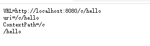

<!DOCTYPE html>
<html lang="en">
<head>

  <meta charset="UTF-8">
<meta name="viewport" content="width=device-width, initial-scale=1, maximum-scale=2">
<meta name="theme-color" content="#222">
<meta name="generator" content="Hexo 4.1.1">
  <link rel="apple-touch-icon" sizes="180x180" href="/images/apple-touch-icon-next.png">
  <link rel="icon" type="image/png" sizes="32x32" href="/images/favicon-32x32-next.png">
  <link rel="icon" type="image/png" sizes="16x16" href="/images/favicon-16x16-next.png">
  <link rel="mask-icon" href="/images/logo.svg" color="#222">

<link rel="stylesheet" href="/css/main.css">


<link rel="stylesheet" href="/lib/font-awesome/css/font-awesome.min.css">


<script id="hexo-configurations">
  var NexT = window.NexT || {};
  var CONFIG = {
    hostname: new URL('http://yoursite.com').hostname,
    root: '/',
    scheme: 'Mist',
    version: '7.6.0',
    exturl: false,
    sidebar: {"position":"left","display":"post","padding":18,"offset":12,"onmobile":false},
    copycode: {"enable":false,"show_result":false,"style":null},
    back2top: {"enable":true,"sidebar":true,"scrollpercent":true},
    bookmark: {"enable":false,"color":"#222","save":"auto"},
    fancybox: false,
    mediumzoom: false,
    lazyload: false,
    pangu: false,
    comments: {"style":"tabs","active":null,"storage":true,"lazyload":false,"nav":null},
    algolia: {
      appID: '',
      apiKey: '',
      indexName: '',
      hits: {"per_page":10},
      labels: {"input_placeholder":"Search for Posts","hits_empty":"We didn't find any results for the search: ${query}","hits_stats":"${hits} results found in ${time} ms"}
    },
    localsearch: {"enable":true,"trigger":"auto","top_n_per_article":1,"unescape":false,"preload":false},
    path: 'search.xml',
    motion: {"enable":true,"async":false,"transition":{"post_block":"fadeIn","post_header":"slideDownIn","post_body":"slideDownIn","coll_header":"slideLeftIn","sidebar":"slideUpIn"}}
  };
</script>

  <meta name="description" content="JavaEE复习笔记 根据上课的笔记整理与补充。contact: 405544641@qq.com  Spring的思想 控制翻转:让容器管理对象的创建与销毁，依赖注入:利用反射实现，动态地向一个对象提供其所需的其他对象 JavaEE三大组件: Servlet, Filter, Listener组件必须有 init(conf)  destroy() web容器(servlet容器)请求怎么来到se">
<meta property="og:type" content="article">
<meta property="og:title" content="JavaEE复习笔记">
<meta property="og:url" content="http://yoursite.com/2019/12/27/JavaEE%E5%A4%8D%E4%B9%A0%E7%AC%94%E8%AE%B0/index.html">
<meta property="og:site_name" content="SakuyuiのBLOG">
<meta property="og:description" content="JavaEE复习笔记 根据上课的笔记整理与补充。contact: 405544641@qq.com  Spring的思想 控制翻转:让容器管理对象的创建与销毁，依赖注入:利用反射实现，动态地向一个对象提供其所需的其他对象 JavaEE三大组件: Servlet, Filter, Listener组件必须有 init(conf)  destroy() web容器(servlet容器)请求怎么来到se">
<meta property="og:locale" content="en_US">
<meta property="og:image" content="http://yoursite.com/2019/12/27/JavaEE%E5%A4%8D%E4%B9%A0%E7%AC%94%E8%AE%B0/1576752145733.png">
<meta property="og:image" content="http://yoursite.com/2019/12/27/JavaEE%E5%A4%8D%E4%B9%A0%E7%AC%94%E8%AE%B0/1576666287803.png">
<meta property="og:image" content="http://yoursite.com/2019/12/27/JavaEE%E5%A4%8D%E4%B9%A0%E7%AC%94%E8%AE%B0/1576668415360.png">
<meta property="og:image" content="http://yoursite.com/2019/12/27/JavaEE%E5%A4%8D%E4%B9%A0%E7%AC%94%E8%AE%B0/1576751175527.png">
<meta property="og:image" content="http://yoursite.com/2019/12/27/JavaEE%E5%A4%8D%E4%B9%A0%E7%AC%94%E8%AE%B0/1577526473068.png">
<meta property="og:image" content="http://yoursite.com/2019/12/27/JavaEE%E5%A4%8D%E4%B9%A0%E7%AC%94%E8%AE%B0/1576755405347.png">
<meta property="og:image" content="http://yoursite.com/2019/12/27/JavaEE%E5%A4%8D%E4%B9%A0%E7%AC%94%E8%AE%B0/1576755801639.png">
<meta property="og:image" content="http://yoursite.com/2019/12/27/JavaEE%E5%A4%8D%E4%B9%A0%E7%AC%94%E8%AE%B0/1576837387364.png">
<meta property="og:image" content="http://yoursite.com/2019/12/27/JavaEE%E5%A4%8D%E4%B9%A0%E7%AC%94%E8%AE%B0/1576837550820.png">
<meta property="og:image" content="http://yoursite.com/2019/12/27/JavaEE%E5%A4%8D%E4%B9%A0%E7%AC%94%E8%AE%B0/1576926948994.png">
<meta property="og:image" content="http://yoursite.com/2019/12/27/JavaEE%E5%A4%8D%E4%B9%A0%E7%AC%94%E8%AE%B0/1576927652916.png">
<meta property="og:image" content="http://yoursite.com/2019/12/27/JavaEE%E5%A4%8D%E4%B9%A0%E7%AC%94%E8%AE%B0/1576928767713.png">
<meta property="og:image" content="http://yoursite.com/2019/12/27/JavaEE%E5%A4%8D%E4%B9%A0%E7%AC%94%E8%AE%B0/1577019206826.png">
<meta property="og:image" content="http://yoursite.com/2019/12/27/JavaEE%E5%A4%8D%E4%B9%A0%E7%AC%94%E8%AE%B0/1577019274572.png">
<meta property="og:image" content="http://yoursite.com/2019/12/27/JavaEE%E5%A4%8D%E4%B9%A0%E7%AC%94%E8%AE%B0/1577019288532.png">
<meta property="og:image" content="http://yoursite.com/2019/12/27/JavaEE%E5%A4%8D%E4%B9%A0%E7%AC%94%E8%AE%B0/1577108017698.png">
<meta property="og:image" content="http://yoursite.com/2019/12/27/JavaEE%E5%A4%8D%E4%B9%A0%E7%AC%94%E8%AE%B0/1577108031514.png">
<meta property="og:image" content="http://yoursite.com/2019/12/27/JavaEE%E5%A4%8D%E4%B9%A0%E7%AC%94%E8%AE%B0/1577109028126.png">
<meta property="og:image" content="http://yoursite.com/2019/12/27/JavaEE%E5%A4%8D%E4%B9%A0%E7%AC%94%E8%AE%B0/1577109361275.png">
<meta property="og:image" content="http://yoursite.com/2019/12/27/JavaEE%E5%A4%8D%E4%B9%A0%E7%AC%94%E8%AE%B0/1577149900456.png">
<meta property="og:image" content="http://yoursite.com/2019/12/27/JavaEE%E5%A4%8D%E4%B9%A0%E7%AC%94%E8%AE%B0/1577190283404.png">
<meta property="og:image" content="http://yoursite.com/2019/12/27/JavaEE%E5%A4%8D%E4%B9%A0%E7%AC%94%E8%AE%B0/1577190982621.png">
<meta property="og:image" content="http://yoursite.com/2019/12/27/JavaEE%E5%A4%8D%E4%B9%A0%E7%AC%94%E8%AE%B0/1577192449553.png">
<meta property="og:image" content="http://yoursite.com/2019/12/27/JavaEE%E5%A4%8D%E4%B9%A0%E7%AC%94%E8%AE%B0/1577192453472.png">
<meta property="og:image" content="http://yoursite.com/2019/12/27/JavaEE%E5%A4%8D%E4%B9%A0%E7%AC%94%E8%AE%B0/1577192702206.png">
<meta property="og:image" content="http://yoursite.com/2019/12/27/JavaEE%E5%A4%8D%E4%B9%A0%E7%AC%94%E8%AE%B0/1577279596344.png">
<meta property="og:image" content="http://yoursite.com/2019/12/27/JavaEE%E5%A4%8D%E4%B9%A0%E7%AC%94%E8%AE%B0/1577348271650.png">
<meta property="og:image" content="http://yoursite.com/2019/12/27/JavaEE%E5%A4%8D%E4%B9%A0%E7%AC%94%E8%AE%B0/1577348422425.png">
<meta property="og:image" content="http://yoursite.com/2019/12/27/JavaEE%E5%A4%8D%E4%B9%A0%E7%AC%94%E8%AE%B0/1577348302257.png">
<meta property="og:image" content="http://yoursite.com/2019/12/27/JavaEE%E5%A4%8D%E4%B9%A0%E7%AC%94%E8%AE%B0/1577334477619.png">
<meta property="og:image" content="http://yoursite.com/2019/12/27/JavaEE%E5%A4%8D%E4%B9%A0%E7%AC%94%E8%AE%B0/1577353107292.png">
<meta property="og:image" content="http://yoursite.com/2019/12/27/JavaEE%E5%A4%8D%E4%B9%A0%E7%AC%94%E8%AE%B0/1577357845641.png">
<meta property="og:image" content="http://yoursite.com/2019/12/27/JavaEE%E5%A4%8D%E4%B9%A0%E7%AC%94%E8%AE%B0/1577441245805.png">
<meta property="og:image" content="http://yoursite.com/2019/12/27/JavaEE%E5%A4%8D%E4%B9%A0%E7%AC%94%E8%AE%B0/1577442308648.png">
<meta property="og:image" content="http://yoursite.com/2019/12/27/JavaEE%E5%A4%8D%E4%B9%A0%E7%AC%94%E8%AE%B0/1577442800697.png">
<meta property="og:image" content="http://yoursite.com/2019/12/27/JavaEE%E5%A4%8D%E4%B9%A0%E7%AC%94%E8%AE%B0/1577442854042.png">
<meta property="og:image" content="http://yoursite.com/2019/12/27/JavaEE%E5%A4%8D%E4%B9%A0%E7%AC%94%E8%AE%B0/1577443042248.png">
<meta property="og:image" content="http://yoursite.com/2019/12/27/JavaEE%E5%A4%8D%E4%B9%A0%E7%AC%94%E8%AE%B0/1577443381575.png">
<meta property="og:image" content="http://yoursite.com/2019/12/27/JavaEE%E5%A4%8D%E4%B9%A0%E7%AC%94%E8%AE%B0/1577445252136.png">
<meta property="og:image" content="http://yoursite.com/2019/12/27/JavaEE%E5%A4%8D%E4%B9%A0%E7%AC%94%E8%AE%B0/1577445264912.png">
<meta property="og:image" content="http://yoursite.com/2019/12/27/JavaEE%E5%A4%8D%E4%B9%A0%E7%AC%94%E8%AE%B0/1577445271623.png">
<meta property="og:image" content="http://yoursite.com/2019/12/27/JavaEE%E5%A4%8D%E4%B9%A0%E7%AC%94%E8%AE%B0/1577445317110.png">
<meta property="og:image" content="http://yoursite.com/2019/12/27/JavaEE%E5%A4%8D%E4%B9%A0%E7%AC%94%E8%AE%B0/1577445380410.png">
<meta property="og:image" content="http://yoursite.com/2019/12/27/JavaEE%E5%A4%8D%E4%B9%A0%E7%AC%94%E8%AE%B0/1577445386386.png">
<meta property="og:image" content="http://yoursite.com/2019/12/27/JavaEE%E5%A4%8D%E4%B9%A0%E7%AC%94%E8%AE%B0/1577445397929.png">
<meta property="og:image" content="http://yoursite.com/2019/12/27/JavaEE%E5%A4%8D%E4%B9%A0%E7%AC%94%E8%AE%B0/1577511378663.png">
<meta property="article:published_time" content="2019-12-27T13:35:14.000Z">
<meta property="article:modified_time" content="2019-12-29T08:52:06.190Z">
<meta property="article:author" content="Sakuyui39">
<meta name="twitter:card" content="summary">
<meta name="twitter:image" content="http://yoursite.com/2019/12/27/JavaEE%E5%A4%8D%E4%B9%A0%E7%AC%94%E8%AE%B0/1576752145733.png">

<link rel="canonical" href="http://yoursite.com/2019/12/27/JavaEE%E5%A4%8D%E4%B9%A0%E7%AC%94%E8%AE%B0/">


<script id="page-configurations">
  // https://hexo.io/docs/variables.html
  CONFIG.page = {
    sidebar: "",
    isHome: false,
    isPost: true
  };
</script>

  <title>JavaEE复习笔记 | SakuyuiのBLOG</title>
  


  <noscript>
  <style>
  .use-motion .brand,
  .use-motion .menu-item,
  .sidebar-inner,
  .use-motion .post-block,
  .use-motion .pagination,
  .use-motion .comments,
  .use-motion .post-header,
  .use-motion .post-body,
  .use-motion .collection-header { opacity: initial; }

  .use-motion .site-title,
  .use-motion .site-subtitle {
    opacity: initial;
    top: initial;
  }

  .use-motion .logo-line-before i { left: initial; }
  .use-motion .logo-line-after i { right: initial; }
  </style>
</noscript>

</head>

<body itemscope itemtype="http://schema.org/WebPage">
  <div class="container use-motion">
    <div class="headband"></div>

    <header class="header" itemscope itemtype="http://schema.org/WPHeader">
      <div class="header-inner"><div class="site-brand-container">
  <div class="site-meta">

    <div>
      <a href="/" class="brand" rel="start">
        <span class="logo-line-before"><i></i></span>
        <span class="site-title">SakuyuiのBLOG</span>
        <span class="logo-line-after"><i></i></span>
      </a>
    </div>
  </div>

  <div class="site-nav-toggle">
    <div class="toggle" aria-label="Toggle navigation bar">
      <span class="toggle-line toggle-line-first"></span>
      <span class="toggle-line toggle-line-middle"></span>
      <span class="toggle-line toggle-line-last"></span>
    </div>
  </div>
</div>


<nav class="site-nav">
  
  <ul id="menu" class="menu">
        <li class="menu-item menu-item-home">

    <a href="/" rel="section"><i class="fa fa-fw fa-home"></i>Home</a>

  </li>
        <li class="menu-item menu-item-about">

    <a href="/about/" rel="section"><i class="fa fa-fw fa-user"></i>About</a>

  </li>
        <li class="menu-item menu-item-tags">

    <a href="/tags/" rel="section"><i class="fa fa-fw fa-tags"></i>Tags</a>

  </li>
        <li class="menu-item menu-item-categories">

    <a href="/categories/" rel="section"><i class="fa fa-fw fa-th"></i>Categories</a>

  </li>
        <li class="menu-item menu-item-archives">

    <a href="/archives/" rel="section"><i class="fa fa-fw fa-archive"></i>Archives</a>

  </li>
        <li class="menu-item menu-item-sitemap">

    <a href="/sitemap.xml" rel="section"><i class="fa fa-fw fa-sitemap"></i>Sitemap</a>

  </li>
      <li class="menu-item menu-item-search">
        <a role="button" class="popup-trigger"><i class="fa fa-search fa-fw"></i>Search
        </a>
      </li>
  </ul>

</nav>
  <div class="site-search">
    <div class="popup search-popup">
    <div class="search-header">
  <span class="search-icon">
    <i class="fa fa-search"></i>
  </span>
  <div class="search-input-container">
    <input autocomplete="off" autocorrect="off" autocapitalize="none"
           placeholder="Searching..." spellcheck="false"
           type="text" id="search-input">
  </div>
  <span class="popup-btn-close">
    <i class="fa fa-times-circle"></i>
  </span>
</div>
<div id="search-result"></div>

</div>
<div class="search-pop-overlay"></div>

  </div>
</div>
    </header>

    
  <div class="reading-progress-bar"></div>

  <a href="https://github.com/Sakuyui" class="github-corner" title="My github" aria-label="My github" rel="noopener" target="_blank"><svg width="80" height="80" viewBox="0 0 250 250" aria-hidden="true"><path d="M0,0 L115,115 L130,115 L142,142 L250,250 L250,0 Z"></path><path d="M128.3,109.0 C113.8,99.7 119.0,89.6 119.0,89.6 C122.0,82.7 120.5,78.6 120.5,78.6 C119.2,72.0 123.4,76.3 123.4,76.3 C127.3,80.9 125.5,87.3 125.5,87.3 C122.9,97.6 130.6,101.9 134.4,103.2" fill="currentColor" style="transform-origin: 130px 106px;" class="octo-arm"></path><path d="M115.0,115.0 C114.9,115.1 118.7,116.5 119.8,115.4 L133.7,101.6 C136.9,99.2 139.9,98.4 142.2,98.6 C133.8,88.0 127.5,74.4 143.8,58.0 C148.5,53.4 154.0,51.2 159.7,51.0 C160.3,49.4 163.2,43.6 171.4,40.1 C171.4,40.1 176.1,42.5 178.8,56.2 C183.1,58.6 187.2,61.8 190.9,65.4 C194.5,69.0 197.7,73.2 200.1,77.6 C213.8,80.2 216.3,84.9 216.3,84.9 C212.7,93.1 206.9,96.0 205.4,96.6 C205.1,102.4 203.0,107.8 198.3,112.5 C181.9,128.9 168.3,122.5 157.7,114.1 C157.9,116.9 156.7,120.9 152.7,124.9 L141.0,136.5 C139.8,137.7 141.6,141.9 141.8,141.8 Z" fill="currentColor" class="octo-body"></path></svg></a>


    <main class="main">
      <div class="main-inner">
        <div class="content-wrap">
          

          <div class="content">
            

  <div class="posts-expand">
      
  
  
  <article itemscope itemtype="http://schema.org/Article" class="post-block " lang="en">
    <link itemprop="mainEntityOfPage" href="http://yoursite.com/2019/12/27/JavaEE%E5%A4%8D%E4%B9%A0%E7%AC%94%E8%AE%B0/">

    <span hidden itemprop="author" itemscope itemtype="http://schema.org/Person">
      <meta itemprop="image" content="/images/tx.jpg">
      <meta itemprop="name" content="Sakuyui39">
      <meta itemprop="description" content="">
    </span>

    <span hidden itemprop="publisher" itemscope itemtype="http://schema.org/Organization">
      <meta itemprop="name" content="SakuyuiのBLOG">
    </span>
      <header class="post-header">
        <h1 class="post-title" itemprop="name headline">
          JavaEE复习笔记
        </h1>

        <div class="post-meta">
            <span class="post-meta-item">
              <span class="post-meta-item-icon">
                <i class="fa fa-calendar-o"></i>
              </span>
              <span class="post-meta-item-text">Posted on</span>

              <time title="Created: 2019-12-27 21:35:14" itemprop="dateCreated datePublished" datetime="2019-12-27T21:35:14+08:00">2019-12-27</time>
            </span>
              <span class="post-meta-item">
                <span class="post-meta-item-icon">
                  <i class="fa fa-calendar-check-o"></i>
                </span>
                <span class="post-meta-item-text">Edited on</span>
                <time title="Modified: 2019-12-29 16:52:06" itemprop="dateModified" datetime="2019-12-29T16:52:06+08:00">2019-12-29</time>
              </span>

          
            <span class="post-meta-item" title="Views" id="busuanzi_container_page_pv" style="display: none;">
              <span class="post-meta-item-icon">
                <i class="fa fa-eye"></i>
              </span>
              <span class="post-meta-item-text">Views: </span>
              <span id="busuanzi_value_page_pv"></span>
            </span><br>
            <span class="post-meta-item" title="Symbols count in article">
              <span class="post-meta-item-icon">
                <i class="fa fa-file-word-o"></i>
              </span>
                <span class="post-meta-item-text">Symbols count in article: </span>
              <span>79k</span>
            </span>
            <span class="post-meta-item" title="Reading time">
              <span class="post-meta-item-icon">
                <i class="fa fa-clock-o"></i>
              </span>
                <span class="post-meta-item-text">Reading time &asymp;</span>
              <span>1:12</span>
            </span>

        </div>
      </header>

    
    
    
    <div class="post-body" itemprop="articleBody">

      
        <h2 id="JavaEE复习笔记"><a href="#JavaEE复习笔记" class="headerlink" title="JavaEE复习笔记"></a>JavaEE复习笔记</h2><blockquote>
<p>根据上课的笔记整理与补充。<br>contact: 405544641@qq.com</p>
</blockquote>
<p>Spring的思想 <strong>控制翻转</strong>:让容器管理对象的创建与销毁，<strong>依赖注入</strong>:利用<strong>反射</strong>实现，动态地向一个对象提供其所需的其他对象</p>
<p>JavaEE三大组件: Servlet, Filter, Listener<br>组件必须有 <strong>init(conf)</strong>  <strong>destroy()</strong></p>
<h5 id="web容器-servlet容器"><a href="#web容器-servlet容器" class="headerlink" title="web容器(servlet容器)"></a>web容器(servlet容器)</h5><p>请求怎么来到servlet呢？答案是servlet容器，比如我们最常用的tomcat，同样，你可以随便谷歌一个servlet的hello world教程，里面肯定会让你把servlet部署到一个容器中，不然你的servlet压根不会起作用。<br>tomcat才是与客户端直接打交道的家伙，他监听了端口，请求过来后，根据url等信息，确定要将请求交给哪个servlet去处理，然后调用那个servlet的service方法，service方法返回一个response对象，tomcat再把这个response返回给客户端。</p>
<p>import javax.servlet servlet是个接口<br>HttpServlert实现Servlet<br>使用Servlet ServletRequest ServletRespond<br>1.首先要在web.xml中进行配置</p>
<pre><code>&lt;servlet&gt;
    &lt;servlet-name&gt;A&lt;/servlet-name&gt;   //servlet名
    &lt;servlet-class&gt;com.xxx.xx.xx.servlet类名&lt;/servlet-class&gt;  //对应的类
    &lt;init-param&gt;   //初始化参数
        &lt;param-name&gt;p1&lt;/param-name&gt;&lt;param-value&gt;123&lt;/param-value&gt;
    &lt;/init-param&gt;
&lt;/servlet&gt;
//! 到这为止已经定义好servlet,不会有任何错误。 当服务器启动后，也会创建好servlet. 但是无法访问因为没mapping
&lt;servlet-mapping&gt;
    &lt;servlet-name&gt;A&lt;/servlet-name&gt; //要和上面对应
    &lt;url-pattern&gt;/login&lt;/url-pattern&gt;     //注意 /代表的是web Content的位置
&lt;/servlet-mapping&gt;


**url-pattern:  /是缺省匹配，若当前访问资源地址的所有 Servlet 都不匹配时，就由缺省的 Servlet 进行处理
               优先级:全路径匹配&gt;部分路径匹配&gt;拓展名匹配
               如果我们web应该中同时配置&quot;/&quot;和&quot;/*&quot;，那么默认的Servelt永远都不会被匹配到，所有的路径最终都会匹配到&quot;/*&quot;上
               /不能匹配jsp,原因是jsp容器已经默认映射了一个*.jsp,优先级要高于/  /*可以
               精确路径匹配&gt;最长路径匹配&gt;扩展匹配     /a/*.xxx 这样方式会报错。不能混搭。
注：Filter不会像servlet只匹配一个。 顺序与定义顺序相同
/*和/** 后者会匹配更多的目录 (Ant path匹配。spring支持。还支持正则表达式,进行更复杂的匹配)
</code></pre><p>关于url-pattern的/, 同样在struts中，默认映射了<em>.action </em>.do ,  /无法覆盖他们<br>strut2的配置文件加载顺序为： </p>
<pre><code>   Struts-default.xml---&gt; struts-plugin.xml--&gt; struts.xml--&gt;   struts.properties--&gt; web.xml
</code></pre><p><strong>使用servlet</strong></p>
<pre><code>//AServlet.java
package a; //倒序 com.xxx,部门,项目:模块

////先引入这3个包
import javax.servlet.*;
import javax.servlet.http.*;
import java.io.*;
public class AServlet extends HttpServlet{


   /*  默认已经实现
   private ServletConfig config;
   @Ovrride
   public void init(ServletConfig config) throws ServletException{
      super(config);
      init();
    }*/

    @Override
    protected void doGet(HttpServletRequest request, HttpServletResponse response) throws    IOException,ServletException{
    response.setContentType(&quot;text/html;charset=UTF-8&quot;);  //默认ISO8859-1
    response.setCharacterEncoding(&quot;UTF-8&quot;)//设置编码
    PrintWriter out=response.getWriter();
    out.println(&quot;&lt;h1&gt;this is servlet&lt;/h1&gt;&quot;);
    //不要close()   谁创建的流谁负责关闭
        }

    @Ovrride
    protected void doPost(HttpServletRequest request,HttpServletResponse){
    }

/*
    @Override
    public void destroy(){
        super.destroy();
    }

    @Override
    public void service(SevletRequest req,ServletResponse res) throws ServletException,IOException{


       res.setContextType(&quot;text/html&quot;)；
       PrintWriter out=response.getWriter();
       out.println(&quot;this is servlet&quot;);

       //获取config
       //getServletConfig();
        //!!!!考ServletConfig   的函数

       HttpServletRquest hsr=(HttpServeltRequest) req;
       HttpServletResponse hsres=(HttpServletResponse) res;
       //GET / HTTP/1.1\r\n            
       //GET /HTTP/a HTTP/1.1\r\n
       String method=res.getMethod();
       if(method.compareTo(&quot;POST&quot;)==0){
           doPost(req,res);
       }else if(&quot;GET&quot;.equals(method)){
            doGet(req,res);
       }

}      
*/
   }
</code></pre><p>注意事项</p>
<ul>
<li>doPost doGet serice 一般抛2个异常  ServletException 和IOException</li>
<li>serve的两个参数是ServletRequest和ServletResponse</li>
<li>Context-Type: </li>
<li><ul>
<li>text/html ： HTML格式<br>text/plain ：纯文本格式<br>text/xml ：  XML格式<br>image/gif ：gif图片格式<br>image/jpeg ：jpg图片格式<br>image/png：png图片格式<br>application/xhtml+xml ：XHTML格式<br>application/xml     ： XML数据格式<br>application/atom+xml  ：Atom XML聚合格式<br>application/json    ： JSON数据格式<br>application/pdf       ：pdf格式<br>application/msword  ： Word文档格式<br>application/octet-stream ： 二进制流数据（如常见的文件下载）</li>
</ul>
</li>
</ul>
<ul>
<li>用<strong>this.getServletConfig().getInitParameter(String);</strong> 获取servlet的初始化参数<br><br>每个servlet有一个servletconfig,但是全局只有一个servletcontext (每个web应用仅有一个，servletcontext也可以叫applicationContext,是最大的web域对象)</li>
</ul>
<p>使用<strong>response.setContentType(String);</strong>设置 如text/html;charset=UTF-8</p>
<ul>
<li>输出办法: 首先从response.getWriter();获取PrintWriter对象，之后利用其进行流操作输出  (<strong>println();</strong>)</li>
<li>HttpServlet 中已存在 service()方法.缺省的服务功能是调用与 HTTP 请求的方法相应的 do 功能。<br>例如,如果 HTTP 请求方法为 GET,则缺省情况下就调用 doGet()。   super(req,res)</li>
</ul>
<p>setContentType(String) 和 setCharacterEncoding()的区别:前者设置的是页面的静态文字编码（浏览器显示的编码），后者关系到动态参数的编码</p>
<p>HTTP缓存<strong>(课上说的必考，但是考纲好像又没有)</strong></p>
<ul>
<li><p>http缓存有<strong>强缓存</strong>,<strong>协商缓存</strong><br>步骤1. 浏览器先根据这个资源的http头信息来判断是否命中强缓存。如果命中则直接加在缓存中的资源，并不会将请求发送到服务器。 (返回<strong>200</strong>)<br>2.如果未命中强缓存，则浏览器会将资源加载请求发送到服务器。服务器来判断浏览器本地缓存是否失效。若可以使用，则服务器并不会返回资源信息，浏览器继续从缓存加载资源。<br>3.如果未命中协商缓存，则服务器会将完整的资源返回给浏览器，浏览器加载新资源，并更新缓存。</p>
</li>
<li><p><strong>强缓存</strong>: 利用http的返回头中的<strong>Expires</strong>或者<strong>Cache-Control</strong>两个字段来控制的。前者表示缓存过期时间(具体时间)，后者表示相对时间。如Cache-Control:3600，代表着资源的有效期是3600秒。所以服务器与客户端时间偏差也不会导致问题。<br><strong>同时启用的时候Cache-Control优先级高</strong></p>
</li>
<li><ul>
<li>Cache-Control可包含的字段:<br>1.max-age 单位s<br>2.s-maxage 同1,只适用于共享缓存，私有缓存中被省略<br>3.public 响应可以被任何对象缓存<br>4.private 响应只能被单个用户，非共享。不能被代理服务器缓存<br>5.<strong>no-cache:</strong>强制缓存了响应的用户，在使用数据前都要先发请求到服务器<br>6.<strong>no-store</strong>:禁止缓存</li>
</ul>
</li>
<li><p><strong>协商缓存:</strong><br>服务器根据http头信息中的Last-Modify/If-Modify-Since或Etag/If-None-Match来判断是否命中协商缓存。如果命中，则http返回码为<strong>304</strong>，浏览器从缓存中加载资源。</p>
</li>
</ul>
<p>Last-Modify/If-Modify-Since<br>ETag/If-None-Match<br>与Last-Modify/If-Modify-Since不同的是，Etag/If-None-Match返回的是一个校验码（ETag: entity tag）。ETag可以保证每一个资源是唯一的，资源变化都会导致ETag变化*。ETag值的变更则说明资源状态已经被修改。服务器根据浏览器上发送的If-None-Match值来判断是否命中缓存。</p>
<p></p>
<p><strong>ServletRequest</strong><br><strong>&gt;&gt;getAttribute(String)</strong> //获取存在request的属性  是Object<br><strong>&gt;&gt;getAttributeNames()</strong>  //Enumeration  用hasMoreElements() nextElement()进行遍历<br><strong>&gt;&gt;getParameter(String)</strong>//获取存在request的参数  只能是String  (可以获得通过get post传进来的数据)<br><strong>&gt;&gt;getParameterNames()</strong> //返回迭代器<br><strong>&gt;&gt;getParameterValues()</strong>  //返回String[]<br></p>
<p><strong>&gt;&gt;getProtocol()</strong><br><strong>&gt;&gt;getRealPath(String path)</strong> //寻找某个资源在服务器文件系统上的实际地址<br><strong>&gt;&gt;getServletContext()</strong></p>
<p><strong>HttpServletResponse</strong><br><strong>&gt;&gt;addCookie(Cookie cookie)</strong>      //添加一个cookies</p>
<blockquote>
<p>new Cookie(String name, String value)  之后可以用setMaxAge设置有效时间(秒)</p>
</blockquote>
<p><strong>&gt;&gt;getHeader(String name)</strong><br><strong>&gt;&gt;addHeader(String name, String value)</strong><br>//继承来的<br><strong>&gt;&gt;    getWriter()</strong><br><strong>&gt;&gt;setContentType(String type)</strong></p>
<ul>
<li><strong>ServletConfig getServletConfig(); //必考</strong></li>
</ul>
<p><strong>ServletConfig</strong></p>
<ul>
<li><strong>getInitParameter(String name)</strong></li>
<li><strong>getServletName()</strong></li>
<li><strong>getServletContext()</strong></li>
</ul>
<p>!!!! 必考<strong>ServletContext</strong><br>context可以直接在servlet里get,也可以从request.getSession().getServletContext() 也可以 request.getServletContext();<br>常见的有6种方式可以Get到serveletContext:</p>
<ul>
<li>在servlet类里get</li>
<li>reques.get   //从request get   (域对象 )</li>
<li>request.getSession().get  //从http session get   (域对象)</li>
<li>servletConfig.get  //从servletconfig里get</li>
<li>ServletContextEvent对象里get</li>
<li>PageContext里get   (域对象)</li>
</ul>
<p>也就是从另外三大web域对象都可以get到,再加上从context事件还有servlet配置，还有servlet本身get</p>
<p>servletcontent.getRealPath(“/“)和servletcontent.getContextPath()的区别<br>前面是获取ServletContext 所在的文件系统上的实际位置。  后者是获取配置的servletContext路径</p>
<blockquote>
<p>ServletContext官方叫servlet上下文。服务器会为每一个<strong>应用创建一个对象</strong>，这个对象就是ServletContext对象。这个对象全局唯一，而且工程内部的所有servlet都共享这个对象。所以叫全局应用程序共享对象。<br>凡是域对象都有如下3个方法：</p>
</blockquote>
<p><strong>setAttribute(name,value);</strong>name是String类型，value是Object类型；</p>
<p>往域对象里面添加数据，添加时以key-value形式添加</p>
<p><strong>getAttribute(name);</strong></p>
<p>根据指定的key读取域对象里面的数据</p>
<p><strong>removeAttribute(name);</strong></p>
<p>根据指定的key从域对象里面删除数据</p>
<p>同时因为都是web域对象。所以除servletcontext外，<strong>其他三个域都能通过getServletContext()</strong>获取到servletContext</p>
<p>可以获取web.xml中的全局参数</p>
<pre><code>  &lt;context-param&gt;
         &lt;param-name&gt;param1&lt;/param-name&gt;
         &lt;param-value&gt;value1&lt;/param-value&gt;
  &lt;/context-param&gt;
 用servletContext.getInitParameter(parameName);获取
</code></pre><p><strong>&gt;&gt;getContextPath()；</strong><br>设置contextpath的方式<br>/META-INF/context.xml</p>
<p>!!<strong>可以获取servletContext()的方式</strong></p>
<ul>
<li>ServletConfig的getServletContext()</li>
<li>request.getSession().getServletContext()</li>
<li>直接 getServletContext();</li>
</ul>
<p><strong>WEB应用结构</strong></p>
<blockquote>
<p>xxxxxxxxxxxx\first<br>   -&gt;               WEB-INF<br>    ——&gt;                   classes<br>     ——&gt;                lib<br>             ——&gt;            web.xml<br>             -&gt;     META-INF<br>               ——&gt;          context.xml    </p>
</blockquote>
<p>!!!<strong>URL 三部分</strong><br>1.schema 2.服务器位置 3.资源路径</p>
<pre><code>&lt;schema&gt;://&lt;user&gt;:&lt;password&gt;@&lt;host&gt;:&lt;port&gt;/&lt;path&gt;:&lt;params&gt;?&lt;query&gt;#&lt;frag&gt;
</code></pre><h4 id="header"><a href="#header" class="headerlink" title="header"></a>header</h4><p>http的两部分内容:header body <strong>,header项用\r\n区分</strong>,区分 两次回车换行<br></p>
<blockquote>
<p><strong>编码</strong> base64:3个字节为一组  ucs:任何一个字符都是4字节</p>
</blockquote>
<p><strong>http状态码：</strong></p>
<p>2xx OK<br>3xx 重定向<br>—&gt;302 Object Moved  要根据Location重新发请求</p>
<p>4xx 客户端错误<br>—&gt;401 (访问拒绝)客户端证书无效,账号密码错误<br>—&gt;403 Access Forbidden 请求结构正确。但是服务器不想处理.403暗示了所请求的资源确实存在。跟401一样，若服务器不想透露此信息，它可以谎报一个404<br>—&gt;404 资源不存在<br>—&gt;405 请求方法错误。比如用了不支持的协议，或者不支持get,结果用了get</p>
<p>5xx:服务器端错误<br>502 代理错误<br>500 异常<br>501 服务器不能识别一个方法。类似405,但是405是能够被服务器识别，但是资源不支持该方法.<br><strong>101表示服务器已经理解了客户端的请求，并将通过Upgrade消息头通知客户端采用不同的协议来完成这个请求。</strong></p>
<p><strong>web.xml</strong></p>
<pre><code>&lt;welcome-file-list&gt;  //可以设置多个,可以访问到web-inf内的文件,会返回第一个找到的文件，找不到就404,首页的路径只能是一个实际存在的物理文件地址，不能将首页设置成Servlet或Controller的地址，再通过来Servlet或Controller返回一个页面
     &lt;welcome-file&gt;a.jsp&lt;/welcome-file&gt;
     &lt;welcome-file&gt;b.html&lt;/welcome-file&gt;
     &lt;welcome-file&gt;c.html&lt;/welcome-file&gt;
&lt;/welcome-file-list&gt;
</code></pre><p>xml区分大小写</p>
<h3 id="部署web-application在Tomcat"><a href="#部署web-application在Tomcat" class="headerlink" title="部署web application在Tomcat"></a>部署web application在Tomcat</h3><pre><code>&lt;Host name=&quot;localhost&quot;  appBase=&quot;webapps&quot;
        unpackWARs=&quot;true&quot; autoDeploy=&quot;true&quot;&gt;


    &lt;!-- 部署 &quot;三个&quot; web application  --&gt;
    &lt;Context path=&quot;/a&quot; docBase=&quot;/somefoler/first&quot;/&gt;  //虚拟路径1 context path=/a
    &lt;Context path=&quot;/s&quot; docBase=&quot;/otherfolder/second&quot;/&gt; //虚拟路径2 context path=/s
    &lt;Context path=&quot;&quot; docBase=&quot;/otherfolder/second&quot;/&gt;   //虚拟路径3

    &lt;!-- SingleSignOn valve, share authentication between web applications
         Documentation at: /docs/config/valve.html --&gt;
    &lt;!--
    &lt;Valve className=&quot;org.apache.catalina.authenticator.SingleSignOn&quot; /&gt;
    --&gt;

    &lt;!-- Access log processes all example.
         Documentation at: /docs/config/valve.html
         Note: The pattern used is equivalent to using pattern=&quot;common&quot; --&gt;
    &lt;Valve className=&quot;org.apache.catalina.valves.AccessLogValve&quot; directory=&quot;logs&quot;
           prefix=&quot;localhost_access_log&quot; suffix=&quot;.txt&quot;
           pattern=&quot;%h %l %u %t &amp;quot;%r&amp;quot; %s %b&quot; /&gt;

  &lt;/Host&gt;
</code></pre><p><strong>!!如何自己设计ServletContext().getRealPath(); </strong><br>A: ServletContext().getContextPath();可以用，然后去tomact的 server.xml中寻找对应docBase..然后就可以get到了,如果docBase是相对路径的话，也可以根据tomcat所在路径加上这个相对位置确定</p>
<pre><code>//使用真实路径读取文件
String filename = getServletContext().getRealPath(&quot;/WEB-INF/aFolder/a.txt&quot;);
FileInputStream fis = new FileInputStream(filename);
</code></pre><h3 id="web-socket"><a href="#web-socket" class="headerlink" title="web socket"></a>web socket</h3><blockquote>
<p>现在前后端通讯的常用的方式有ajax，websocket，还有fetch</p>
</blockquote>
<pre><code>  //创建套接字
  Socket s = new Socket(&quot;www.baidu.com&quot;, 80);  //这是Java的Socket建立过程。直接访问底层的TCP协议。
  var socket = new WebSocket(&quot;ws://localhost:8080/websocket1/b&quot;);  //JavaScript代码。
</code></pre><p>websocket可以跨域访问。非常灵活。</p>
<pre><code>Connection: Upgrade
Cookie: JSESSIONID=6FFBEA8EB6951EAD7D123A2D7ED70861
Host: localhost:8080
Origin: http://localhost:8080
Sec-WebSocket-Key: 6ZxylD/4f4qccKeapm3LEQ==
Sec-WebSocket-Version: 13
Upgrade: websocket
User-Agent: Mozilla/5.0 (Windows NT 10.0; WOW64; Trident/7.0; rv:11.0) like Gecko
</code></pre><p>响应代码：101，不是200， 101表示服务器已经理解了客户端的请求，并将通过Upgrade消息头通知客户端采用不同的协议来完成这个请求。<br>    在发送完这个响应最后的空行后，服务器将会切换到 在Upgrade消息头中定义的那些协议。: 只有在切换新的协议更有好处的时候才应该采取类似措施。<br>    例如，切换到新的HTTP版本比旧版本更有优势，或者切换到一个实时且同步的协议以传送利用此类特性的资源。</p>
<pre><code>    Connection: upgrade
    Date: Thu, 12 Sep 2019 00:54:07 GMT
    Sec-WebSocket-Accept: 5uiTO0X9qutU+74Ugp/7eMHoXQk=
    Upgrade: websocket
</code></pre><p>和以往的http请求不同，增加了Connection: Upgrade， Upgrade： websocket等请求头，大家理解，客户端请求建立websocket.<br>    服务器可以不支持。当然，客户端程序来自同一个服务器，在某个使用websocket的应用中，显然支持。我们的JavaEE版本8支持websocket.<br>    至于请求中的Sec-WebSocket-Key, 是base64编码，源数据是16个字节的随机数。服务器收到这个数据， 并不做Base64解码，而是直接拼上一个magic字符串，<br>    “258EAFA5-E914-47DA-95CA-C5AB0DC85B11”, 然后转换为utf-8编码的字节数组，最后做SHA1，（见MD5,CRC,SHA-1,SHA-256）。<br>    对SHA1产生的20个字节（160个比特位）做BASE64，然后就是Sec-WebSocket-Accept: 5uiTO0X9qutU+74Ugp/7eMHoXQk=, 返回给客户端。<br>    客户端当然做同样的算法，然后做比对，实际上就是完成websocket的握手过程。</p>
<pre><code>握手完毕，http协议“转换”到websocket协议。
</code></pre><ul>
<li>1、客户端：申请协议升级</li>
<li>2.服务端：响应协议升级 :状态代码101表示协议切换。到此完成协议升级，后续的数据交互都按照新的协议来。</li>
<li>3、Sec-WebSocket-Accept的计算 :Sec-WebSocket-Accept根据<strong>客户端请求首部</strong>的Sec-WebSocket-Key计算出来。</li>
</ul>
<p></p>
<pre><code>实例:
// Create WebSocket connection.
const socket = new WebSocket(&#39;ws://localhost:8080&#39;);

// Connection opened
socket.addEventListener(&#39;open&#39;, function (event) {
    socket.send(&#39;Hello Server!&#39;);
});

// Listen for messages
socket.addEventListener(&#39;message&#39;, function (event) {
    console.log(&#39;Message from server &#39;, event.data);
});

//javaee
@ServerEndpoint(&quot;/chatroom/{roomId}/{nickName}&quot;)    //挂一个服务器资源
public class ChatRoomServer{
        @OnOpen//连接打开时
        public void onOpen(Session session,@PathParam(&quot;roomId&quot;) long roomId,
        @PathParam(&quot;nickName&quot;) String unDecName){
        }  //可以注入参数
        @OnMessage  //消息抵达

        public void onMessage(Session session, String message, @PathParam(&quot;roomId&quot;) long roomId, 
        @PathParam(&quot;nickName&quot;) String unDecName)
        {

        }

        @OnClose
        public void onClose(Session session, @PathParam(&quot;roomId&quot;) long roomId, 
            @PathParam(&quot;nickName&quot;) String unDecName)
        {}


}
</code></pre><p></p>
<pre><code>package a;

//Socket客户端
import java.io.*;
import java.net.*;

import javax.websocket.*;

@ClientEndpoint
public class WebSocketClienet {

//就是例子代码，只有一个session
public static Session session = null;

@OnOpen
public void onOpen(Session session) {
    try {
        this.session = session;
        System.out.println(&quot;create a session.&quot;);
        session.getBasicRemote().sendText(&quot;hello&quot;);
        System.out.println(&quot;send hello to server.&quot;);

    } catch (IOException ex) {

    }
}

@OnMessage
public void processMessage(Session session, String message, boolean last) {
    System.out.println(message);
}

@OnClose
public void end() {
    System.out.println(&quot;bye server.&quot;);
}

@OnError
public void onError(Throwable t) throws Throwable {
    System.out.println(&quot;meet some exception in client.&quot;);
    t.printStackTrace();
}


public static void main(String[] args) throws Exception {
    WebSocketContainer container = ContainerProvider.getWebSocketContainer();  //获取web容器
    container.connectToServer(WebSocketClienet.class, URI.create(&quot;ws://localhost:8080/websocket1/b&quot;));   //连接到服务器

    for(int i = 0; i &lt; 10; i++) {
        Thread.sleep(1000);
        session.getBasicRemote().sendText(&quot;&quot; + new java.util.Date());
    }
    session.close();
}

}
</code></pre><h4 id="Server-Sent-Event-SSE-服务器向客户端发送消息-应该是只做了解"><a href="#Server-Sent-Event-SSE-服务器向客户端发送消息-应该是只做了解" class="headerlink" title="Server Sent Event(SSE):服务器向客户端发送消息 (应该是只做了解)"></a>Server Sent Event(SSE):服务器向客户端发送消息 (应该是只做了解)</h4><blockquote>
<p>一般服务器向客户端发送消息常用的方式就是用setInterval去做轮询或者是websocket。只是前者setInterval<strong>（//每60秒执行myFunction()一次 setInterval(“myFunction()”,60000); ）</strong>轮询这个中间的时间间隔需要考虑好，如果事件间隔较短，这对服务器的压力比较大，如果事件较长，则有些需要立即立即做出响应的方式是做不到的。后者的websocket相对来说技技术要求有点高，实现起来比较复杂。所以就有现在的这种方式就是Server-sent Events我们只需要需要在服务器端将事件流发送给前端，然后前端接收到后端所传给的事件流，然后触发事件，这是事件的捕获和监听其实和前端的事件捕获和触发是一样的</p>
</blockquote>
<p>用法:</p>
<pre><code>var evtSource = new EventSource(&#39;/sse&#39;); //创建es对象，/sse是服务器端给的向前端发送事件的接口地址。通过get方式进行发送事件。
//var evtSource = new EventSource(&#39;http://www.baidu.com&#39;, { withCredentials: true }); (如果跨域)
//至此接收器创建好了
evtSource.onmessage = function (e) {
      console.log(e.data)
}
//也就是当后端发送的内容之后就会进行触发，并且将data给打印出来，首先要提出的的是，Server-sent Events 所发送的内容都是字符串的流而且是通过utf-8的编码格式的，如果后端希望给前端发送一串json，也需要将json转化成相对应的字符串，然后在发送给前端，前端接收之后，再讲所发送的字符串转换成json，然后进行处理。

//然后就是监听后端发送给前端的事件内容，不如说，我们后端给前端sent一个testEvent事件，前端通过事件接收者，去触犯相对应的事件监听，因此就有了下面的工作流程
evtSource.addEventListener(&#39;testEvent&#39;, function (e) {
      console.log(e)
})
...
后端应该如何才能给我们发送事件呢，
首先我们发送内容是需要给前端设置一个mime为text/event-stream,然后在进行发送事件的内容
&#39;Content-Type&#39;: &#39;text/event-stream&#39;
</code></pre><ul>
<li><strong>注解@Endpoint(“/b”)</strong> // @ServerEndpoint(“/b”)指定服务器资源</li>
<li>sse使用 javax.socket.endpoint</li>
</ul>
<h4 id="javax-websocket-Endpoint类"><a href="#javax-websocket-Endpoint类" class="headerlink" title="javax.websocket.Endpoint类"></a>javax.websocket.Endpoint类</h4><p>使用方法。一个类继承Endpoint,之后重写onOpen,onClose,onError<br>对于Socket来说，每一端都是一个EndPoint<br>还可以具体一点，用ServerEndpoint或者ClientEndpoint</p>
<h4 id="Session-接口-websocket的"><a href="#Session-接口-websocket的" class="headerlink" title="Session 接口  (websocket的)"></a>Session 接口  (websocket的)</h4><p><strong>&gt;&gt;  getBasicRemote()</strong> :返回RemoteEndpoint object，getAsyncRemote是非阻塞式的，getBasicRemote是阻塞式的</p>
<blockquote>
<p>大部分情况下，推荐使用getAsyncRemote()。由于getBasicRemote()的同步特性，并且它支持部分消息的发送即sendText(xxx,boolean isLast). isLast的值表示是否一次发送消息中的部分消息，对于如下情况:<br>           session.getBasicRemote().sendText(message, false);<br>           session.getBasicRemote().sendBinary(data);<br>           session.getBasicRemote().sendText(message, true);<br>                   由于同步特性，第二行的消息必须等待第一行的发送完成才能进行，而第一行的剩余部分消息要等第二行发送完才能继续发送，所以在第二行会抛出IllegalStateException异常。如果要使用getBasicRemote()同步发送消息，则避免尽量一次发送全部消息，使用部分消息来发送。</p>
</blockquote>
<p><strong>&gt;&gt;WebSocketContainer    getContainer()</strong></p>
<h4 id="WebSocketContainer"><a href="#WebSocketContainer" class="headerlink" title="WebSocketContainer"></a>WebSocketContainer</h4><p><strong>connectToServer(class,URI)</strong> ，返回Session</p>
<p>所以…. session &lt;-&gt; WebSocketContainer 可以相互获取。  session是从container连接服务器后来的.</p>
<p>至于<strong>Endpoint</strong>,客户端和服务器都是一个Endpoint</p>
<h3 id="HttpSession"><a href="#HttpSession" class="headerlink" title="HttpSession"></a>HttpSession</h3><pre><code>import javax.servlet.http.*;
</code></pre><p>其是一个域对象。因此也具有<br><strong>getAttribute(String)</strong>,<strong>setAttribute(String,Object)</strong>等函数<br>同时有<strong>getID()</strong>,<strong>getServletContext()</strong>等函数<br><strong>创建时间 getCreationTime()</strong><br><strong>set/getMaxInactiveInterval()</strong> //超时时间</p>
<p>设置超时时间<br>也可以在web.xml中</p>
<pre><code>&lt;session-config&gt;
    &lt;session-timeout&gt;2&lt;/session-timeout&gt;  //2分钟,默认为30
&lt;/session-config&gt;
#也可以session.setMaxInactiveInterval（30*60）;
</code></pre><ul>
<li><strong>扔到Attribute中的对象要序列化</strong></li>
</ul>
<blockquote>
<p><strong>Q:如何识别一个request是某个会话的</strong><br>tomcat有个全局的map,产生的session对象的id一定放在<strong>response中，返回给浏览器.</strong>下次请求会带上它</p>
</blockquote>
<p>一般来说Session是基于Cookie实现的,<br><strong>!!!会话追踪手段</strong></p>
<ul>
<li>手段1：cookies.</li>
<li>手段2: URL重写 如果浏览器不支持Cookie或用户阻止了所有Cookie，可以把会话ID附加在HTML页面中所有的URL上，这些页面作为响应发送给客户。这样，当用户单击URL时，<strong>会话ID被自动作为请求行的一部分</strong>而不是作为头行发送回服务器。这种方法称为URL重写(URL rewriting)。</li>
<li><p>手段3:隐藏域     </p>
<pre><code>  使用隐藏域：&lt;input type=&quot;hidden&quot; name=&quot;…&quot; value=&quot;…&quot;&gt;
</code></pre><p>jsessionID ssessionID …</p>
</li>
</ul>
<p>刷新是个问题<br>有时不用httpsession, 把会话信息放在分布式存储系统。只要ID在就行</p>
<h4 id="Cookies"><a href="#Cookies" class="headerlink" title="Cookies"></a>Cookies</h4><pre><code>response.addCookies(Cookies);
//Cookie(String name, String value)
还可以setMaxAge()设置生存时间
还有serDomain设置有效域 （于是可以跨域共享cookie）
setPath(String uri) 也和上面差不多，可以指定cookie有效的地址（支持通配符）
setHttpOnly(boolean isHttpOnly)
</code></pre><h4 id="压缩-要考"><a href="#压缩-要考" class="headerlink" title="压缩(要考)"></a>压缩(要考)</h4><p><strong>gzip</strong>是一种数据格式，默认且目前仅使用deflate算法压缩data部分；<br><br></p>
<h4 id="RequestDispatcher"><a href="#RequestDispatcher" class="headerlink" title="RequestDispatcher"></a>RequestDispatcher</h4><p>可以用requestDispatcher来分发请求到多个组件去处理。</p>
<blockquote>
<p>从ServletRequest.getRequestDispatcher(java.lang.String)获取</p>
<p>rd.forward() //转发，让其他组件去处理，自己不管了<br>rd.include(request,response) 包含.是让其他组件去处理，但是还会返回来，自己继续处理</p>
</blockquote>
<p>!!<strong>Interface SingleThreadMode()   //保证不会有多个线程执行service函数</strong></p>
<p>解决并发访问的两种方法：</p>
<ul>
<li>1.加锁</li>
<li>2.数据复制</li>
</ul>
<p><strong>事务的ACID</strong></p>
<ul>
<li>A:原子性</li>
<li>C:一致性</li>
<li>I:隔离性</li>
<li>D:持久性</li>
</ul>
<p><strong>request.getContextPath(): </strong> 可以获取所配置的ServletContext路径</p>
<blockquote>
<p><strong>例:</strong><a href="http://localhost:8080/dmsd-itoo-exam-log-web/course/index.jsp，在tomcat中配置了application" target="_blank" rel="noopener">http://localhost:8080/dmsd-itoo-exam-log-web/course/index.jsp，在tomcat中配置了application</a> context为 /dmsd-itoo-exam-log-web<br>   request.getContextPath()，得到context路径：/dmsd-itoo-exam-log-web (取决于contextpath的配置)；<br>        request.getServletPath()，返回当前请求的资源相对于context的路径：/course/index.jsp；<br>request.getRequestURL()，返回请求资源的完整地址：<a href="http://localhost:8080/dmsd-itoo-exam-log-web/course/index.jsp；" target="_blank" rel="noopener">http://localhost:8080/dmsd-itoo-exam-log-web/course/index.jsp；</a><br> request.getRequestURI() ，返回包含Context路径的资源路径：/dmsd-itoo-exam-log-web/course/index.jsp。</p>
</blockquote>
<h3 id="Filter"><a href="#Filter" class="headerlink" title="Filter"></a>Filter</h3><pre><code>doFilter(ServletRequest request, ServletResponse response, FilterChain chain)


  import java.io.*;
import javax.servlet.*;
import javax.servlet.http.*;
public mFliter implements Fliter{
   private FliterConfig config;
   public void destroy(){
   }
   public void doFliter(ServletRequest request, ServletResponse response, FilterChain chain) throws ServletException,IoException{
       chain.doFilter(req,res);  //当前过滤器处理结束，往下一个过滤器
       //多个过滤器会形成一个过滤器链，如果不想拦截下该请求的话，应该让Filter往下传，后面没有filter后就到达资源
    //想拦截的话可以什么都不干，也可以直接跳到另一个地方（用redirect,forwer之类的
   }
}
//Filter通常要做的事情：
//Filter最最最早执行。
//在资源到达后端之前就执行了。  也就是拦截器
//数据写在session里
//常见作用:1.认证 不拦截/login.html 2.日志 3.数据转换 4.数据压缩 5.加密 6
</code></pre><p>访问计时： 应该加在filter<br>getServletContext().log(“xxxxxxxxxxxx”);</p>
<p><strong>乱码解决</strong> (Filter不仅可以用来拦截不合法的请求，还可以用来编码转换)</p>
<pre><code>request.setCharcterEncoding(&quot;UTF-8&quot;); //可以用filter实现
String wd=new String(wd.getBytes(&quot;ISO-8859-1&quot;),&quot;UTF-8&quot;);


public class EncodingFilter(){
     public void doFilter(...){
         request.setCharacterEncoding(&quot;UTF-8&quot;);
         chain.doiFliter(req,res);
         //是ServletRquest，可以处理各种协议.
         HttpServletRequest request=()req;
         HttpServletRespond request=()res;
         HttpSession session=request.getSession();
         String name=()session.getAtrtribute(&quot;Username&quot;);
         if(username==null || username.length()==0){
             request.getRepondDispatcher(&quot;/login.html&quot;).forward(req,res);

         }
     }
 }
 //之后还要部署


    &lt;init-param&gt;&lt;param-name&gt;&lt;/&gt; &lt;param-value&gt;&lt;/&gt;&lt;/&gt;
    [servletConfigure.getConfig().]getInitParameter();


        &lt;/Filter&gt;
&lt;Filter-mapping&gt;
    &lt;url-pattern&gt; /aa/*&lt;/url-pattern&gt;  //可以过滤任何匹配的资源
    &lt;servlet-name&gt;&lt;/&gt;   //指定就过滤某个servlet
    &lt;dispatcher&gt;REQUEST&lt;/&gt; //默认，容器内所产生的请求不拦截  想拦截可以 FORWARD INCLUDE [ERROR]() 都拦截写多个dispatcher
&lt;/Filter-mapping&gt;


//登入服务里，登入完后，把值Set在session的attribute里
request.getSession().inavaild()//把session里面的东西都释放掉

在请求到达资源之前，先到过滤器
filter后面一般处理response.        
用forward过滤器一般不起作用

//Error 触发错误状态时会走过滤器
//include 通过&lt;jsp:include page=&quot;xxx.jsp&quot; /&gt;，嵌入进来的页面，每嵌入的一个页面，都会走一次指定的过滤器。    (servlet通过include指令过来的请求)
//Forward 当前页面是通过请求转发转发过来的场景，会走指定的过滤器

@WebFilter(dispatcherType={...,...})
</code></pre><h3 id="JSP"><a href="#JSP" class="headerlink" title="JSP"></a>JSP</h3><p>由于JSP需要编译，第一次会比较慢<br>其本质是一个servlet,jsp会被编译成servlet,通过调用service()函数，得到结果。浏览器是无法直接识别jsp的。<br>jsp不需要部署</p>
<pre><code>&lt;%= new java.util.Date() &amp;&gt;
    &lt;%@include file=&quot;footer.jsp&quot; %&gt;  //指令include 指令include会把代码直接插入进来用，最终只编译生成一个servlet
    &lt;jsp:include page=&quot;footer2.jsp&quot; %&gt; //动作include,会编译生成2个servlet,把另一个servlet生成的结果拿过来用
    //还可以传参
    //因为指令&lt;%@include 会导致两个jsp合并成为同一个java文件，所以就不存在传参的问题，在发出hello.jsp 里定义的变量，直接可以在footer.jsp中访问。
    //而动作其实是对footer.jsp进行了一次独立的访问，那么就有传参的需要。
    &lt;jsp:include page=&quot;footer2.jsp&quot;&gt;
        &lt;jsp:param  name=&quot;year&quot; value=&quot;2017&quot; /&gt;  //参数是扔到request的parameters里的
    &lt;/jsp:include&gt;
    在footer.jsp中
    &lt;%=request.getParameter(&quot;year&quot;)%&gt; //获取参数
</code></pre><p>&lt;%— 隐式注释：定义类、方法、全局变量、常量 —%&gt;</p>
<p>&lt;%java代码%&gt; <strong>脚本片段:其中可包含局部变量、java语句</strong></p>
<blockquote>
<p>我们可以在&lt;%%&gt;中定义局部变量或者调用方法，但不能定义方法。在jsp页面可以有多个脚本片段，但是多个脚本片段之间要保证结构完整。</p>
</blockquote>
<p>&lt;%@ 指令 </p>
<blockquote>
<p>详见下面的内容</p>
</blockquote>
<p>&lt;%! 声明</p>
<blockquote>
<p>其中写的内容将来会直接翻译在Servlet类中，因为我们可以在类中定义方法和属性以及全局变量，所以我们可以在&lt;%!%&gt;中声明方法、属性、全局变量。</p>
</blockquote>
<p>&lt;%= %&gt;表达式 <strong>用于将已经声明的变量或者表达式输出到网页上面。</strong> </p>
<p><strong>JSP要掌握包括三个指令，六个动作，九个内置对象还有四大域对象等</strong><br>jsp会自动引入</p>
<pre><code>    import java.lang.*;
    import javax.servlet.*;
    import javax.servlet.http.*;
    import javax.servlet.jsp.*;  
</code></pre><h4 id="Page指令"><a href="#Page指令" class="headerlink" title="Page指令"></a>Page指令</h4><blockquote>
<p>作用 : 用于定义JSP页面的各种属性，告诉tomcat服务器如何翻译JSP文件。</p>
<ul>
<li><strong>import</strong>:引入包<br>&lt;%@ page import=”java.util.List”%&gt;</li>
<li><strong>session</strong>:是否自动创建session<br>&lt;%@ page session=”true” %&gt; &lt;%—Default—%&gt; </li>
<li><strong>contentType</strong>:等同于response.setContentType(“text/html;charset=utf-8”);<br>&lt;%@ page contentType=”text/html;charset=utf-8”%&gt;</li>
<li><strong>pageEncoding</strong>:告诉JSP引擎要翻译的文件使用的编码。</li>
<li><strong>isELIgnored</strong>: 是否支持EL表达式。 默认是false</li>
<li><strong>isErrorPage: </strong>是否创建throwable对象。默认是false;</li>
<li><strong>errorPage: </strong>如果页面中有错误，则跳转到指定的资源。</li>
<li><strong>isThreadSafe 默认true</strong>,线程安全下servlet可以并行访问</li>
</ul>
</blockquote>
<h4 id="Include指令"><a href="#Include指令" class="headerlink" title="Include指令"></a>Include指令</h4><p>静态包含：把其它资源包含到当前页面中，代码格式：</p>
<figure class="highlight plain"><figcaption><span>include file</span></figcaption><table><tr><td class="gutter"><pre><span class="line">1</span><br><span class="line">2</span><br><span class="line">3</span><br><span class="line">4</span><br></pre></td><td class="code"><pre><span class="line"></span><br><span class="line">动态包含：</span><br><span class="line"></span><br><span class="line">&#96;&#96;&#96;&lt;jsp:include page&#x3D;&quot;&#x2F;include&#x2F;header.jsp&quot;&gt;&lt;&#x2F;jsp:include&gt;</span><br></pre></td></tr></table></figure>
<h4 id="taglib指令"><a href="#taglib指令" class="headerlink" title="taglib指令"></a>taglib指令</h4><blockquote>
<p>在JSP页面中导入JSTL标签库。替换jsp中的java代码片段。</p>
</blockquote>
<figure class="highlight plain"><figcaption><span>taglib uri</span></figcaption><table><tr><td class="gutter"><pre><span class="line">1</span><br><span class="line">2</span><br><span class="line">3</span><br><span class="line">4</span><br><span class="line">5</span><br><span class="line">6</span><br><span class="line">7</span><br><span class="line">8</span><br><span class="line">9</span><br><span class="line">10</span><br><span class="line">11</span><br><span class="line">12</span><br><span class="line">13</span><br><span class="line">14</span><br><span class="line">15</span><br><span class="line">16</span><br><span class="line">17</span><br><span class="line">18</span><br><span class="line">19</span><br><span class="line">20</span><br><span class="line">21</span><br><span class="line">22</span><br><span class="line">23</span><br><span class="line">24</span><br><span class="line">25</span><br><span class="line">26</span><br><span class="line">27</span><br><span class="line">28</span><br><span class="line">29</span><br><span class="line">30</span><br><span class="line">31</span><br><span class="line">32</span><br><span class="line">33</span><br><span class="line">34</span><br><span class="line">35</span><br><span class="line">36</span><br><span class="line">37</span><br><span class="line">38</span><br><span class="line">39</span><br><span class="line">40</span><br><span class="line">41</span><br><span class="line">42</span><br><span class="line">43</span><br><span class="line">44</span><br><span class="line">45</span><br><span class="line">46</span><br><span class="line">47</span><br><span class="line">48</span><br><span class="line">49</span><br><span class="line">50</span><br><span class="line">51</span><br><span class="line">52</span><br><span class="line">53</span><br><span class="line">54</span><br><span class="line">55</span><br><span class="line">56</span><br><span class="line">57</span><br><span class="line">58</span><br><span class="line">59</span><br><span class="line">60</span><br><span class="line">61</span><br><span class="line">62</span><br><span class="line">63</span><br><span class="line">64</span><br><span class="line">65</span><br><span class="line">66</span><br><span class="line">67</span><br><span class="line">68</span><br><span class="line">69</span><br><span class="line">70</span><br><span class="line">71</span><br><span class="line">72</span><br></pre></td><td class="code"><pre><span class="line"></span><br><span class="line">Q:如何自定义标签?</span><br><span class="line"></span><br><span class="line">**SimpleTag &amp; SimpleTagSupport**</span><br><span class="line">SimpleTag是一个接口，SimpleTagSupport实现了它</span><br><span class="line">&gt;SimpleTag里的函数</span><br><span class="line">&gt;+ **doTag()** &#x2F;&#x2F;是实现这个标签	void</span><br><span class="line">&gt;+ **getParent()** &#x2F;&#x2F;return JspTag ,返回父标签</span><br><span class="line">&gt;**setParent()**</span><br><span class="line"></span><br><span class="line">**SimpleTagSupport**</span><br><span class="line">&gt;+ **doTag()**</span><br><span class="line">&gt;+ **getJspBody()**  &#x2F;&#x2F;JspFragment</span><br><span class="line">&gt;....</span><br><span class="line"></span><br><span class="line"></span><br><span class="line">创建自定义标签:</span><br><span class="line">+ **step1:**</span><br><span class="line">创建一个类实现SimpleTag接口,也可以直接继承SimpleTagSupport</span><br><span class="line"></span><br><span class="line">+ **step2:** 重写doTag()</span><br><span class="line"></span><br><span class="line">		package com.akb.tag;</span><br><span class="line">		import java.io.*;</span><br><span class="line">		import javax.servlet.jsp.JspException; &#x2F;&#x2F;要记</span><br><span class="line">		import javax.servlet.jsp.tagext.SimpleTagSupport;</span><br><span class="line">		public class HelloTag extends SimpleTagSupport &#123;</span><br><span class="line">		@Override</span><br><span class="line">		public void doTag() throws JspException, IOException &#123;</span><br><span class="line">		System.out.println(&quot;hello&quot;);</span><br><span class="line">		&#125;</span><br><span class="line">		&#125;</span><br><span class="line"></span><br><span class="line"></span><br><span class="line">+ **step 3:**</span><br><span class="line">创建tld文件</span><br><span class="line"></span><br><span class="line"></span><br><span class="line"></span><br><span class="line">		</span><br><span class="line">		&lt;?xml version&#x3D;&quot;1.0&quot; encoding&#x3D;&quot;UTF-8&quot; ?&gt;</span><br><span class="line"></span><br><span class="line">		&lt;taglib xmlns&#x3D;&quot;http:&#x2F;&#x2F;java.sun.com&#x2F;xml&#x2F;ns&#x2F;javaee&quot;</span><br><span class="line">	    xmlns:xsi&#x3D;&quot;http:&#x2F;&#x2F;www.w3.org&#x2F;2001&#x2F;XMLSchema-instance&quot;</span><br><span class="line">		    xsi:schemaLocation&#x3D;&quot;http:&#x2F;&#x2F;java.sun.com&#x2F;xml&#x2F;ns&#x2F;javaee http:&#x2F;&#x2F;java.sun.com&#x2F;xml&#x2F;ns&#x2F;javaee&#x2F;web-jsptaglibrary_2_1.xsd&quot;</span><br><span class="line">	    version&#x3D;&quot;2.1&quot;&gt;</span><br><span class="line">		  &lt;!-- 描述 --&gt;</span><br><span class="line">		  &lt;description&gt;QJL 1.2 core library&lt;&#x2F;description&gt;</span><br><span class="line">		  &lt;!-- 显示名称 --&gt;</span><br><span class="line">		  &lt;display-name&gt;QJL core&lt;&#x2F;display-name&gt;</span><br><span class="line">		  &lt;!-- 版本信息 --&gt;</span><br><span class="line">		  &lt;tlib-version&gt;1.2&lt;&#x2F;tlib-version&gt;</span><br><span class="line">		  &lt;!-- 建议使用的标签的前缀 --&gt;</span><br><span class="line">		  &lt;short-name&gt;akb&lt;&#x2F;short-name&gt;   &#x2F;&#x2F;重要,是标签的前缀</span><br><span class="line">		  &lt;!-- 标签的uri --&gt;</span><br><span class="line">		  &lt;uri&gt;http:&#x2F;&#x2F;java.sun.com&#x2F;akb&#x2F;core&lt;&#x2F;uri&gt;</span><br><span class="line">	</span><br><span class="line">		  &lt;tag&gt;</span><br><span class="line">		&lt;!-- 标签名称 --&gt;</span><br><span class="line">	    &lt;name&gt;hello&lt;&#x2F;name&gt;  &#x2F;&#x2F;重要，标签名</span><br><span class="line">	    &lt;!-- 标签处理类的全限定性类名 --&gt;</span><br><span class="line">	    &lt;tag-class&gt;com.akb.tag.HelloTag&lt;&#x2F;tag-class&gt;  &#x2F;&#x2F;重要，要指定实现了SimpleTag的类</span><br><span class="line">	    &lt;!-- 标签的内容：为空就表示是一个单标签，标签里面没有内容 --&gt;</span><br><span class="line">	    &lt;body-content&gt;empty&lt;&#x2F;body-content&gt;</span><br><span class="line">		  &lt;&#x2F;tag&gt;</span><br><span class="line">		&lt;&#x2F;taglib&gt;</span><br><span class="line"></span><br><span class="line"></span><br><span class="line"></span><br><span class="line"></span><br><span class="line">**short-name 用来定义当前定义的一系列标签的前缀，在页面上引入的时候可以这样写：**</span><br><span class="line">&#96;&#96;&#96;&lt;%@ taglib uri&#x3D;&quot;http:&#x2F;&#x2F;java.sun.com&#x2F;akb&#x2F;core&quot; prefix&#x3D;&quot;akb&quot; %&gt;</span><br></pre></td></tr></table></figure>
<p><strong>uri 其实是个虚的路径映射，并不是访问互联网上的某个网址（lz 一开始就以为引入 jstl 就要访问网页…），在 tld 文件中的 uri 标签上写什么，在页面上引入的时候就在 uri 属性上写什么，容器就会自动去 tld 文件中找该 uri 对应的标签了。</strong></p>
<p>之后只需要在jsp中</p>
<pre><code>&lt;akb:hello /&gt;
</code></pre><p>就能输出<strong>hello world</strong></p>
<p>编译后的代码</p>
<pre><code>com.lyu.tag.HelloTag _jspx_th_qjl_005fhello_005f0 = new com.lyu.tag.HelloTag();
  _jsp_getInstanceManager().newInstance(_jspx_th_qjl_005fhello_005f0);
  try {
    _jspx_th_qjl_005fhello_005f0.setJspContext(_jspx_page_context);
// 调用 doTag 方法
_jspx_th_qjl_005fhello_005f0.doTag();
  } finally {
    _jsp_getInstanceManager().destroyInstance(_jspx_th_qjl_005fhello_005f0);
  }
</code></pre><p>可以看到是 servlet 容器（tomcat）创建了标签处理类的对象，并且调用了标签处理类的 doTag 方法。</p>
<p>如何自定义一个单标签<code>&lt;akb:path /&gt;</code>，调用该标签的时候把当前web应用的上下文路径在页面输出?<br>思路：我要要获取ServletContext,而<strong>PageContext有getServletContext()</strong><br>我们可以首先用<strong>SimpleTagSupport </strong>提供的<strong>JspContext getJspContext()</strong>方法, 而PageContext是JspContext的直接子类<br><strong>把他强转换为PageContext</strong></p>
<pre><code>@Override
public void doTag() throws IOException {
// 1.获取当前web应用的上下文路径
PageContext ctx = (PageContext) this.getJspContext();
String path = ctx.getServletContext().getContextPath();
// 2.向浏览器输出路径
ctx.getOut().write(path);
}
</code></pre><p><strong>PageContext非常重要</strong> (四大域之一)<br>可以通过其获取ServletContext,还可以<strong>获取Session</strong>,还有forward()和include(),还可以<strong>getServletConfig()</strong>,<strong>getRequest()</strong>,<strong>getResponse()</strong>  (…因为jsp本质就个servlet)<br>其在 javax.servlet.jsp.*;</p>
<p><strong>有没有想过这个 JspContext 是什么时候注入到 SimpleTagSupport 里面的呢？</strong></p>
<pre><code>com.lyu.tag.PathTag _jspx_th_qjl_005fpath_005f0 = new com.lyu.tag.PathTag();
  _jsp_getInstanceManager().newInstance(_jspx_th_qjl_005fpath_005f0);
  try {
// 看这里，是容器调用了 setJspContext 方法来注入的一个 pageContext，注意是 PageContext，所以我们才可以进行强制类型转换
_jspx_th_qjl_005fpath_005f0.setJspContext(_jspx_page_context);
_jspx_th_qjl_005fpath_005f0.doTag();
} finally {
 _jsp_getInstanceManager().destroyInstance(_jspx_th_qjl_005fpath_005f0);
 }
return false;
</code></pre><p>Q：如何实现一个<code>&lt;akb:set var=&quot;&quot; value=&quot;&quot; scope=&quot;&quot; /&gt;</code>标签来向四大域中设置值?</p>
<p><strong>Web的四大域对象:</strong></p>
<ul>
<li><strong>ServletContext</strong>: 代表<strong>整个web应用的ServletContext对象</strong>，当服务器关闭，或web应用被移除时，ServletContext对象跟着被销毁。</li>
<li><strong>ServletRequest</strong>:在service方法调用前由服务器创建，传入service()方法，整个请求结束，ServletRequest生命周期结束。<br>作用于整个请求链。（请求转发也存在，请求转发属于一次请求。）</li>
<li><strong>Session</strong><br>浏览器可以为每一个用户的浏览器创建一个其独享的session对象，由于session为用户浏览器独享，所以用户在访问服务器的web资源时，可以把各自的数据放在各自的session中，当用户再去访问服务器中的其它web资源时，其它web资源再从用户各自的session中取出数据为用户服务。</li>
<li><strong>PageContext</strong><br>当对JSP的请求开始时创建，当响应结束时销毁。作用于整个JSP页面，是四大域中最小的一个。</li>
</ul>
<p><strong>getAttribute()只能获取自己域中保存的属性，而findAttribute()则会按照pageContext-&gt;request-&gt;session-&gt;servletContext的顺序查找有无对应的属性。</strong></p>
<figure class="highlight java"><table><tr><td class="gutter"><pre><span class="line">1</span><br><span class="line">2</span><br><span class="line">3</span><br><span class="line">4</span><br><span class="line">5</span><br><span class="line">6</span><br><span class="line">7</span><br><span class="line">8</span><br><span class="line">9</span><br><span class="line">10</span><br><span class="line">11</span><br><span class="line">12</span><br><span class="line">13</span><br><span class="line">14</span><br><span class="line">15</span><br><span class="line">16</span><br><span class="line">17</span><br><span class="line">18</span><br><span class="line">19</span><br><span class="line">20</span><br><span class="line">21</span><br><span class="line">22</span><br><span class="line">23</span><br><span class="line">24</span><br><span class="line">25</span><br><span class="line">26</span><br><span class="line">27</span><br><span class="line">28</span><br><span class="line">29</span><br><span class="line">30</span><br><span class="line">31</span><br><span class="line">32</span><br><span class="line">33</span><br><span class="line">34</span><br><span class="line">35</span><br><span class="line">36</span><br><span class="line">37</span><br><span class="line">38</span><br><span class="line">39</span><br><span class="line">40</span><br><span class="line">41</span><br><span class="line">42</span><br><span class="line">43</span><br><span class="line">44</span><br></pre></td><td class="code"><pre><span class="line">		<span class="keyword">public</span> <span class="class"><span class="keyword">class</span> <span class="title">SetTag</span> <span class="keyword">extends</span> <span class="title">SimpleTagSupport</span> </span>&#123;</span><br><span class="line">		</span><br><span class="line">	<span class="keyword">private</span> String <span class="keyword">var</span> = <span class="string">""</span>;</span><br><span class="line">	<span class="keyword">private</span> String value = <span class="string">""</span>;</span><br><span class="line">	<span class="comment">// 因为这个属性在 tld 文件中设置为不是必须的所以要设置一个默认值，否则方法中调用的时候会报空指针</span></span><br><span class="line">	<span class="keyword">private</span> String scope = <span class="string">""</span>;</span><br><span class="line">	</span><br><span class="line">	<span class="function"><span class="keyword">public</span> <span class="keyword">void</span> <span class="title">setVar</span><span class="params">(String <span class="keyword">var</span>)</span> </span>&#123;</span><br><span class="line">		<span class="keyword">this</span>.<span class="keyword">var</span> = <span class="keyword">var</span>;</span><br><span class="line">	&#125;</span><br><span class="line"></span><br><span class="line">	<span class="function"><span class="keyword">public</span> <span class="keyword">void</span> <span class="title">setValue</span><span class="params">(String value)</span> </span>&#123;</span><br><span class="line">		<span class="keyword">this</span>.value = value;</span><br><span class="line">	&#125;</span><br><span class="line"></span><br><span class="line">	<span class="function"><span class="keyword">public</span> <span class="keyword">void</span> <span class="title">setScope</span><span class="params">(String scope)</span> </span>&#123;</span><br><span class="line">		<span class="keyword">this</span>.scope = scope;</span><br><span class="line">	&#125;</span><br><span class="line"></span><br><span class="line">	<span class="meta">@Override</span></span><br><span class="line">	<span class="function"><span class="keyword">public</span> <span class="keyword">void</span> <span class="title">doTag</span><span class="params">()</span> <span class="keyword">throws</span> JspException, IOException </span>&#123;</span><br><span class="line">		<span class="comment">// 1.拿到PageContext</span></span><br><span class="line">		PageContext pageContext = (PageContext) <span class="keyword">this</span>.getJspContext();</span><br><span class="line">		</span><br><span class="line">		<span class="comment">// 2.获取标签中设置的属性值</span></span><br><span class="line">		<span class="comment">// get方法中已经获得</span></span><br><span class="line">		</span><br><span class="line">		<span class="comment">// 3.判断scope是哪个域，把属性值保存到对应的作用域里面</span></span><br><span class="line">		<span class="keyword">switch</span> (scope) &#123;</span><br><span class="line">		<span class="keyword">case</span> <span class="string">"request"</span>:  <span class="comment">//ServletRequest域</span></span><br><span class="line">			pageContext.setAttribute(<span class="keyword">var</span>, value, PageContext.REQUEST_SCOPE);  <span class="comment">//注意第三个参数</span></span><br><span class="line">			<span class="keyword">break</span>;</span><br><span class="line">		<span class="keyword">case</span> <span class="string">"session"</span>:  <span class="comment">//Session域</span></span><br><span class="line">			pageContext.setAttribute(<span class="keyword">var</span>, value, PageContext.SESSION_SCOPE); <span class="comment">//注意第三个参数</span></span><br><span class="line">			<span class="keyword">break</span>;</span><br><span class="line">		<span class="keyword">case</span> <span class="string">"application"</span>:  <span class="comment">//也就是ServletContext域</span></span><br><span class="line">			pageContext.setAttribute(<span class="keyword">var</span>, value, PageContext.APPLICATION_SCOPE); <span class="comment">//注意第三个参数</span></span><br><span class="line">			<span class="keyword">break</span>;</span><br><span class="line">		<span class="keyword">default</span>:</span><br><span class="line">			pageContext.setAttribute(<span class="keyword">var</span>, value);</span><br><span class="line">			<span class="keyword">break</span>;</span><br><span class="line">		&#125;</span><br><span class="line">	&#125;	</span><br><span class="line">&#125;</span><br></pre></td></tr></table></figure>
<p>tld文件有点变化,要加上属性声明</p>
<figure class="highlight plain"><table><tr><td class="gutter"><pre><span class="line">1</span><br><span class="line">2</span><br><span class="line">3</span><br><span class="line">4</span><br><span class="line">5</span><br><span class="line">6</span><br><span class="line">7</span><br><span class="line">8</span><br><span class="line">9</span><br><span class="line">10</span><br><span class="line">11</span><br><span class="line">12</span><br><span class="line">13</span><br><span class="line">14</span><br><span class="line">15</span><br><span class="line">16</span><br><span class="line">17</span><br><span class="line">18</span><br><span class="line">19</span><br><span class="line">20</span><br><span class="line">21</span><br><span class="line">22</span><br><span class="line">23</span><br><span class="line">24</span><br><span class="line">25</span><br><span class="line">26</span><br><span class="line">27</span><br><span class="line">28</span><br><span class="line">29</span><br><span class="line">30</span><br><span class="line">31</span><br><span class="line">32</span><br><span class="line">33</span><br><span class="line">34</span><br><span class="line">35</span><br><span class="line">36</span><br></pre></td><td class="code"><pre><span class="line">		&lt;tag&gt;</span><br><span class="line">	        &lt;!-- 标签的名称 --&gt;</span><br><span class="line">	        &lt;name&gt;set&lt;&#x2F;name&gt;</span><br><span class="line">	        &lt;!-- 继承了SimpleTagSupport的标签处理类 --&gt;</span><br><span class="line">		   &lt;tag-class&gt;com.lyu.tag.SetTag&lt;&#x2F;tag-class&gt;</span><br><span class="line">        &lt;!-- 标签的内容，empty就表示是一个单标签 --&gt;</span><br><span class="line">        &lt;body-content&gt;empty&lt;&#x2F;body-content&gt;</span><br><span class="line">        &lt;!-- 属性1 --&gt;</span><br><span class="line">        &lt;attribute&gt;</span><br><span class="line">            &lt;!-- 属性名 --&gt;</span><br><span class="line">            &lt;name&gt;var&lt;&#x2F;name&gt;</span><br><span class="line">            &lt;!-- 该属性是否必须 --&gt;</span><br><span class="line">            &lt;required&gt;true&lt;&#x2F;required&gt;</span><br><span class="line">            &lt;!-- 该属性是否可以接受运行时表达式的值(EL表达式) --&gt;</span><br><span class="line">            &lt;rtexprvalue&gt;false&lt;&#x2F;rtexprvalue&gt;</span><br><span class="line">        &lt;&#x2F;attribute&gt;</span><br><span class="line">        &lt;!-- 属性2 --&gt;</span><br><span class="line">        &lt;attribute&gt;</span><br><span class="line">            &lt;!-- 属性名 --&gt;</span><br><span class="line">            &lt;name&gt;value&lt;&#x2F;name&gt;</span><br><span class="line">            &lt;!-- 该属性是否必须 --&gt;</span><br><span class="line">            &lt;required&gt;true&lt;&#x2F;required&gt;</span><br><span class="line">            &lt;!-- 该属性是否可以接受运行时表达式的值(EL表达式) --&gt;</span><br><span class="line">            &lt;rtexprvalue&gt;true&lt;&#x2F;rtexprvalue&gt;</span><br><span class="line">        &lt;&#x2F;attribute&gt;</span><br><span class="line">        &lt;!-- 属性3 --&gt;</span><br><span class="line">        &lt;attribute&gt;</span><br><span class="line">            &lt;!-- 属性名 --&gt;</span><br><span class="line">            &lt;name&gt;scope&lt;&#x2F;name&gt;</span><br><span class="line">            &lt;!-- 该属性是否必须 --&gt;</span><br><span class="line">            &lt;required&gt;false&lt;&#x2F;required&gt;</span><br><span class="line">            &lt;!-- 该属性是否可以接受运行时表达式的值(EL表达式) --&gt;</span><br><span class="line">            &lt;rtexprvalue&gt;false&lt;&#x2F;rtexprvalue&gt;</span><br><span class="line">        &lt;&#x2F;attribute&gt;</span><br><span class="line">    &lt;&#x2F;tag&gt;</span><br><span class="line">&#125;</span><br></pre></td></tr></table></figure>
<p>如果不用SimpleTagSupport类，我们也可以自己写类继承TagSupport<br>然后重写doEngTag()和doStartTag()函数<br>//doTag() throws JspException,IOException<br>//doStartTag() throws Jspxception<br>是适配器模式设计模式</p>
<p>在jsp2.0还可以使用更简单的方式<br>在<strong>WEB-INF/tags</strong>下创建tag文件 (time.tag)</p>
<pre><code>&lt;%@ tag import=&quot;java.util.*&quot; import=&quot;java.text.*&quot; %&gt;
&lt;%
  DateFormat df = DateFormat.getDateInstance(DateFormat.LONG);
  Date d = new Date(System.currentTimeMillis());
  out.println(df.format(d));
%&gt;
</code></pre><p>引用</p>
<pre><code>&lt;%@ taglib prefix=&quot;util&quot; tagdir=&quot;/WEB-INF/tags&quot; %&gt;
&lt;util:time/&gt;
</code></pre><p>有参数的标签</p>
<pre><code>&lt;%@ attribute name=&quot;count&quot; type=&quot;java.lang.Integer&quot; required=&quot;true&quot; %&gt;
&lt;%@ attribute name=&quot;value&quot; type=&quot;java.lang.String&quot; required=&quot;true&quot; %&gt;
&lt;%!....%&gt;
</code></pre><h4 id="补充PageContext相关"><a href="#补充PageContext相关" class="headerlink" title="补充PageContext相关"></a>补充PageContext相关</h4><pre><code>getSession(),    getServletContext() , getServletConfig()
    getRequest(),     getRequest()     forward(String relativeUrlPath)
        include(String relativeUrlPath)     include(String relativeUrlPath,boolean flush)
</code></pre><p>关于flush:</p>
<blockquote>
<p>默认为false，在include另一个jsp文件时，默认情况下，服务器会等待该文件被读到底端，然后才输出到客户端，并且销毁该次访问的request和response。而当把flush属性赋为真值 时，在缓存累积了一定数据时，服务器会先提供一部分数据给浏览器，并等待后续内容 。</p>
</blockquote>
<h3 id="JSP动作指令"><a href="#JSP动作指令" class="headerlink" title="JSP动作指令"></a>JSP动作指令</h3><ul>
<li><strong>jsp:forward</strong><figure class="highlight plain"><figcaption><span>page</span></figcaption><table><tr><td class="gutter"><pre><span class="line">1</span><br><span class="line">2</span><br><span class="line">3</span><br><span class="line">4</span><br><span class="line">5</span><br><span class="line">6</span><br><span class="line">7</span><br><span class="line">8</span><br><span class="line">9</span><br><span class="line">10</span><br></pre></td><td class="code"><pre><span class="line">既可以转发到静态的 HTML 页面，也可以转发到动态的 JSP 页面，或者转发到容器中的 Servlet。</span><br><span class="line">&#96;&#96;&#96;xml</span><br><span class="line">	&lt;jsp:forward page&#x3D;&quot;&#123;relativeURL | &lt;%&#x3D;expression%&gt;&#125;&quot; &gt;</span><br><span class="line">    &#123;&lt;jsp:param ... &#x2F;&gt;&#125;  &#x2F;&#x2F;可以用getParameter获取</span><br><span class="line">	&lt;&#x2F;jsp:forward&gt;</span><br><span class="line">比如</span><br><span class="line">	&lt;jsp:forward page&#x3D;&quot;form.jsp&quot;&gt;</span><br><span class="line">	    &lt;jsp:param name&#x3D;&quot;age&quot; value&#x3D;&quot;29&quot; &#x2F;&gt;</span><br><span class="line">	&lt;&#x2F;jsp:forward&gt;</span><br><span class="line">	&lt;input type&#x3D;&quot;hidden&quot; name&#x3D;&quot;age&quot; value&#x3D;&quot;&lt;%&#x3D;request.getParameter(&quot;age&quot;)%&gt;&quot;&gt;</span><br></pre></td></tr></table></figure>
</li>
</ul>
<p>使用 forward 指令转发请求时，用户请求的地址不会改变，客户端的请求参数也不会丢失。<br>从表面上看，<jsp:forward ... /> 指令似乎将用户请求转发到了一个新页面，但实际上只是采用了新页面来对用户请求生成响应 — 请求依然是一次请求，所以请求参数、请求属性都不会丢失。</p>
<ul>
<li><strong>jsp:include</strong></li>
</ul>
<pre><code>    &lt;jsp:include page=&quot;{relativeURL | &lt;%=expression%&gt;}&quot; flush=&quot;true&quot;&gt;
    &lt;jsp:param name=&quot;parameterName&quot; value=&quot;parameterValue&quot; /&gt;
    &lt;/jsp:include&gt;
</code></pre><p>flush 属性用于指定输出缓存是否转移到被导入文件中。如果指定为 true，则包含在被导入文件中；如果指定为 false，则包含在原文件中。</p>
<ul>
<li><strong>useBean、setProperty、getProperty 指令</strong><blockquote>
<p>这三个指令都是与 JavaBean 相关的指令，其中 useBean 指令用于在 JSP 页面中初始化一个 Java 实例；setProperty 指令用于为 JavaBean 实例的属性设置值；getProperty 指令用于输出 JavaBean 实例的属性。</p>
</blockquote>
</li>
</ul>
<pre><code>    &lt;jsp:useBean id=&quot;name&quot; class=&quot;classname&quot; scope=&quot;page | request | session | application&quot; /&gt;
    &lt;jsp:setProperty name=&quot;BeanName&quot; property=&quot;propertyName&quot; value=&quot;value&quot; /&gt;    
    &lt;jsp:getProperty id=&quot;BeanName&quot; property=&quot;propertyName&quot; /&gt;    
    &lt;!--userBean也可以指定type而不用class,一般来说没什么区别。但是当bean变null时，用type的情况会抛出异常，因为如果用class如果一个bean不存在会自动new一个--&gt;
</code></pre><blockquote>
<p>其中，id 属性是 JavaBean 的实例名，class 属性确定 JavaBean 的实现类。scope 属性用于指定 JavaBean 实例的作用范围，该范围有以下 4 个值：<br><strong>page：</strong>该 JavaBean 实例仅在该页面有效。<br><strong>request：</strong>该 JavaBean 实例在本次请求有效。<br><strong>session：</strong>该 JavaBean 实例在本次 session 内有效。<br><strong>application：</strong>该 JavaBean 实例在本应用内一直有效。</p>
</blockquote>
<p> <strong>name 属性确定需要设定 JavaBean 的实例名；property 属性确定需要设置的属性名；value 属性则确定需要设置的属性值。</strong></p>
<pre><code>//尽量少写java代码
&lt;jsp:getProperty name=&quot;a&quot; property=&quot;age&quot;/&gt;
&lt;jsp:setProperty name=&quot;a&quot; property=&quot;age&quot; value=&quot;20&quot;/&gt;   //jsp就是java程序
&lt;jsp:setProperty name=&quot;a&quot; property=&quot;age&quot; param=&quot;age&quot;/&gt; // =student.setAge(Ingter.Parser( request.getParameter(&quot;age&quot;))
page:bean只在当前页面存在.有的话a指向这个对象. request的话到request去找。getAttribute,
session:在session对象中getAttribute有的话能返回 application:只有一个，都能用
</code></pre><p><strong>其中的param属性 相当于value=”&lt;%=request.getParameter(“num”)%&gt;”</strong></p>
<ul>
<li><p><strong>jsp:param</strong></p>
<p>  <jsp:param name="paramName" value="paramValue" /><br>param 指令用于设置参数值，这个指令本身不能单独使用，因为单独的 param 指令没有任何实际意义。<br>param 指令可以与以下三个指令结合使用。<br>jsp:include<br>jsp:forward<br>jsp:plugin</p>
</li>
</ul>
<p>当与 include 指令结合使用时，param 指令用于将参数值传入被导入的页面；当与 forward 指令结合使用时，param 指令用于将参数值传入被转向的页面</p>
<h3 id="JSP-9个-内置对象"><a href="#JSP-9个-内置对象" class="headerlink" title="JSP 9个    内置对象"></a>JSP 9个    内置对象</h3><p><strong>request</strong>,<strong>response</strong>,<strong>session</strong>,<strong>application(javax.servlet.ServletContext)</strong>,<strong>pageContext</strong>  //也就是4大域对象+一个response<br><strong>out (javax.servlet.jsp.JspWriter)</strong>,<strong>config (ServletConfig)</strong>,<strong>page (JspPage)</strong>,<strong>exception (JspException)</strong></p>
<pre><code>###Web Listener

优先加载Listenrer
</code></pre><p><Listener-class>ApplicationInitlizer<Listenre-class></p>
<pre><code>public class ApllicationInitlizer implements ServletContextLisenter{
    //最早最早执行的函数. 创建完context马上执行
    public void contextinitialized(ServletContextEvent sce){
        //创建连接池的代码就应该写在这里
        //sce就一个函数  getServletContext()
    }

    public void contextDestroyed(ServletContextEvent sce){
        //最后一个
        一切事件都是来源于Event
    }
}
</code></pre><ul>
<li><strong>HttpSessionBindingListener</strong>   调用setAttribute时触发</li>
</ul>
<p>web.xml中的监听器设置</p>
<pre><code>&lt;listener&gt;
    &lt;listener-class&gt;nc.xyzq.listener.WebServicePublishListener&lt;/listener-class&gt;
&lt;/listener&gt; 
// 该元素用来注册一个监听器类。可以收到事件什么时候发生以及用什么作为响应的通知。事件监听程序在建立、修改和删除会话或servlet环境时得到通知。常与context-param联合使用。
</code></pre><p>也可以用标注@WebListener 就不用上面的xml定义监听器了<br> listen-class 指定了监听类，上例中该类实现<strong>ServletContextListener </strong>(也可以实现其他的监听器) 包含<strong>初始化方法contextInitialized(ServletContextEvent event) </strong>和<strong>销毁方法contextDestoryed(ServletContextEvent event)；</strong></p>
<p></p>
<p><strong>HttpSessionBindingEvent(session,name,value) //session属性变化时</strong><br>HttpSessionEvent(HttpSession source)<br>ServletRequestEvent(ServletContext sc, ServletRequest request)<br>ServletContextEvent(ServletContext source)<br>HttpSessionAttributeListener:      attributeAdded,    attributeRemoved,    attributeRemoved都可以<br>参数为(HttpSessionBindingEvent event)  和binding不同，binding是监听属性绑定，解绑事件</p>
<p>监听三个作用域的创建和销毁的监听器<br>都只有两个函数 一个是   xxxxDestroyed(xxxxEvent ) 另一个是 xxxxInitialized(xxxxEvent )</p>
<p>监听三个作用域属性变更的监听器:<br>有3个函数     attributeAdded(xxxEvent)      attributeAdded(xxxEvent)      attributeAdded(xxx)  就是监听属性的增删改</p>
<h4 id="PageBean"><a href="#PageBean" class="headerlink" title="PageBean"></a>PageBean</h4><blockquote>
<p> 在开发中有时需要将数据库中的数据显示到页面中，数据中的数据又比较多，使用一页是显示不了的。此时需要在数据库中分页查询，然后分页显示在页面中。如果使用一个通用的分页工具类，会比较方便。只需在创建该类时传入每页显示的行数，总行数（数据库中的数据总行数），以及当前页码。就可以求出总页数，并且对传入的页码数进行判断。</p>
</blockquote>
<p>可以自定义一个PageBean</p>
<pre><code>public class PageBean&lt;T&gt; 
</code></pre><p></p>
<h4 id="JDBC连接池的配置"><a href="#JDBC连接池的配置" class="headerlink" title="JDBC连接池的配置"></a>JDBC连接池的配置</h4><blockquote>
<p>可以在应用的web.xml也可以在Tomcat的conf/context.xml,也可以在Tomcat的conf/server.xml(GlobalNamingResources标签)中配置,也可以在应用的context.xml中配置。</p>
</blockquote>
<pre><code>&lt;Context&gt;
&lt;Resource name=&quot;jdbc/mysqlds&quot; 
    auth=&quot;Container&quot; //验证方式为容器
    type=&quot;javax.sql.DataSource&quot;  
    username=&quot;root&quot; 
    password=&quot;root&quot; 
    maxIdle=&quot;30&quot; 
    maxWait=&quot;10000&quot; 
    maxActive=&quot;100&quot;
    driverClassName=&quot;com.mysql.jdbc.Driver&quot; 
    url=&quot;jdbc:mysql://127.0.0.1:3306/db_blog&quot;
    logAbandoned=&quot;true&quot; /&gt;
&lt;/Context&gt;
</code></pre><h4 id="命名服务"><a href="#命名服务" class="headerlink" title="命名服务"></a>命名服务</h4><p><code>import javax.naming.*;</code><br><strong>Binding类</strong>:<br><br>只有get,set</p>
<h4 id="目录服务"><a href="#目录服务" class="headerlink" title="目录服务"></a>目录服务</h4><p>目录服务的命名服务的扩展，允许命名服务的入口具有特性。现在再回到打印机的例子中，该打印机有可能具有一定的特性，比如颜色/能够打印双面等，所有这些属性保存在目录服务中.</p>
<p><strong>Java 命名与目录接口（Java Naming and Directory Interface），在J2EE规范中是重要的规范之一</strong></p>
<h6>jvax.naming.directory：对命名包的扩充，提供了访问目录服务的类和接口。例如，它为属性增加了新的类，提供了表示目录上下文的DirContext接口，定义了检查和更新目录对象的属性的方法。
Javax.naming.event：提供了对访问命名和目录服务时的事件通知的支持。例如，定义了NamingEvent类，这个类用来表示命名/目录服务产生的事件，定义了侦听NamingEvents的NamingListener接口。
Javax.naming.ldap：这个包提供了对LDAP 版本3扩充的操作和控制的支持，通用包javax.naming.directory没有包含这些操作和控制。
Javax.naming.spi：这个包提供了一个方法，通过javax.naming和有关包动态增加对访问命名和目录服务的支持。这个包是为有兴趣创建服务提供者的开发者提供的。</h6>


<h2 id="MVC与struts"><a href="#MVC与struts" class="headerlink" title="MVC与struts"></a>MVC与struts</h2><p>Controller: 负责将用户的动作映射到模型的执行<br>controller没有移植性<br><strong>降低软件的粒度就能提高复用性</strong></p>
<h3 id="ActionServlet"><a href="#ActionServlet" class="headerlink" title="ActionServlet"></a><strong>ActionServlet</strong></h3><blockquote>
<p>ActionServlet类是Struts框架的内置核心控制器组件，它继承了javax.servlet.http.HttpServlet类。Struts的启动通常从</p>
</blockquote>
<p>加载ActionServlet开始。Web容器会在首次启动或Struts应用的第一个请求到达时加载ActionServlet。一般情况下都<br>配置web容器比如tomcat启动的时候加载ActionServlet类，使用<load-on-startup>1&lt;/load-on-startup&gt;标签配置启动<br>加载。</p>
<p><em>一定要记</em><br>ActionServlet的功能为</p>
<ul>
<li><strong>读取Struts-config.xml</strong></li>
<li><strong>把请求分发到相应的action</strong></li>
<li><strong>从请求中获取数据，填充FromBean(如果需要)</strong></li>
</ul>
<pre><code>    &lt;servlet&gt;
        &lt;servlet-name&gt;actionServlet&lt;/servlet-name&gt;
        &lt;servlet-class&gt;org.apache.struts.action.ActionServlet&lt;/servlet-class&gt; &lt;!--一定要记--&gt;
        &lt;load-on-startup&gt;1&lt;load-on-startup&gt;
        &lt;init-param&gt;
            &lt;param-name&gt;config&lt;/param-name&gt;
            &lt;param-value&gt;/WEB-INF/struts-config.xml&lt;/param-value&gt;  &lt;!--指定配置文件--&gt;
        &lt;/init-param&gt;
    &lt;/servlet&gt;
    &lt;servlet-mapping&gt;
        &lt;servlet-name&gt;actionServlet&lt;/servlet-name&gt;
        &lt;url-pattern&gt;*.do&lt;/url-pattern&gt;
    &lt;/servlet-mapping&gt;
</code></pre><p><strong>struts配置文件</strong></p>
<ul>
<li><p><strong>data-source</strong></p>
<pre><code>  &lt;data-source&gt;
                      &lt;!-- 所用的JDBC驱动类，必须--&gt;
                      &lt;set-property property=&quot;driverClass&quot; value=&quot;com.mysql.jdbc.Driver&quot;/&gt;
                      &lt;!-- 所用的JDBC的URL，必须--&gt;
                      &lt;set-property property=&quot;url&quot; value=&quot;jdbc:mysql://localhost/test&quot;/&gt;
                      &lt;!-- 同时打开的最小连结数，缺省值为1，可选--&gt;
                      &lt;set-property property=&quot;minCount&quot; value=&quot;1&quot;/&gt;
                      &lt;!-- 同时打开的最大连结数，缺省值为2，可选--&gt;
                      &lt;set-property property=&quot;maxCount&quot; value=&quot;5&quot;/&gt;
                      &lt;!-- 连结到数据库的用户名，必须--&gt;
                      &lt;set-property property=&quot;user&quot; value=&quot;root&quot;/&gt;
                      &lt;!-- 连结到数据库的密码，必须--&gt;
                      &lt;set-property property=&quot;password&quot; value=&quot;root&quot;/&gt;
   &lt;/data-source&gt;
</code></pre></li>
</ul>
<ul>
<li><strong>form-beans</strong><blockquote>
<p>子元素form-beans用来配置绑定到Action的各个FormBean的实例。每个FormBean实例用form-bans的子元素form-bean来定义。form-bean又分普通的FormBan和动态FormBean。</p>
</blockquote>
</li>
</ul>
<blockquote>
<p>　1. classname：一般用得少，指定和form-bean无素对应的配置类，默认为org.apache.struts.config.FormBeanConfig，如果自定义，则必须扩展FormBeanConfig类。可有可无。<br>　　2. name：ActionForm Bean的惟一标识。必须。<br>　　3. type：ActionForm的完整类名。必须。</p>
</blockquote>
<pre><code>    &lt;form-beans&gt;
    　　&lt;form-bean name=&quot;Loign&quot; type=&quot;com.ha.login&quot;&gt;&lt;/form-bean&gt;
    &lt;/form-beans&gt;
</code></pre><p>对应的FormBean类一般是继承ActionForm类，例如下面的例子定义了一个UserForm，它具有userName和password两个属性。该类的代码如下：</p>
<pre><code>package com.amigo.struts.form.user;
import org.apache.struts.action.ActionForm;
public class UserForm extends ActionForm {
    //...
}
</code></pre><p><strong>动态form-bean</strong></p>
<p>动态form-bean不需要定义对应的javabean类，其元素都在struts-config.xml中定义。其type为：org.apache.struts.validator.DynaValidatorForm。下面的动态FormBean定义了userName和password属性，配置如下：</p>
<pre><code>&lt;form-bean name=&quot;UserForm&quot; type=&quot;org.apache.struts.validator.DynaValidatorForm&quot;&gt;
         &lt;form-property name=&quot;userName&quot; type=&quot;java.lang.String&quot;/&gt;
         &lt;form-property name=&quot;password&quot; type=&quot;java.lang.String&quot;/&gt;
&lt;/form-bean&gt;
</code></pre><ul>
<li><p><strong>global-forwards</strong></p>
<blockquote>
<ol>
<li>className：和forward元素对应的配置类，默认为：org.apache.struts.action.ActionForward。可有可无。<br>　　2. contextRelative：此项为true时，表时path属性以＂/＂开头，相对于当前上下文的URL，默认为false．可有可无。　<br>　　3. name：转发路径的逻辑名．必填。<br>　　4. path：转发或重定向的URL，当contextRelative=false时，URL路径相对于当前应用（application），当为ture时，表示URL路径相对于当前上下文（context）。<br>　　5.  redirect：当此项为ture时，表示执行重定向操作。当此项为false时表示转向操作。默认为false。</li>
</ol>
</blockquote>
<pre><code>  &lt;global-forwards&gt;
  　　&lt;forward  name=&quot;forms1&quot;  path=&quot;/a.do&quot;/&gt;
  　　&lt;forward  name=&quot;forms2&quot;  path=&quot;/nb.jsp&quot;/&gt;
  &lt;global-forwards&gt;
</code></pre><p><strong>global-forwards用于配置全局转发，struts首先会在\<action-mappings\>元素中找对应的<forward>，若找不到，则到全局转发配置中找</strong></p>
</li>
<li><p><strong>action-mapping</strong></p>
<blockquote>
<p>  该元素用于将Action元素定义到ActionServlet类中，它含有0到多个\<action\/>元素，其格式如下：</p>
</blockquote>
<pre><code>  &lt;action-mappings&gt;
  &lt;action path=&quot;Action请求的相对路径&quot;
  type=&quot;该Action的对应类的全路径&quot;
  name=&quot;该Action绑定的FormBean&quot;
  &lt;forward name=&quot;指定处理相应请求所对应的地址&quot; path=&quot;相对路径&quot;/&gt;
  &lt;/action&gt;
  &lt;/action-mappings&gt;
</code></pre></li>
</ul>
<p>name:和Action关联的Action FormBean的名字，必须在FromBean定义过<br>其他属性:<br>scope：指定ActionForm Bean的作用域(session和request)，缺省为session。(可选)；<br>input：当Bean发生错误时返回的路径(可选)；<br>classname：指定一个调用这个Action类的ActionMapping类的全名。缺省用org.apache.struts.action.ActionMapping(可选)；include：如果没有forward的时候，它起forward的作用(可选)；validate：若为true，则会调用ActionForm的validate()方法，否则不调用，缺省为true（可选）。</p>
<ul>
<li><p><strong>message-resources</strong></p>
<blockquote>
<p> 该元素用来定义资源文件，格式如下：</p>
</blockquote>
<pre><code>  &lt;message-resources parameter=&quot;给定资源文件的全名&quot;
  classname=&quot;定义处理消息资源的类名的全名&quot;

  factory=&quot;定义MessageResourcesFactory类的全名&quot;

  key=&quot;定义绑定在这个资源包中的ServletContext的属性主键&quot;

  null=&quot; 如果为true，则找不到消息key时，则返回null &quot;/&gt;
</code></pre></li>
</ul>
<p><strong>理解Form-bean与Action</strong></p>
<pre><code>    &lt;form-beans&gt;
       &lt;form-bean name=&quot;loginForm&quot; type=&quot;com.text.LoginForm&quot;/&gt;
    &lt;/form-beans&gt;
</code></pre><blockquote>
<p>用来设置Model的指向，这个例子意思是页面里的loginForm需要调用com.text.LoginForm 这个bean</p>
</blockquote>
<pre><code>    &lt;action   path=&quot;/login&quot;
           type=&quot;com.test.LoginAction&quot;
           name=&quot;loginForm&quot;
          scope=&quot;request&quot;
          input=&quot;/Login.jsp&quot;&gt;
  &lt;forward name=&quot;logsuccess&quot; path=&quot;/LoginSuccess.jsp&quot;/&gt;
 &lt;/action&gt;
</code></pre><blockquote>
<p>用来设置Control的指向</p>
</blockquote>
<p><strong>ActionForward</strong>:</p>
<p>配置中的forward标签可以看成是一个ActionForward对象<br>ActionForward forward1=new ActionForward();<br>forward1.setName(“success”);<br>forward1.setPath(“/success.jsp”);<br>ActionForward forward2=new ActionForward();<br>forward2.setName(“error”);<br>forward2.setPath(“/error.jsp”);</p>
<p>map.put(“success”,forward1);<br>map.put(“error”,forward2);</p>
<p>要找时: ActionForward forward=mapping.findForward(“result”)</p>
<p><strong>ActionMapping对应的是action标签</strong></p>
<pre><code>public class TestAction extends Action{
    @Override
    public ActionForward(ActionMapping mapping,ActionForm form,HttpServletRequest request,
    HttpServletResponse response) throws Exception{
        return mapping.findForward(&quot;success&quot;);
}
} 
</code></pre><p><strong>DispatchAction</strong></p>
<blockquote>
<p>DispatchAction是Action的子类，它重写了Action的execute方法<br>在Struts中允许多个请求对应一个Action，例如对Book对象的增删改查操作，可以交给一个Action处理，Action根据请求地址中附加的参数信息，再派发到相应的方法<br>DispatchAction是struts包含的另一个能大量节省开发时间的Action类。与其他Action类仅提供单个execute()方法实现单个业务不同，DispatchAction允许你在单个Action类中编写多个与业务相关的方法。这样可以减少Action类的数量，并且把相关的业务方法集合在一起使得维护起来更容易。</p>
</blockquote>
<ol>
<li><p>继承DispatchAction</p>
<pre><code> import javax.servlet.http.HttpServletRequest;
 import javax.servlet.http.HttpServletResponse;

 import org.apache.struts.action.ActionForm;
 import org.apache.struts.action.ActionForward;
 import org.apache.struts.action.ActionMapping;
 import org.apache.struts.actions.DispatchAction;

 public class BookAction extends DispatchAction {

     public ActionForward add(ActionMapping arg0, ActionForm arg1, HttpServletRequest arg2, HttpServletResponse arg3)
         throws Exception {
     System.out.println(&quot;add&quot;);
         return null;
 }
 public ActionForward update(ActionMapping arg0, ActionForm arg1, HttpServletRequest arg2, HttpServletResponse arg3)
     throws Exception {
     System.out.println(&quot;update&quot;);
     return null;
 }
 public ActionForward find(ActionMapping arg0, ActionForm arg1, HttpServletRequest arg2, HttpServletResponse arg3)
         throws Exception {
     System.out.println(&quot;find&quot;);
     return null;
 }
 public ActionForward delete(ActionMapping arg0, ActionForm arg1, HttpServletRequest arg2, HttpServletResponse arg3)
         throws Exception {
     System.out.println(&quot;delete&quot;);
     return null;
 }

 }
</code></pre></li>
</ol>
<p>2.配置struts-config文件的action并指定parameter</p>
<pre><code>&lt;action path=&quot;/bookAction&quot; type=&quot;com.kexin.web.action.BookAction&quot;
        parameter=&quot;method&quot;&gt;
    &lt;/action&gt;
</code></pre><p>使用:</p>
<pre><code>&lt;html:link action=&quot;/bookAction?method=add&quot;&gt;增加&lt;/html:link&gt;
&lt;html:link action=&quot;/bookAction?method=delete&quot;&gt;删除&lt;/html:link&gt;
&lt;html:link action=&quot;/bookAction?method=update&quot;&gt;更改&lt;/html:link&gt;
&lt;html:link action=&quot;/bookAction?method=find&quot;&gt;查找&lt;/html:link&gt;
</code></pre><p><strong>MappingDispatchAction</strong></p>
<blockquote>
<p>MappingDispatchAction是DispatchAction的子类，它提供的功能和DispatchAction功能类似，它也允许多个请求对应一个Action，但它的实现方式更加灵活。</p>
</blockquote>
<p>与DispatchAction不同，其配置文件是有几个方法，就写几个Action,path不同</p>
<pre><code>&lt;action path=&quot;/addBook&quot; type=&quot;com.kexin.web.action.BookAction2&quot;
        parameter=&quot;add&quot;&gt;&lt;/action&gt;
    &lt;action path=&quot;/deleteBook&quot; type=&quot;com.kexin.web.action.BookAction2&quot;
        parameter=&quot;delete&quot;&gt;&lt;/action&gt;
</code></pre><p><strong>在配置上 DispatchAction路径所能对应的只能达到类级别,还需要通过request对象传入的一个parameter的值来确定方法,          </strong><br><strong>MappingDispatchAction将不同的路径(action 标签中 path属性来指定)对应到不同的方法级别精度已经达到方法级别具体的方法只需要读配置文件里面的parameter值就可以了</strong></p>
<p>前端控制器(ActionServlet)如何控制后端控制器:<br><br><br></p>
<p>strut2使用:</p>
<p>1.编写xml配置Action</p>
<pre><code>&lt;aciton name=&quot;hello&quot; class=&quot;com.akb.action.HelloAction&quot; method=&quot;sayHello&quot;&gt;
    &lt;!--配置结果视图--&gt;
    &lt;result name=&quot;success&quot;&gt;/success.jsp&lt;/result&gt;
&lt;/action&gt;
//action指向控制器。控制器调用模型的执行， Action最后会返回到一个视图
</code></pre><p>//建立Action类</p>
<pre><code>//不需要继承任何东西
    public String HelloAction{
        public String sayHello(){
            System.out.println(&quot;hello&quot;);
            return &quot;success&quot;;
        }
    }

//struts1
//摘自org.apache.struts.action.Action类
 public ActionForward execute(ActionMapping mapping, ActionForm form,ServletRequest request,ServletResponse response) throws Exception 
 {
    try
    {
        return execute(mapping, form,(HttpServletRequest) (Object) request,(HttpServletResponse) (Object) response);
    } catch (ClassCastException e) {
        return null;
    }
}

public ActionForward execute(ActionMapping mapping, ActionForm form, HttpServletRequest request,HttpServletResponse response) throws Exception 
{
    return null;
}


public class LoginHandlerAction extends Action {

public ActionForward execute(ActionMapping mapping, ActionForm form,
        HttpServletRequest request, HttpServletResponse response) {

    LoginHandlerForm loginHandlerForm = (LoginHandlerForm) form;        
    //从Form中取得表单数据
    String userName = loginHandlerForm.getUserName();
    String userPwd = loginHandlerForm.getUserPwd();

    //生成一个Session对象
    HttpSession session = request.getSession(true);
    session.removeAttribute(&quot;userName&quot;);
    session.setAttribute(&quot;userName&quot;, userName);

    //生成一个ArrayList 
    ArrayList arr = new ArrayList();
    arr.add(userName);
    arr.add(userPwd);

    String forward;

    //调用模型组件
    LoginHandler login = new LoginHandler();
    boolean flag = login.checkLogin(arr);
    if(flag)
        forward = &quot;success&quot;;
    else
        forward = &quot;fail&quot;;

    //转向
    return mapping.findForward(forward);

}
}        
</code></pre><blockquote>
<p>struts2中action是多例的，即一个session产生一个action。struts 2的Action是多实例的并发单例，也就是每次请求产生一个Action的对象<br>struts 2的Action中包含数据，例如你在页面填写的数据就会包含在Action的成员变量里面。如果Action是单实例的话，这些数据在多线程的环境下就会相互影响，例如造成别人填写的数据被你看到了。所以Struts2的Action是多例模式的。<br>多例会对每一个请求产生一个session来处理</p>
</blockquote>
<p>html格式</p>
<ul>
<li>物理格式  应该有起始标记，结束标记</li>
<li>逻辑格式 定义了HTML的逻辑结构，受制于具体应用。</li>
</ul>
<p>dtd文件声明了根元素里面可以写哪些子元素<br>加上xsl:xxxx xml就受控了   .xsd文件</p>
<p>国际化的问题</p>
<p>properties文件</p>
<p>s4.properties<br>s4_zh_CN.properties<br>s4_ja_JP.properties<br>….</p>
<p><strong>java.util.ResourceBoundle() </strong>构造函数:资源文件的名字</p>
<blockquote>
<p>说的简单点，这个类的作用就是读取资源属性文件（properties），然后根据.properties文件的名称信息（本地化信息），匹配当前系统的国别语言信息（也可以程序指定），然后获取相应的properties文件的内容。</p>
</blockquote>
<p><br></p>
<p><strong>struts1 和struts2的区别要考</strong></p>
<p>一个表单多种提交方式比较困难。<br>spring的路径支持更好，可以多种匹配方式</p>
<p>s2不灵活，不支持单实例。</p>
<h2 id="Spring"><a href="#Spring" class="headerlink" title="Spring"></a>Spring</h2><p>struts 所有后端控制器都要继承Action</p>
<p>spring配置步骤<br>导入前端控制器<br>创建servlet:<br>initparameter<br>contextConfigLocation<br>urlpattern *.do</p>
<pre><code>&lt;listener&gt;
    &lt;listener-class&gt;org.springframework.web.context.ContextLoaderListener&lt;/listener-class&gt;
&lt;/listener&gt;

&lt;servlet&gt;
    &lt;servlet-name&gt;dispatcherSevlet&lt;/servlet-name&gt;
    &lt;servlet-class&gt;org.springframework.web.servlet.DispatcherServlet&lt;/servlet-calss&gt;
    &lt;init-param&gt;
        &lt;param-name&gt;contextConfigLocation&lt;/param-name&gt;  &lt;!--配置文件路径--&gt;
        &lt;param-value&gt;classpath:spring-config.xml&lt;/param-value&gt;
    &lt;/init-param&gt;
    &lt;load-on-startup&gt;1&lt;/load-on-startup&gt;
&lt;/servlet&gt;

&lt;servlet-mapping&gt;
    &lt;servlet-name&gt;dispatcherServlet&lt;/servlet-name&gt;
    &lt;url-pattern&gt;/&lt;/url-pattern&gt;
&lt;servlet-mapping&gt;

  &lt;!--读取静态文件--&gt;
&lt;servlet-mapping&gt;
    &lt;servlet-name&gt;default&lt;/servlet-name&gt;
    &lt;url-pattern&gt;*.js&lt;/url-pattern&gt;
    &lt;url-pattern&gt;*.css&lt;/url-pattern&gt;
    &lt;url-pattern&gt;*.woff&lt;/url-pattern&gt;
    &lt;url-pattern&gt;*.woff2&lt;/url-pattern&gt;
    &lt;url-pattern&gt;*.ttf&lt;/url-pattern&gt;
    &lt;url-pattern&gt;*.png&lt;/url-pattern&gt;
    &lt;url-pattern&gt;*.jpg&lt;/url-pattern&gt;
    &lt;url-pattern&gt;*.ogg&lt;/url-pattern&gt;
    &lt;url-pattern&gt;*.mp4&lt;/url-pattern&gt;
&lt;/servlet-mapping&gt;


&lt;filter&gt;
&lt;filter-name&gt;encodingFilter&lt;/filter-name&gt;
&lt;filter-class&gt;org.springframework.web.filter.CharacterEncodingFilter
&lt;/filter-class&gt;
&lt;init-param&gt;
    &lt;param-name&gt;encoding&lt;/param-name&gt;
    &lt;param-value&gt;UTF-8&lt;/param-value&gt;
&lt;/init-param&gt;
&lt;init-param&gt;
    &lt;param-name&gt;forceEncoding&lt;/param-name&gt;
    &lt;param-value&gt;true&lt;/param-value&gt;
&lt;/init-param&gt;
&lt;/filter&gt;
&lt;filter-mapping&gt;
&lt;filter-name&gt;encodingFilter&lt;/filter-name&gt;
&lt;url-pattern&gt;/*&lt;/url-pattern&gt;
&lt;/filter-mapping&gt;
</code></pre><p>上下文监听器代码:(前端控制器)</p>
<pre><code>public class ContextLoaderListener extends ContextLoader implements ServletContextListener {


 public ContextLoaderListener() {

 }


 public ContextLoaderListener(WebApplicationContext context) {

           super(context);

 }


 @Override
 ///要考
 public void contextInitialized(ServletContextEvent event) {
           initWebApplicationContext(event.getServletContext());
 }


 @Override

 public void contextDestroyed(ServletContextEvent event) {

           closeWebApplicationContext(event.getServletContext());

           ContextCleanupListener.cleanupAttributes(event.getServletContext());

 }

}
</code></pre><p><strong>!! ContextParameter </strong></p>
<p><strong>getinitparameter()获取servlet的参数。在dopost doget都可以. getServletConfig().getinitparameter() 都可以 HttpServlet实现了2个接口：Servlet和ServletConfig</strong></p>
<p>动后加载ApplicationContext</p>
<p>有2个容器（子容器）<br>一个servlet可以有多个mapping</p>
<p>/*不好，会把jsp引擎过滤掉</p>
<p></p>
<p><strong>@RequestBody</strong><br>如public void add(@RequestBody Account account)  会自动将传入的参数转换成对象<br><strong>@ResponseBody</strong><br>public @ResponseBody Account get() 会把结果转换成JSON </p>
<p><strong>@RestController</strong><br></p>
<p><strong>@Controller</strong></p>
<blockquote>
<p>如果需要返回的是index字符串（JSON、XML等数据类型），则需要在每个方法体里面添加@ResponseBody注解（简单理解为@ResponseBody注解就是标记方法体不调用视图解析器）</p>
</blockquote>
<p><strong>!Controller的返回值可以是</strong></p>
<ul>
<li><strong>void</strong></li>
<li><strong>View</strong></li>
<li><strong>String</strong></li>
<li><strong>map</strong></li>
<li><strong>model</strong></li>
<li><strong>ModelAndView</strong></li>
<li><strong>ModelMap</strong></li>
</ul>
<p>controller依赖于view view依赖于model</p>
<p>把<strong>物理和逻辑视图分离</strong>.</p>
<p>retruern “xxx” //返回的是逻辑名称<br>配置文件里要把逻辑名称映射到物理文件.  为了降低controller对视图的依赖</p>
<p><strong>在SpringMVC后台控制层获取参数的方式主要有两种，一种是request.getParameter(“name”)，另外一种是用注解@RequestParam直接获取。</strong></p>
<pre><code>@RequestMapping(&quot;testRequestParam&quot;)    
   public String filesUpload(@RequestParam String inputStr, HttpServletRequest request) {    
    System.out.println(inputStr);  

    int inputInt = Integer.valueOf(request.getParameter(&quot;inputInt&quot;));  
    System.out.println(inputInt);  

    // ......省略  
    return &quot;index&quot;;  
   }    
   //前端 
   &lt;form action=&quot;/gadget/testRequestParam&quot; method=&quot;post&quot;&gt;    
     参数inputStr:&lt;input type=&quot;text&quot; name=&quot;inputStr&quot;&gt;    
     参数intputInt:&lt;input type=&quot;text&quot; name=&quot;inputInt&quot;&gt;    
    &lt;/form&gt;  
</code></pre><h4 id="注解类"><a href="#注解类" class="headerlink" title="注解类"></a>注解类</h4><p><strong>@Component、@Repository、@Service、@Controller实质上属于同一类注解，用法相同，功能相同，区别在于标识组件的类型。@Component可以代替@Repository、@Service</strong></p>
<h4 id="装配bean"><a href="#装配bean" class="headerlink" title="装配bean"></a>装配bean</h4><p><strong>@Autowired</strong><br><strong>@Resource</strong></p>
<blockquote>
<p>a：提供方 @Autowired是Spring的注解，@Resource是javax.annotation注解，而是来自于JSR-250，J2EE提供， 需要JDK1.6及以上。<br>b ：注入方式 @Autowired只按照Type 注入；@Resource默认按Name自动注入，也提供按照Type 注入；<br>c：属性<br>@Autowired注解可用于为类的属性、构造器、方法进行注值。默认情况下，其依赖的对象必须存在（bean可用），如果需要改变这种默认方式，可以设置其required属性为false。<br>d：@Autowired注解默认按照类型装配</p>
</blockquote>
<h4 id="Spring-MVC注解"><a href="#Spring-MVC注解" class="headerlink" title="Spring MVC注解"></a>Spring MVC注解</h4><ul>
<li><strong>@Controller </strong>：表明该类会作为与前端作交互的控制层组件，通过服务接口定义的提供访问应用程序的一种行为，解释用户的输入，将其转换成一个模型然后将试图呈献给用户</li>
<li>!!<strong>@RequestMapping </strong></li>
<li><p>!!<strong>@RequestParam</strong></p>
<blockquote>
<p>将请求的参数绑定到方法中的参数上，有required参数，默认情况下，required=true，也就是改参数必须要传。如果改参数可以传可不传，可以配置required=false。</p>
</blockquote>
<pre><code>   @PostMapping(value = &quot;/updateStudent&quot;)
    public String updateStudentByStudentId(
    @RequestParam(value = &quot;studentId&quot;) Integer studentId,
    @RequestParam(value = &quot;name&quot;) String name) 
</code></pre></li>
<li><p>!!<strong>@PathVariable</strong><br>该注解用于方法修饰方法参数，会将修饰的方法参数变为可供使用的uri变量（可用于动态绑定）。</p>
<pre><code>  @RequestMapping(&quot;/testPathVariable/{id}&quot;)
  public String testPathVariable(@PathVariable(&quot;id&quot;) Integer id)
  {
      System.out.println(&quot;testPathVariable:&quot;+id);
      return SUCCESS;
  }
</code></pre></li>
<li><p><strong>@RequestBody</strong><br>如public void add(@RequestBody Account account)  会自动将传入的参数转换成对象</p>
</li>
<li><strong>@ResponseBody</strong><br>public @ResponseBody Account get() 会把结果转换成JSON </li>
</ul>
<h4 id="BeanFactory"><a href="#BeanFactory" class="headerlink" title="BeanFactory"></a>BeanFactory</h4><p></p>
<h4 id="视图解析"><a href="#视图解析" class="headerlink" title="视图解析"></a>视图解析</h4><pre><code> &lt;bean id=&quot;viewResolver&quot; class=&quot;...视图解析器类&quot;&gt;
 &lt;!--会新建一个 viewClass 属性指定的视图类型予以返回，即返回一个 url 为“ /WEB-INF/test.jsp ”的 InternalResourceView 对象--&gt;
     &lt;property name=&quot;viewClass&quot; value=&quot;org.springframework.web.servlet.view.InternalResourceView&quot;&gt;
     &lt;property name=&quot;prefix&quot; value=&quot;/WEB-INF/jsp/&quot;&gt;  &lt;!--在视图逻辑名前面加上prefix,后面加上suffix--&gt;
     &lt;property name=&quot;suffix&quot; value=&quot;.jsp&quot;&gt;
 &lt;/bean&gt;
</code></pre><p><strong>UrlBasedViewResolver</strong><br><strong>InternalResourceViewResolver</strong><br><strong>XmlViewResolver</strong><br><strong>ResourceBundleViewResolver</strong></p>
<blockquote>
<p> 在 SpringMVC 中可以同时定义多个 ViewResolver 视图解析器，然后它们会组成一个 ViewResolver 链。当 Controller 处理器方法返回一个逻辑视图名称后， ViewResolver 链将根据其中 ViewResolver 的优先级来进行处理。所有的 ViewResolver 都实现了 Ordered 接口，在 Spring 中实现了这个接口的类都是可以排序的。在 ViewResolver 中是通过 order 属性来指定顺序的，默认都是最大值。所以我们可以通过指定 ViewResolver 的 order 属性来实现 ViewResolver 的优先级， order 属性是 Integer 类型， order 越小，对应的 ViewResolver 将有越高的解析视图的权利</p>
</blockquote>
<pre><code>&lt;bean class=&quot;org.springframework.web.servlet.view.XmlViewResolver&quot;&gt;
   &lt;property name=&quot;location&quot; value=&quot;/WEB-INF/views.xml&quot;/&gt;
   &lt;property name=&quot;order&quot; value=&quot;1&quot;/&gt;
&lt;/bean&gt;

&lt;bean
   class=&quot;org.springframework.web.servlet.view.UrlBasedViewResolver&quot;&gt;
   &lt;property name=&quot;prefix&quot; value=&quot;/WEB-INF/&quot; /&gt;
   &lt;property name=&quot;suffix&quot; value=&quot;.jsp&quot; /&gt;
   &lt;property name=&quot;viewClass&quot; value=&quot;org.springframework.web.servlet.view.InternalResourceView&quot;/&gt;
&lt;/bean&gt;
</code></pre><blockquote>
<p>ViewResolver接口是在DispatcherServlet中进行调用的，当DispatcherServlet调用完 Controller后，会得到一个ModelAndView对象，然后DispatcherServlet会调用render方法进行视图渲染。<br><br>第一步：前端控制器dispatcher接受请求</p>
</blockquote>
<pre><code>Client---url---&gt;Dispatcher
</code></pre><p>第二步：前端控制器去发起handler映射查找请求</p>
<pre><code>Dispatcher---HttpServletRequest---&gt; HandlerMapping
</code></pre><p>第三步：处理器映射器查找hanlder并返回HandlerExetuionChain</p>
<pre><code> Dispatcher &lt;---HandlerExeutionChain---HandlerMapping
</code></pre><p>第四步：前端控制器发起请求处理器适配器请求执行</p>
<p>  Dispatcher—-Handler—-&gt; HandlerAdapter</p>
<p>第五步：处理器适配器去调用handler执行</p>
<p>HandlerAdapter—-HttpServletRequest&gt; Handler(Controller)</p>
<p>第六步：处理器处理后返回ModelAndView给HandlerAdapter</p>
<p>HandlerAdapter &lt;—-ModelAndView—-Handler(Controller)</p>
<p>第七步：处理器适配器将ModelAndView返回给前端控制器</p>
<p>Dispatcher &lt;—-ModelAndView—-HandlerAdapter</p>
<p>第八步：前端控制器请求视图解析器解析ModelAndView</p>
<p>Dispatcher—-ModelAndView—-&gt; ViewReslover</p>
<p>第九步：视图解析器解析视图后返回视图View给前端控制器</p>
<p>Dispatcher &lt;—-View—-ViewReslover</p>
<p>第十步：前端控制器请求视图要求渲染视图</p>
<p>Dispatcher—-&gt;View—-&gt;render</p>
<p>第十一步：前端控制器返回响应</p>
<p>Response &lt;—-Dispatcher</p>
<p>ViewResolver接口就一个函数</p>
<pre><code>    @Nullable
    public void
resolverViewName(String name,Local local)
</code></pre><p>View里面定义了两个抽象函数</p>
<ul>
<li>render(@Nullable Map<String,?> model,HttpServletRequest,HttpServletResoponse) //渲染,把模型中的数据渲染到response中 ?可以extend</li>
<li>String getContentType()</li>
</ul>
<blockquote>
<p>render(@Nullable Map<String,?> model,HttpServletRequest,HttpServletResoponse) //渲染,把模型中的数据渲染到response中 ?可以extend</p>
</blockquote>
<pre><code>protected View resolveViewName(String viewName, Map&lt;String, Object&gt; model, Locale locale,  
        HttpServletRequest request) throws Exception {  

    for (ViewResolver viewResolver : this.viewResolvers) {  
        View view = viewResolver.resolveViewName(viewName, locale);  
        if (view != null) {  
            return view;  
        }  
    }  
    return null;  
}  
</code></pre><h4 id="view-controller"><a href="#view-controller" class="headerlink" title="view controller"></a>view controller</h4><pre><code>#重定向
&lt;mvc:view-controller path=&quot;/&quot; view-name=&quot;redirect:/admin/index&quot;/&gt; &lt;!--即如果当前路径是/ 则重定向到/admin/index--&gt;
&lt;mvc:view-controller path=&quot;/&quot; view-name=admin/index&quot;/&gt; &lt;!--如果当前路径是/ 则交给相应的视图解析器直接解析为视图--&gt;
比如视图解析器配置如下
    &lt;bean id=&quot;defaultViewResolver&quot; class=&quot;org.springframework.web.servlet.view.InternalResourceViewResolver&quot; p:order=&quot;2&quot;&gt;
&lt;property name=&quot;viewClass&quot; value=&quot;org.springframework.web.servlet.view.JstlView&quot;/&gt;
&lt;property name=&quot;contentType&quot; value=&quot;text/html&quot;/&gt;
&lt;property name=&quot;prefix&quot; value=&quot;/WEB-INF/jsp/&quot;/&gt;
&lt;property name=&quot;suffix&quot; value=&quot;.jsp&quot;/&gt;
&lt;/bean&gt;
则得到的视图: /WEB-INF/jsp/admin/index.jsp
</code></pre><h3 id="Aware接口"><a href="#Aware接口" class="headerlink" title="Aware接口"></a>Aware接口</h3><blockquote>
<p>是为了让组件知道容器的存在.知道了applicationContainer的存在可以知道一切组件的存在。但是应该少用。因为会加大与容器的耦合</p>
</blockquote>
<p></p>
<p>Aware函数就一个setXXXX();</p>
<ul>
<li><strong>BeanNameAware</strong>:<br>   void    setBeanName(String name)</li>
<li><strong>BeanFactoryAware</strong><br>  void    setBeanFactory(BeanFactory beanFactory)    BeanFactory有getBean()函数</li>
<li><strong>ApplicationContextAware</strong><br>  void    setApplicationContext(ApplicationContext applicationContext)   //知道了ApplicationContext,简直可以为所欲为</li>
</ul>
<p>使用例子:</p>
<pre><code>public class User implements BeanNameAware{

private String id;

private String name;

private String address;
@Override
public void setBeanName(String beanName) {
    //ID保存BeanName的值
    id=beanName;
}
}


 &lt;bean id=&quot;zhangsan&quot;  class=&quot;com.github.jettyrun.springinterface.demo.aware.beannameaware.User&quot;&gt;
    &lt;property name=&quot;name&quot; value=&quot;zhangsan&quot;&gt;&lt;/property&gt;
    &lt;property name=&quot;address&quot; value=&quot;火星&quot;&gt;&lt;/property&gt;
&lt;/bean&gt;
</code></pre><h3 id="数据访问，存储"><a href="#数据访问，存储" class="headerlink" title="数据访问，存储"></a>数据访问，存储</h3><p>JDO (java data object) 完成数据持久化 ,代码增强. 性能好,麻烦 </p>
<h4 id="Spring-jdbc"><a href="#Spring-jdbc" class="headerlink" title="Spring jdbc"></a>Spring jdbc</h4><p>1.配置数据源datasource<br>2.初始化jdbcTemplate<br>3.使用jdbcTemplate对数据库做增删查改</p>
<ul>
<li><p><strong>配置数据源</strong></p>
<pre><code>  #代码方式(不推荐,既然可以new 出来的实例，我们应该交给spring去管理。)
   DriverManagerDataSource driverManagerDataSource = new DriverManagerDataSource();
  driverManagerDataSource.setDriverClassName(&quot;com.mysql.cj.jdbc.Driver&quot;);
  driverManagerDataSource.setUrl(&quot;jdbc:mysql://localhost:3306/suveng?serverTimezone=Asia/Shanghai&amp;characterEncoding=utf8&quot;);
  driverManagerDataSource.setUsername(&quot;root&quot;);
  driverManagerDataSource.setPassword(&quot;root&quot;);

   JdbcTemplate jdbcTemplate = new JdbcTemplate(driverManagerDataSource);

  #推荐，Bean配置方式
   &lt;!--配置DataSource--&gt;
  &lt;bean id=&quot;dataSource&quot; class=&quot;org.springframework.jdbc.datasource.DriverManagerDataSource&quot;&gt;
  &lt;property name=&quot;driverClassName&quot; value=&quot;com.mysql.cj.jdbc.Driver&quot;/&gt;
      &lt;property name=&quot;url&quot; value=&quot;jdbc:mysql://localhost:3306/suveng?serverTimezone=Asia/Shanghai &amp;amp;characterEncoding=utf8&quot;/&gt;
  &lt;property name=&quot;username&quot; value=&quot;root&quot;/&gt;
  &lt;property name=&quot;password&quot; value=&quot;root&quot;/&gt;
  &lt;/bean&gt;
  &lt;!--配置jdbcTemplate--&gt;
  &lt;bean id=&quot;jdbcTemplate&quot; class=&quot;org.springframework.jdbc.core.JdbcTemplate&quot;&gt;
      &lt;property name=&quot;dataSource&quot; ref=&quot;dataSource&quot;/&gt;
  &lt;/bean&gt;
</code></pre><p>  之后在代码中直接注入</p>
<pre><code>   @Resource (或@Autowired)
   JdbcTemplate jdbcTemplate;
</code></pre></li>
</ul>
<p>使用JdbcTemplate:</p>
<pre><code>jdbcTemplate.update(&quot;update user set name = ? where id = ?&quot;, &quot;春花&quot;, 1);  //改
jdbcTemplate.update(&quot;insert into user(name,age) values( ?, ?)&quot;, &quot;花花&quot;, 1000); //整
jdbcTemplate.update(&quot;delete from user where id = ?&quot;, 1); //删

String sql=&quot;select id,name,deptid from user where id=?&quot;;
RowMapper&lt;User&gt; rowMapper=new BeanPropertyRowMapper&lt;User&gt;(User.class);
User user= jdbcTemplate.queryForObject(sql, rowMapper,52);


String sql=&quot;select id,name,deptid from user&quot;;

RowMapper&lt;User&gt; rowMapper=new BeanPropertyRowMapper&lt;User&gt;(User.class);
List&lt;User&gt; users= jdbcTemplate.query(sql, rowMapper);
</code></pre><h3 id="mybatist"><a href="#mybatist" class="headerlink" title="mybatist"></a>mybatist</h3><p><br></p>
<p><strong>Transational</strong></p>
<pre><code>Spring框架支持编程式事务管理，也支持声明式事务管理。
</code></pre><p>1) Spring框架事务管理的实现</p>
<blockquote>
<p><strong>org.springframework.transaction.PlatformTransactionManager接口</strong><br>commit()<br>rollback()<br><strong>org.springframework.transaction.TransactionDefinition接口</strong><br>String getName()<br>int getIsolationLevel()<br>int getPropagationBehavior()<br>int getTimeout()<br>boolean isReadOnly()<br><strong>org.springframework.transaction.TransactionStatus接口</strong><br>boolean isNewTransaction();<br>boolean hasSavepoint();<br>void setRollbackOnly();<br>boolean isRollbackOnly();<br>void flush();<br>boolean isCompleted();<br><strong>PlatformTransactionManager接口的实现类：</strong><br>org.springframework.jdbc.datasource.DataSourceTransactionManager（JDBC）<br>org.springframework.transaction.jta.JtaTransactionManager（JTA）<br>（过时了）org.springframework.orm.hibernate.HibernateTransactionManager（Hibernate）<br>（Spring 3.0.0）org.springframework.orm.hibernate3.HibernateTransactionManager（Hibernate）<br>（Spring 3.1.0）org.springframework.orm.hibernate4.HibernateTransactionManager（Hibernate）<br>（Spring 4.2.0）org.springframework.orm.hibernate5.HibernateTransactionManager（Hibernate）</p>
</blockquote>
<p>propagation默认 requre （事务的传播属性）<br></p>
<p>JTS (java transation service) 事务服务</p>
<p>不支持分布式事务 (需要第三方类库 automaker)</p>
<h2 id="编写注解"><a href="#编写注解" class="headerlink" title="编写注解"></a>编写注解</h2><pre><code>//MyAnno.java
import java.lang.annotation.ElementType;
import java.lang.annotation.Retention;
import java.lang.annotation.RetentionPolicy;
import java.lang.annotation.Target;

@Target({ElementType.METHOD,ElementType.TYPE})  // 表示该注解可以用以标注方法和类
@Retention(RetentionPolicy.RUNTIME)   // 表示该注解是运行时级别(运行时可见) (只有运行时级别,才能通过反射获取到)
public @interface MyAnno {  // 用@interface定义注解

//注解的属性 (后面要有小括号)
String name();

int age() default 28;  // 可以为属性指定默认值

//String value();
//String[] value();

}


public static void main(String[] args) throws NoSuchMethodException, SecurityException {

    //获得字节码对象
    Class clazz = MyAnnoTest.class;

    //获得所有的方法
    Method[] methods = clazz.getMethods();
    if(methods!=null){
        //获得使用了@MyAnno注解的方法
        for(Method method:methods){
            //判断该方法是否使用了@MyAnno注解
            boolean annotationPresent = method.isAnnotationPresent(MyAnno.class);
            if(annotationPresent){  //如果该方法使用了MyAnno注解
                method.invoke(clazz.newInstance(), null);
            }
        }
    }

    Method method = clazz.getMethod(&quot;show&quot;, String.class);
    //获得show方法上的@MyAnno注解
    MyAnno annotation = method.getAnnotation(MyAnno.class); // 只有运行时级别的注解,才能通过反射获取到
    //获得@MyAnno上的属性值
    System.out.println(annotation.name()); //zhangsan
    System.out.println(annotation.age());  //28

    // .....

}
</code></pre><p>JMS (java message service) 消息服务</p>
<blockquote>
<p>使用JMS不仅能发送（send）/发布（publish）消息，也能获得（receive）/订阅（subscribe）的消息</p>
</blockquote>
<h2 id="总结"><a href="#总结" class="headerlink" title="总结"></a>总结</h2><h3 id="相关重要的接口"><a href="#相关重要的接口" class="headerlink" title="相关重要的接口"></a>相关重要的接口</h3><h4 id="Servlet接口"><a href="#Servlet接口" class="headerlink" title="Servlet接口"></a><strong>Servlet</strong>接口</h4><p>因为其是组件。所以有<strong>init(ServletConfig)函数</strong>和<strong>destroy()</strong>函数。为了获取servlet的配置还有<strong>getServletConfig()</strong><br>主要就是<strong>service(ServletRequest,ServletResponse)函数</strong></p>
<h4 id="ServletConfig-类"><a href="#ServletConfig-类" class="headerlink" title="ServletConfig 类"></a><strong>ServletConfig</strong> 类</h4><ul>
<li><strong>可以通过其来获取ServletContext</strong><blockquote>
<p>可以获取ServletContext的方式很多。1. 直接在HttpServlet类里<strong>getServletContext()</strong> 2.从 ServletRequest <strong>getServletContext()</strong> 3.request.getSession().getServletContext() 也就是从<strong>Session</strong>获取 4.从ServletConfig获取<br>5.从ServletContextEvent获取  6.从PageContext获取 (PageContext也是很NB的类，其相当于一个Servlet,servletconfig,session,request,response都可以get到)</p>
</blockquote>
</li>
</ul>
<ul>
<li><p><strong>getInitParameter(String name)</strong><br>很重要的函数，用来获取初始化参数的。 初始化参数定义在web.xml里或者注解里<br>xml形式:</p>
<pre><code> &lt;servlet&gt;
     &lt;servlet-name&gt;A&lt;/servlet-name&gt;
     &lt;servlet-class&gt;....&lt;/servlet-class&gt;
     &lt;init-param&gt;
         &lt;param-name&gt;p1&lt;/param-name&gt;
         &lt;param-value&gt;123&lt;/param-value&gt;
     &lt;/init-param&gt;
     &lt;init-param&gt;
         &lt;param-name&gt;p2&lt;/param-name&gt; 
         &lt;param-value&gt;v2&lt;/param-value&gt;
     &lt;/init-param&gt;
 &lt;servlet&gt;
</code></pre></li>
</ul>
<p>注解形式</p>
<p><code>@WebServlet(name=&quot;A&quot;,urlPatterns={&quot;/hello&quot;},initParms={@WebInitParam(name=&quot;p1&quot;,value=&quot;123&quot;),@WebInitParam(name=&quot;p2&quot;,value=&quot;v2&quot;)})</code></p>
<ul>
<li><strong>getServletName()</strong>:就是获取Servlet的名字。。感觉不太用得上</li>
</ul>
<h4 id="HttpServlet类"><a href="#HttpServlet类" class="headerlink" title="HttpServlet类"></a><strong>HttpServlet</strong>类</h4><p>实现了Servlet接口.默认已经实现了<strong>init</strong>,<strong>destroy</strong>,<strong>getServletConfig</strong>,<strong>service</strong>.<br>可以直接<strong>doGet(ServletRequest,ServeletResponse)</strong>,<strong>doPost(ServletRequest,ServletResponse)</strong></p>
<blockquote>
<p>doHead是一个已经实现的方法，它将执行doGet但是仅仅向客户端返回doGet应该向客户端返回的头部的内容； doOptions方法自动的返回servlet所直接支持的HTTP方法信息； doTrace方法返回TRACE请求中的所有头部信息。 对于那些仅仅支持HTTP/1.0的容器而言，只有doGet, doHead 和 doPost方法被使用</p>
</blockquote>
<p>还有<strong>getLastModified</strong><br></p>
<h4 id="ServletRequest-接口"><a href="#ServletRequest-接口" class="headerlink" title="ServletRequest 接口"></a><strong>ServletRequest</strong> 接口</h4><p>Web四大域之一(session,application(或者servletcontext),pagecontext,request),域都有 <strong>removeAttribute setAttribute</strong></p>
<ul>
<li>可以get的:<br>servletName<br>servletport<br>remotehost<br>remoteport<br>protocol<br>scheme 和protocol差不多。不过不带版本号。 比如http/1.1 只返回http<br><strong>RealPath()</strong></li>
</ul>
<p><strong>Parameter</strong><br><strong>ParameterNames</strong><br><strong>ParameterValues</strong><br>!!<strong>getRequestDispatcher(String path)</strong><br>!!<strong>ServletContext</strong><br>getServletPort<br>getLocale  为实现国际化可以使用。可以获取用户的语言\地区</p>
<h4 id="HttpServletRequest类"><a href="#HttpServletRequest类" class="headerlink" title="HttpServletRequest类"></a><strong>HttpServletRequest</strong>类</h4><p>实现了上面的<strong>ServletRequest</strong>接口。所以上面的函数都有<br>为了适应HTTP协议还具有<br><strong>Cookie[] getCookies()</strong><br><strong>getHeader(String)</strong>  //因为是发来的请求，所以只有get，没有set. response里面get/set都有<br>getMethod() 请求类型是GET还是POST或者PUT</p>
<p>getRequestURL()<br>getRequestURI()<br>getServletPath()<br>getContextPath()<br>的区别<br><br><br><br> 可以看到contextpath是设置好的context地址<br> uri是包含context地址的资源定位地址  因为我们contextpath设成/c后，要使用/c/hello才能访问到相应资源<br> serverpath就是servlet mapping到的地址。<br>url是完整的请求地址</p>
<h4 id="HttpSession-接口"><a href="#HttpSession-接口" class="headerlink" title="HttpSession 接口"></a>HttpSession 接口</h4><p>web四大域之一(session,application(或者servletcontext),pagecontext,request),域都有 <strong>removeAttribute setAttribute</strong><br>也可以<strong>getServletContext()</strong></p>
<p>还可以用<strong>getId()</strong>获取sessionId<br>invalidate()  //干掉一个session</p>
<h4 id="Cookie"><a href="#Cookie" class="headerlink" title="Cookie"></a>Cookie</h4><p>构造函数<br>:<code>public Cookie(String name,String value)</code><br>还可以设置生存时间<br><code>setMaxAge(int expiry)</code> //秒</p>
<p><code>setDomin(String domin)</code></p>
<blockquote>
<p>可以跨域共享cookies 跨域共享cookie的方法:<br>A机所在的域：home.langchao.com,A有应用cas<br>B机所在的域：jszx.com，B有应用webapp_b<br>1）在cas下面设置cookie的时候，增加cookie.setDomain(“.jszx.com”);，这样在webapp_b下面就可以取到cookie。</p>
</blockquote>
<p><code>setPath(String path)</code></p>
<blockquote>
<p>此处的参数，是相对于应用服务器存放应用的文件夹的根目录而言的(比如tomcat下面的webapp),为了让所有web应该都可以共享cookies,可以cookie.setPath(“/“);</p>
</blockquote>
<h4 id="ServletResponse接口-amp-HttpServletResponse类"><a href="#ServletResponse接口-amp-HttpServletResponse类" class="headerlink" title="ServletResponse接口 &amp; HttpServletResponse类"></a>ServletResponse接口 &amp; HttpServletResponse类</h4><p>ServletResponse接口:<br><strong>PrintWrite getWrite()</strong><br><strong>setContentType(String type)</strong><br><strong>setLocale(Locale loc)</strong><br>HttpServletResponse类:</p>
<pre><code>addCookie(Cookie cookie);//添加cookie
//关于回应头的函数
addDateHeader(String name, long date); //添加日期头信息
addHeader(String name, String value) //添加头信息
containsHeader(String name)
getHeader(String name)

sendRedirect(String location) //跳转
</code></pre><h2 id="突然发现重复的东西太多了，所以下面只补充一些笔记里没有的了"><a href="#突然发现重复的东西太多了，所以下面只补充一些笔记里没有的了" class="headerlink" title="突然发现重复的东西太多了，所以下面只补充一些笔记里没有的了"></a>突然发现重复的东西太多了，所以下面只补充一些笔记里没有的了</h2><h3 id="Annotations-注解"><a href="#Annotations-注解" class="headerlink" title="Annotations  注解"></a>Annotations  注解</h3><p>源注解<br><strong>1. @Target(value=TYPE)</strong> //指定注解的作用范围</p>
<pre><code> /** 可用于类，接口，枚举 */
TYPE,

/** Field declaration (includes enum constants) */
FIELD,

/** 用于方法 */
METHOD,

/** 用于参数 */
PARAMETER,

/** 用于构造函数 */
CONSTRUCTOR,

/** 用于局部变量 */
LOCAL_VARIABLE,

/** 用于注解 */
ANNOTATION_TYPE,

/** 用于包的声明*/
PACKAGE
</code></pre><p><strong>2. @Retention(RetentionPolicy.RUNTIME)</strong><br></p>
<p><strong>3. @Documented</strong><br>Documented注解表明这个注释是由 javadoc记录的，在默认情况下也有类似的记录工具。 如果一个类型声明被注释了文档化，它的注释成为公共API的一部分</p>
<h4 id="javax-servlet-annotation"><a href="#javax-servlet-annotation" class="headerlink" title="javax.servlet.annotation"></a>javax.servlet.annotation</h4><h5 id="WebServlet"><a href="#WebServlet" class="headerlink" title="@WebServlet"></a>@WebServlet</h5><p>直接用注解定义servlet<br>先看看该注解的定义</p>
<pre><code>@Target(value=TYPE)  //说明作用于类
 @Retention(value=RUNTIME)
 @Documented
public @interface WebServlet
</code></pre><p>使用方法<br><code>@WebServlet(name=&#39;&#39;,  urlPatterns={&quot;&quot;,&quot;&quot;...}  , loadOnStartup=1 , initParams={@WebInitParam(name=&quot;&quot;, value=&quot;&quot;),...},  asyncSupported=true, description=&quot;&quot;)</code></p>
<p>参数同在xml里声明servlet一样<br>loadOnStartup是启动优先级，数字越小优先级越高</p>
<h5 id="WebListener"><a href="#WebListener" class="headerlink" title="@WebListener"></a>@WebListener</h5><pre><code>@Target(value=TYPE)
 @Retention(value=RUNTIME)
 @Documented
public @interface WebListener
</code></pre><p>很简单的注解。就是标识监听器类。。。不需要提供任何参数（也没参数可提供，除了一个description）<br>实例: 下面就创建了一个ServletContext的监听。（具体监听器类型已在前面的笔记提到）    </p>
<pre><code>@WebListener
public class MyServletContextListener implements ServletContextListener {
     @Override
    public void contextDestroyed(ServletContextEvent sce) {
        System.out.println(&quot;===========================MyServletContextListener销毁&quot;);
    }

    @Override
    public void contextInitialized(ServletContextEvent sce) {
        System.out.println(&quot;===========================MyServletContextListener初始化&quot;);
        System.out.println(sce.getServletContext().getServerInfo());
    }

}
</code></pre><h5 id="WebInitParam"><a href="#WebInitParam" class="headerlink" title="@WebInitParam"></a>@WebInitParam</h5><p>一个Servlet的初始化参数注解。用在@WebServlet里面, 除了description只有 name,value属性</p>
<h5 id="WebFilter"><a href="#WebFilter" class="headerlink" title="@WebFilter"></a>@WebFilter</h5><p>因为filter本质也是servlet..所以和WebServlet用法差不多<br><code>@WebFilter(filterName=&#39;&#39;,  urlPatterns={&quot;&quot;,&quot;&quot;...}   , initParams={@WebInitParam(name=&quot;&quot;, value=&quot;&quot;),...},  asyncSupported=true, description=&quot;&quot;,  servletNames={&quot;&quot;,&quot;&quot;})</code></p>
<p>不同点</p>
<ol>
<li>name变成了filterName</li>
<li>没有了loadOnstartup属性</li>
<li>增加了servletNames属性。因为其不仅可以作用在urls上，还可以作用在指定servlet上</li>
</ol>
<h5 id="ServletSecurity"><a href="#ServletSecurity" class="headerlink" title="@ServletSecurity"></a>@ServletSecurity</h5><p>servlet的安全机制<br>该注解有两个属性<br><strong>HttpMethodConstraint[]     httpMethodConstraints</strong><br>和<br><strong>HttpConstraint     value</strong></p>
<p>相应的，有注解</p>
<ul>
<li><p><strong>@HttpMethodConstraint(value=”http协议方法名”  ,rolesAllowed={“”,””…},      transportGuarantee=)</strong></p>
<pre><code>  //CODE EXAMPLE 4-3 对所有HTTP方法，所有访问都被拒绝
  @ServletSecurity(@HttpConstraint(EmptyRoleSemantic.DENY))
  //CODE EXAMPLE 4-4 对所有HTTP方法，要求角色R1成员的权限约束
  @ServletSecurity(@HttpConstraint(rolesAllowed=&quot;R1&quot;))
      //CODE EXAMPLE 4-5 对所有除了GET和POST的HTTP方法，没有约束；对GET和POST方法，要求Role R1成员的权限约束，加密传输要求。
          @ServletSecurity((httpMethodConstraints = { @HttpMethodConstraint(value=&quot;GET&quot;, rolesAllowed=&quot;R1&quot;), @HttpMethodConstraint(value=&quot;POST&quot;, rolesAllowed=&quot;R1&quot;, transportGuarantee=TransportGuarantee.CONFIDENTIAL)})
  //CODE EXAMPLE 4-7 对于除了TRACE的所有HTTP方法，要求Role R1中成员的权限约束；对于TRACE， 所有访问都拒绝。
      @ServletSecurity(value = @HttpConstraint(rolesAllowed = &quot;R1&quot;), httpMethodConstraints = @HttpMethodConstraint(value=&quot;TRACE&quot;, emptyRoleSemantic = EmptyRoleSemantic.DENY))
</code></pre></li>
</ul>
<h4 id="HandlesTypes-class"><a href="#HandlesTypes-class" class="headerlink" title="@HandlesTypes(class[])"></a>@HandlesTypes(class[])</h4><p>根据API介绍，该注解定义了能够被ServlerContextInitializer处理的类</p>
<pre><code>@HandlesTypes(WebApplicationInitializer.class)
public class SpringServletContainerInitializer implements ServletContainerInitializer {


@Override
public void onStartup(Set&lt;Class&lt;?&gt;&gt; webAppInitializerClasses, ServletContext servletContext)
        throws ServletException {

    .......篇幅有限,去除无用代码.......

    for (WebApplicationInitializer initializer : initializers) {  // 通知启动WebApplicationInitializer 的实现

        initializer.onStartup(servletContext);
    }
}
}
</code></pre><p>Tomcat的Host容器在添加子容器时，会<strong>通过解析.xml并通过classloader加载 @HandlesTypes注解的类</strong><br>读取@HandlesTypes注解value值。并放入ServletContainerInitializers 对应的Set集合中<br>在ApplicationContext 内部启动时会通知 ServletContainerInitializers 的onStart方法()。这个onStart方法的第一个参数就是@HandlesTypes注解的value 值指定的Class集合<br>在Spring 应用中，对ServletContainerInitializers的实现就是SpringServletContainerInitializer,注解指定的类就是WebApplicationInitializer.</p>
<p><strong>@MultipartConfig</strong>:</p>
<blockquote>
<p>Servlet3.0提供了对文件上传的支持，通过@MultipartConfig标注和HttpServletRequest的两个新方法getPart()和getParts()，开发者能够很容易实现文件的上传操作。</p>
</blockquote>
<p>使用方法。直接@MultiparConfig标注一个Servlet类(说明该Servlet处理的是multipart/form-data类型的请求)<br>表单代码    </p>
<pre><code>        &lt;form action=&quot;/HelloWorld/UpLoad&quot; method=&quot;post&quot; enctype=&quot;multipart/form-data&quot;&gt;
            &lt;input type=&quot;file&quot; name=&quot;file&quot;&gt;
            &lt;input type=&quot;submit&quot; name=&quot;upload&quot; value=&quot;上传&quot;&gt;
        &lt;/form&gt;
</code></pre><p>在doPost中request.getPart(“file”); //Servlet3.0中新引入的方法，用来处理multipart/form-data类型编码的表单<br>然后part.write(“路径”)即可完成上传</p>
<pre><code>@MultipartConfig(localtion=&quot;c:\aaa&quot;,fileSizeThreshold=0,maxFileSize=102400,     maxRequestSize=102400)
/*fileSizeThreshold默认0，多少字节后存到文件系统上，mfs:最大文件大小 mrs:最大请求的multipart form大小*/
对应xml
&lt;multipart-config&gt;
    &lt;location&gt;c:\aaa&lt;/location&gt;
&lt;/ultipart-config&gt;
</code></pre><h3 id="EL表达式"><a href="#EL表达式" class="headerlink" title="EL表达式"></a>EL表达式</h3><p>所有EL都是以${为起始、以}为结尾的</p>
<p><br><strong>如果你要用EL输出一个常量的话，字符串要加双引号，不然的话EL会默认把你认为的常量当做一个变量来处理，</strong></p>
<h3 id="Spring-Controller"><a href="#Spring-Controller" class="headerlink" title="Spring Controller"></a>Spring Controller</h3><p>再次上这张图<br></p>
<blockquote>
<p>在SpringMVC 中，控制器Controller 负责处理由DispatcherServlet 分发的请求，它把用户请求的数据经过业务处理层处理之后封装成一个Model ，然后再把该Model 返回给对应的View 进行展示。在SpringMVC 中提供了一个非常简便的定义Controller 的方法，你无需继承特定的类或实现特定的接口，只需使用@Controller 标记一个类是Controller<br>然后使用@RequestMapping 和@RequestParam 等一些注解用以定义URL 请求和Controller 方法之间的映射，这样的Controller 就能被外界访问到。此外Controller 不会直接依赖于HttpServletRequest 和HttpServletResponse 等HttpServlet 对象</p>
</blockquote>
<pre><code>@Controller  
public class MyController {  
  @RequestMapping ( &quot;/showView&quot; )  
    public ModelAndView showView() {  
       ModelAndView modelAndView = new ModelAndView();  
       modelAndView.setViewName( &quot;viewName&quot; );  
       modelAndView.addObject( &quot; 需要放到 model 中的属性名称 &quot; , &quot; 对应的属性值，它是一个对象 &quot; );  
       return modelAndView;  
}        
}   
</code></pre><p>@RequestParam<br>@PathVariable 要看，可以看上面spring部分的笔记</p>
<h3 id="Spring-注解补充"><a href="#Spring-注解补充" class="headerlink" title="Spring 注解补充"></a>Spring 注解补充</h3><p><strong>@Configuration注解</strong></p>
<blockquote>
<p>必需使用<context:component-scanbase-package=”XXX”/>扫描.  也可以直接@ComponentScan(value = “包名”)</p>
</blockquote>
<p>类里面用Bean标记的方法，就会作为这个Spring容器中的Bean</p>
<blockquote>
<p>为了简化从properties里取配置，可以使用@Value, 可以properties文件中的配置值。</p>
</blockquote>
<pre><code>引入配置文件
&lt;context:property-placeholder location=&quot;classpath:test.properties&quot; /&gt;

@Value(“${p1}”)
public String p1;
</code></pre><p><strong>@Async</strong></p>
<blockquote>
<p>基于@Async标注的方法，称之为异步方法,这个注解用于标注某个方法或某个类里面的所有方法都是需要异步处理的。被注解的方法被调用的时候，会在新线程中执行，而调用它的方法会在原来的线程中执行。</p>
</blockquote>
<p><strong>@Singleton</strong><br>让一个类是单例类</p>
<p><strong>@Bean</strong></p>
<p><strong>@Scope(“prototype”或”singleton”)</strong><br><strong>.singleton bean</strong>仅有一个实例<br><strong>prototype bean</strong> 每次对该特定的bean请求时创建一个新的bean实例.</p>
<h3 id="spring补充"><a href="#spring补充" class="headerlink" title="spring补充"></a>spring补充</h3><p>bean可以有多个名字，例如：    </p>
<pre><code>&lt;bean name=&quot;a,b,c&quot; class=&quot;a.b.c.Hello&quot;/&gt;
&lt;bean class=&quot;a.b.c.Hello&quot;/&gt;   id, name都没有指定，那么name值默认为和类的全名一致。
尽量用id来标识bean,因为有唯一性要求
</code></pre><h4 id="ApplicationContext"><a href="#ApplicationContext" class="headerlink" title="ApplicationContext"></a>ApplicationContext</h4><blockquote>
<p>使用FileSystemXmlApplicationContext和使用ClassPathXmlApplicationContext的区别在于： FileSystemXmlApplicationContext在指定的文件系统路径下查找xml文件； 而ClassPathXmlApplicationContext是在所有的类路径（包含JAR文件） 下查找xml文件。<br>    <strong>ClassPathXmlApplicationContext 默认会去 classPath 路径下找。classPath 路径指的就是编译后的 classes 目录。</strong></p>
</blockquote>
<pre><code>ApplicationContext context = new FileSystemXmlApplicationContext(“C:/bean.xml”);//因此如果xml文件放在WEB-INF文件夹下，需要用这个，不然会找不到文件
ApplicationContext context = new ClassPathXmlApplicationContext(“bean.xml”);
a.b.c.Hello h3 = (a.b.c.Hello) ctx.getBean(&quot;a.b.c.Hello&quot;);
</code></pre><h4 id="BeanFactory-1"><a href="#BeanFactory-1" class="headerlink" title="BeanFactory"></a>BeanFactory</h4><p>从名字可以看出来是Bean的工厂类<br>有getBean  ContainBean 等方法</p>
<p>关于对象的创建，有一些设计模式，例如，工厂方法，对应的spring配置为</p>
<pre><code>&lt;bean id=&quot;clientService&quot; class=&quot;examples.ClientService&quot;
factory-method=&quot;createInstance&quot;/&gt;
对应的Java代码
public class ClientService {
private static ClientService clientService = new ClientService();
private ClientService() {}

public static ClientService createInstance() {
    return clientService;
}
}
</code></pre><p>这就声明了ClientService为一个工厂bean,利用createInstance()来创建实例</p>
<pre><code>也可以不指定类型，完全有一个工厂bean来负责创建
&lt;!-- the factory bean, which contains a method called createInstance() --&gt;
&lt;bean id=&quot;serviceLocator&quot; class=&quot;examples.DefaultServiceLocator&quot;&gt;
&lt;/bean&gt;
&lt;!-- 如果id, name都没有指定，那么name值默认为和类的全名一致。--&gt;
&lt;bean id=&quot;clientService&quot;
    factory-bean=&quot;serviceLocator&quot;
    factory-method=&quot;createClientServiceInstance&quot;/&gt;


public class DefaultServiceLocator {

    private static ClientService clientService = new ClientServiceImpl();
    private static AccountService accountService = new AccountServiceImpl();

    public ClientService createClientServiceInstance() {
        return clientService;
    }

    public AccountService createAccountServiceInstance() {
        return accountService;
    }
}
</code></pre><p>//创建bean</p>
<pre><code>&lt;bean id=&quot;exampleBean&quot; class=&quot;examples.ExampleBean&quot;&gt;
    &lt;constructor-arg type=&quot;int&quot; value=&quot;7500000&quot;/&gt;     //调用构造函数提供的参数  
    &lt;constructor-arg type=&quot;java.lang.String&quot; value=&quot;42&quot;/&gt;
&lt;/bean&gt;

下面是通过Setter方法注入依赖。
&lt;bean id=&quot;exampleBean&quot; class=&quot;examples.ExampleBean&quot;&gt;
&lt;!-- setter injection using the nested ref element --&gt;
&lt;property name=&quot;beanOne&quot;&gt;
    &lt;ref bean=&quot;anotherExampleBean&quot;/&gt;
&lt;/property&gt;

&lt;!-- setter injection using the neater ref attribute --&gt;
&lt;property name=&quot;beanTwo&quot; ref=&quot;yetAnotherBean&quot;/&gt;
&lt;property name=&quot;integerProperty&quot; value=&quot;1&quot;/&gt;
&lt;/bean&gt;

&lt;beans xmlns=&quot;http://www.springframework.org/schema/beans&quot;  
   xmlns:xsi=&quot;http://www.w3.org/2001/XMLSchema-instance&quot;  
   xsi:schemaLocation=&quot;http://www.springframework.org/schema/beans  
       http://www.springframework.org/schema/beans/spring-beans-2.5.xsd&quot;&gt;  

&lt;bean id=&quot;id&quot; class=&quot;com.loster.li.Id&quot;&gt;  
    &lt;property name=&quot;id&quot; value=&quot;123&quot;&gt;&lt;/property&gt;  
    &lt;property name=&quot;name&quot; value=&quot;xiaoli&quot;&gt;&lt;/property&gt;  
&lt;/bean&gt;  
&lt;/beans&gt;  
</code></pre><p>需要有set函数</p>
<bean id="anotherExampleBean" class="examples.AnotherBean"/>
<bean id="yetAnotherBean" class="examples.YetAnotherBean"/>

也可以不用type,直接写name="变量名",自动匹配类型


    当然，一个工厂bean可以定义不同的方法来创建不同类型的bean，配置代码和Java代码如下：
    <bean id="serviceLocator" class="examples.DefaultServiceLocator">
        <!-- inject any dependencies required by this locator bean -->
    </bean>

<pre><code>&lt;bean id=&quot;clientService&quot;
    factory-bean=&quot;serviceLocator&quot;
    factory-method=&quot;createClientServiceInstance&quot;/&gt;

&lt;bean id=&quot;accountService&quot;
    factory-bean=&quot;serviceLocator&quot;
    factory-method=&quot;createAccountServiceInstance&quot;/&gt;


public class DefaultServiceLocator {

    private static ClientService clientService = new ClientServiceImpl();
    private static AccountService accountService = new AccountServiceImpl();

    public ClientService createClientServiceInstance() {
        return clientService;
    }

    public AccountService createAccountServiceInstance() {
        return accountService;
    }
}
</code></pre><p>前面笔记也提到，对于连接池，我们也应该用bean来建立，没必要上java代码</p>
<pre><code>下面是通过Spring来给应用程序配置一个连接池的代码
&lt;bean id=&quot;myDataSource&quot; class=&quot;org.apache.commons.dbcp.BasicDataSource&quot; destroy-method=&quot;close&quot;&gt;
    &lt;property name=&quot;driverClassName&quot; value=&quot;com.mysql.jdbc.Driver&quot;/&gt;
    &lt;property name=&quot;url&quot; value=&quot;jdbc:mysql://localhost:3306/mydb&quot;/&gt;
    &lt;property name=&quot;username&quot; value=&quot;root&quot;/&gt;
    &lt;property name=&quot;password&quot; value=&quot;asdfasdf&quot;/&gt;
&lt;/bean&gt;
</code></pre><p>得到ApplicationContext我们就可以获取所有的bean<br>获取ApplicationContext的方式有</p>
<ol>
<li>ApplicationContextAware接口 setApplicationContext()</li>
<li><p>WebApplicationContextUtils抽象类</p>
<pre><code>public static WebApplicationContext getWebApplicationContext(ServletContext sc)
&lt;!--其原理十分简单，在spring容器初始化的方法org.springframework.web.context.ContextLoader.initWebApplicationContext(ServletContext)中--&gt;将WebApplicationContext的实例放入ServletContext 中了。
</code></pre></li>
</ol>
<p>很少用</p>
<p>bean的scope</p>
<pre><code>&lt;bean id=&quot;accountService&quot; class=&quot;com.something.DefaultAccountService&quot; scope=&quot;singleton&quot;/&gt;
</code></pre><p><strong>scope的值可以是singleton, prototype, request, session, application, 以及page。</strong></p>
<ul>
<li><strong>singleton</strong> 单例</li>
<li><strong>prototype</strong> 每次get会新建一个</li>
<li><strong>request</strong> 为每个请求新建一个</li>
<li><strong>session</strong> 为每个session新建一个</li>
<li><strong>application</strong> 每个应用一个</li>
<li><strong>websocket</strong> 每个socket一个</li>
</ul>
<pre><code>通过注解创建bean

      在xml beans里面加
      &lt;context:annotation-config/&gt;

    @Configuration
    public class MyConfiguration {

    @Bean
    public StringStore stringStore() {
        return new StringStore();
    }

    @Bean
    public IntegerStore integerStore() {
        return new IntegerStore();
    }
}
</code></pre><p>这些bean都需要在@Configuration注解下进行创建</p>
<blockquote>
<p>Spring的@Bean注解用于告诉方法，产生一个Bean对象，然后这个Bean对象交给Spring管理。产生这个Bean对象的方法Spring只会调用一次，随后这个Spring将会将这个Bean对象放在自己的IOC容器中。</p>
</blockquote>
<p><strong>依赖注入:</strong> @Autowired</p>
<ol>
<li>@Autowired<br> @Autowired是Spring 提供的，需导入<br> Package:org.springframework.beans.factory.annotation.Autowired;<br> 只按照<strong>byType</strong> 注入。</li>
<li>@Resource<br> @Resource默认按 <strong>byName</strong> 自动注入,是J2EE提供的，</li>
</ol>
<pre><code>    @Autowired(required=false)@Qualifier(&quot;loginService&quot;) 
    private LoginService loginService;
</code></pre><p>   (1).@Autowired 与@Resource都可以用来装配bean. 都可以写在字段上,或写在setter方法上;<br>   (2).@Autowired 默认按类型装配，默认情况下必须要求依赖对象必须存在，如果要允许null值，可以设<br>    置它的required属性为false，如：@Autowired(required=false) .</p>
<p>如果我们想使用名称装配可以结合 @Qualifier注解进行使用;</p>
<p>Autowired用在属性上:</p>
<pre><code> @Autowired
   private SpellChecker spellChecker;
</code></pre><blockquote>
<p>就免去setter了。会自动寻找bean来注入进去</p>
</blockquote>
<p>用在方法上也差不多(也可以注解在Setter方法上,构造函数注入依赖)</p>
<pre><code>之后
@ComponentScan(basePackages = &quot;org.example&quot;)
或者在xml beans里 &lt;context:component-scan base-package=&quot;org.example&quot;/&gt;
</code></pre><p><strong>组件类可以通过这些注解来声明：@Component, @Repository, @Service, @Controller</strong></p>
<pre><code>比较一下Java注解来声明bean，和使用xml来声明bean
</code></pre><p>@Configuration<br>public class AppConfig {</p>
<pre><code>    @Bean(&quot;myService&quot;)
   public MyService myService() {
        return new MyServiceImpl();
    }
    }
&lt;beans&gt;
    &lt;bean id=&quot;myService&quot; class=&quot;com.acme.services.MyServiceImpl&quot;/&gt;
&lt;/beans&gt;
</code></pre><p>其他资源也是可以注入的<br>资源文件的处理:</p>
<blockquote>
<p>一切资源都使用接口Resource来声明，非常抽象的一个接口，如同BeanFactory, ApplicationContext<br>该接口定义在org.springframework.core.io包中，当然也属于spring core(核心包），<br>如同其他注入的属性类型，也可以注入Resource，例如给某个bean对象注入Resource属性</p>
</blockquote>
<pre><code>&lt;property name=&quot;template&quot; value=&quot;classpath:some/resource/path/myTemplate.txt&quot;&gt;
&lt;property name=&quot;template&quot; value=&quot;file:///some/resource/path/myTemplate.txt&quot;/&gt;

Spring对配置文件的加载
&lt;context:property-placeholder location=&quot;classpath:jdbc.properties &quot; /&gt;
</code></pre><p><strong>property-placeholderlocation元素只能出现一次，出现多个的话，只加载一个，其余不加载。</strong><br>可以这样使用：</p>
<pre><code>&lt;context:property-placeholderlocation=&quot;classpath:*.properties&quot; /&gt;
或者
&lt;bean id=&quot;propertyConfigurer&quot;class=&quot;org.springframework.beans.factory.config.PropertyPlaceholderConfigurer&quot;&gt;
   &lt;property name=&quot;locations&quot;&gt;
     &lt;list&gt;
        &lt;value&gt;conf/sqlmap/jdbc.properties&lt;/value&gt;
        &lt;value&gt;conf/config/app.properties&lt;/value&gt;
    &lt;/list&gt;
   &lt;/property&gt;
&lt;/bean&gt;


#app.properties
abc=123
</code></pre><p>@Value(“${abc}”)<br>private String abc;</p>
<p>于是上面的连接池建立可以直接使用配置文件注入方式</p>
<pre><code>&lt;bean class=&quot;org.springframework.beans.factory.config.PropertyPlaceholderConfigurer&quot;&gt;
&lt;property name=&quot;locations&quot; value=&quot;classpath:com/something/jdbc.properties&quot;/&gt;
&lt;/bean&gt;

&lt;bean id=&quot;dataSource&quot; destroy-method=&quot;close&quot;
        class=&quot;org.apache.commons.dbcp.BasicDataSource&quot;&gt;
    &lt;property name=&quot;driverClassName&quot; value=&quot;${jdbc.driverClassName}&quot;/&gt;
    &lt;property name=&quot;url&quot; value=&quot;${jdbc.url}&quot;/&gt;
    &lt;property name=&quot;username&quot; value=&quot;${jdbc.username}&quot;/&gt;
    &lt;property name=&quot;password&quot; value=&quot;${jdbc.password}&quot;/&gt;
&lt;/bean&gt;
</code></pre><h3>上面是spring的基础,下面是spring MVC内容</h3>

<h4 id="Spring-Controller-1"><a href="#Spring-Controller-1" class="headerlink" title="Spring Controller"></a>Spring Controller</h4><blockquote>
<p>Struts 1的后端控制器侵入性太强，要求必须继承Action或者Action类的某个派生类。<br>从请求(HttpServletRequest)中获取参数也使用了类型（ActionForm），所以使用起来<br>需要记住很多类，需要封装。<br>Strtus2 的后端控制器尽管比较灵活，但是也需要些繁琐的配置文件。后端控制器到<br>路径的映射也是很麻烦。<br>无论Struts哪个版本，对视图技术（view）的支持都不够强。</p>
</blockquote>
<pre><code>spring 前端控制器是org.springframework.web.servlet.DispatcherServlet
</code></pre><p>要导入的话</p>
<pre><code>&lt;web-app&gt;
    &lt;listener&gt;
        &lt;listener-class&gt;org.springframework.web.context.ContextLoaderListener&lt;/listener-class&gt;
    &lt;/listener&gt;

    &lt;context-param&gt;
        &lt;param-name&gt;contextConfigLocation&lt;/param-name&gt;
        &lt;param-value&gt;/WEB-INF/app-context.xml&lt;/param-value&gt;
    &lt;/context-param&gt;

    &lt;!-- 这个子元素必须有，Servlet容器新增加的特性，支持多模块开发 --&gt;
    &lt;absolute-ordering /&gt; 
    &lt;servlet&gt;
        &lt;servlet-name&gt;app&lt;/servlet-name&gt;
        &lt;servlet-class&gt;org.springframework.web.servlet.DispatcherServlet
        &lt;/servlet-class&gt;
        &lt;init-param&gt;
            &lt;param-name&gt;contextConfigLocation&lt;/param-name&gt;
            &lt;param-value&gt;&lt;/param-value&gt;
        &lt;/init-param&gt;
        &lt;load-on-startup&gt;1&lt;/load-on-startup&gt;
    &lt;/servlet&gt;
    &lt;servlet-mapping&gt;
        &lt;servlet-name&gt;app&lt;/servlet-name&gt;
        &lt;url-pattern&gt;/&lt;/url-pattern&gt;
    &lt;/servlet-mapping&gt;
&lt;/web-app&gt;
</code></pre><ul>
<li>1.添加ContextLoaderListener</li>
<li>2.添加context参数  写上配置文件的路径</li>
<li>3.配置DispatcherServlet  <strong>这个前端控制器DispatcherServlet也可以通过init-param加载ApplicationContext的配置文件。</strong></li>
</ul>
<blockquote>
<p>tomcat安装文件夹下的子文件夹conf下有一个全局的配置文件web.xml，<br>它提供了几个Servlet组件，也配置了/和<em>.jsp路径。<br>请记住：<em>*如果应用的web.xml文件的配置路径和tomcat的web.xml中的路径一致，那么应用程序优先，如果没有配置，那么会继承tomcat的web.xml中的配置。</em></em></p>
<p>建议配置成拦截所有资源，但是不包括jsp文件。用户发送过来的任何请求，都视作用户动作，<br>用户动作当然要由控制器来进行处理!!!<br>!!!所以前端控制器的url-pattern应该是/，而不是/*</p>
</blockquote>
<p><strong>ContextLoaderListener和DispatcherServlet都会创建ApplicationContext，前面创建的是后面创建的AppicationContext的parent，这个可以调用ApplicationContext的getParent函数获取。</strong></p>
<blockquote>
<p>DispatcherServlet和MVC有关，所以，MVC的组件可以配置在DispatcherServlet对应的配置文件中。<br>而ContextLoaderListener尽量是业务逻辑对应的组件。</p>
</blockquote>
<p>因此两个applicationcontext会引起一些问题。最好只定义一个<br></p>
<blockquote>
<p>好了，导入了前端控制器，前端控制器收到客户端发送过来的url，它如何处理呢？</p>
</blockquote>
<p><strong>可以把静态资源和后端控制器逻辑分开。例如，在配置文件中声明：</strong></p>
<p>在beans标签里映射静态资源</p>
<pre><code>    &lt;mvc:resources mapping=&quot;/js/**&quot; location=&quot;/WEB-INF/js/&quot; /&gt;
    &lt;mvc:resources mapping=&quot;/css/**&quot; location=&quot;/WEB-INF/css/&quot; /&gt;
</code></pre><p>上面映射中的**表示支持子文件夹</p>
<p><strong>后端控制器的编写：</strong><br>先在配置文件里     开启MVC注解</p>
<pre><code>&lt;mvc:annotation-driven/&gt;
</code></pre><p>在配置文件中启动扫描组件，注意是包的名字，别写其他的，也别写适配符*</p>
<pre><code>&lt;context:component-scan    base-package=&quot;com.abc.project.controller&quot; /&gt;
</code></pre><blockquote>
<p>那么路径到处理函数的映射？</p>
</blockquote>
<pre><code>@Controller
public class MyController {
    @RequestMapping(&quot;/calc/add&quot;)
    public String add(@RequestParam(value=&quot;v1&quot;) String v1, @RequestParam(value=&quot;v2&quot;) String v2) {

    }

    @RequestMapping(&quot;/calc/subtract&quot;)
    public String subtract(@RequestParam(value=&quot;v1&quot;) String v1, @RequestParam(value=&quot;v2&quot;) String v2) {

    }
}
或者
@Controller
@RequestMapping(&quot;/calc&quot;)
public class MyController {
    @RequestMapping(&quot;/add&quot;)
    public String add(String v1, String v2) {

    }

    @RequestMapping(&quot;/subtract&quot;)
    public String subtract(String v1, String v2) {

    }
}
</code></pre><p>可以指定请求方法<br><strong>@RequestMapping(value=”/add”, method = RequestMethod.GET)</strong><br>或者直接使用不同的注解<br><strong>@GetMapping, @PostMapping, @PutMapping, @DeleteMapping, …</strong></p>
<p>后端控制器的函数名称没有任何要求，不过参数当然不能随意的写。<br>后端控制器支持的常见参数类型列表<br>HttpServletRequest, HttpServletResponse,javax.servlet.http.HttpSession<br>java.util.Locale<br>java.util.Map, org.springframework.ui.Model, org.springframework.ui.ModelMap<br><strong>(也就是request,response,session,locale,map,model,modelmap)</strong><br>@PathVariable<br>@RequestParam<br>@RequestHeader<br>@CookieValue<br>@RequestBody<br>@RequestPart<br>@ModelAttribute, @SessionAttributes, @SessionAttribute, @RequestAttribute</p>
<p>@RequestBody可以直接把输入的json干成对象</p>
<pre><code>public String add(@RequestBody Account account)
</code></pre><p>Spring对路径的支持非常灵活，支持带参数的路径，或者说模板路径<br><strong>@RequestMapping(“/student/{studentid}/modify”);</strong></p>
<pre><code>public String modify(@PathVariable String studentid) {

}
//或者下面的声明
@RequestMapping(&quot;/student/modify/{studentid}&quot;) 
public String modify(@PathVariable(&quot;studentid&quot;) String studentid) {

}
</code></pre><p>controller处理函数的返回数据  (前面笔记也提到)</p>
<h4>
1.ModelAndView <br>
2.Model<br>
3.ModelMap<br>
4.Map<br>
5.View  直接返回视图。<br>
6.String  字符串描述的视图的逻辑名字，通过视图解析器解析为物理视图地址。<br>
7.void            <br>
8.@ResponseBody Object
</h4>

<p>4.返回json数据。</p>
<pre><code>  public @ResponseBody Map&lt;String, Object&gt; add(@RequestParam String id) {
     Map&lt;String,Object&gt; map = new HashMap&lt;String,Object&gt;();
     map.put(.........);
     ......;
     return map;
  }
</code></pre><p>//转JSON可以更简单</p>
<pre><code>@RestController
   public class MyController {
      @RequestMapping(value=&quot;/add&quot;, produces = &quot;application/json; charset=utf-8&quot;)
      public Map /* 或者其他格式的数据，只要能转JSON就可以*/ add(@RequestBody Student s) {

      }
      @RequestMapping(&quot;/retrieve&quot;)
      public Student retrieve(String id) {

      }
   }
</code></pre><p>Model, ModelAndView, View 在后面说</p>
<h3>redirect和forward有何区别？!!!</h3>

<p>response.sendRedirect(“”)<br>request.getDispatcher().forward()</p>
<p>forward是服务器内部重定向，使用的是同一个request  客户端浏览器的网址是不会发生变化的。<br>本质上说：forward转发是服务器上的行为，而redirect是客户端行为<br></p>
<h4 id="View"><a href="#View" class="headerlink" title="View"></a>View</h4><p>视图解析，视图类的选择，可以使用配置来完成。<br>应用程序只管定义模型，更新模型的内容。</p>
<p>如果选择jsp视图技术<br>那么配置如下：</p>
<pre><code>&lt;bean id=&quot;viewResolver&quot; 
        class=&quot;org.springframework.web.servlet.view.InternalResourceViewResolver&quot;&gt;
    &lt;property name=&quot;viewClass&quot; value=&quot;org.springframework.web.servlet.view.JstlView&quot; /&gt;
    &lt;property name=&quot;prefix&quot; value=&quot;/WEB-INF/jsp/&quot; /&gt;
    &lt;property name=&quot;suffix&quot; value=&quot;.jsp&quot; /&gt;
&lt;/bean&gt;
</code></pre><blockquote>
<p>如果返回字符串“welcome”，那么spring会选择视图<br>    /WEB-INF/jsp/welcome.jsp</p>
</blockquote>
<p><strong>org.springframework.web.servlet.ViewResolver</strong></p>
<pre><code>定义了根据视图名称和区域语言来决定一个视图的抽象函数
@Nullable
public View resolveViewName(String viewName,Locale locale) throws Exception
</code></pre><p><strong>JSP视图对应的视图类为org.springframework.web.servlet.view.JstlView</strong>,BeanNameAware接口，ApplicationContextAware接口, ServletContextAware接口.实现了View接口</p>
<p>在org.springframework.web.servlet.View接口中声明的两个抽象函数：</p>
<pre><code>    @Nullable
public default String getContentType();
public void render(@Nullable Map&lt;String,?&gt; model,
        HttpServletRequest request,
        HttpServletResponse response) throws Exception
</code></pre><p>spring提供根据mime类型来确定输出视图，对应的视图解析器类是<strong>ContentNegotiatingViewResolver</strong></p>
<p><br></p>
<pre><code>或者控制器的处理函数返回ModelAndView。
@RequestMapping(&quot;welcome&quot;);
public ModelAndView welcome() {
    ModelAndView m = new ModelAndView();
    ModelMap map = m.getModelMap();
    map.addAttribute(&quot;username&quot;, &quot;zs&quot;);

    m.setViewName(&quot;index&quot;);
    return m;
}
</code></pre><p></p>
<p>spring提供<br><strong>org.springframework.jdbc.core.JdbcTemplate类</strong><br>另外，它也提供了O/R Mapping功能。<br>对象到关系数据库的映射。完全可以取代Hibernate，MyBatis等技术。</p>
<pre><code>public List&lt;Map&lt;String,Object&gt;&gt; queryForList(String sql,
                                         @Nullable
                                         Object... args)
                                  throws DataAccessException


List&lt;Student&gt; queryForList(&quot;select * from student&quot;, new BeanPropertyRowMappper&lt;Student&gt;(Student.class))
    还有一个映射类也实现了RowMapper接口
</code></pre><p>ColumnMapRowMapper类，<br>public class ColumnMapRowMapper implements RowMapper<Map<String,Object>&gt;<br>映射函数当然是<br>Map<String,Object> mapRow(ResultSet rs, int rowNum);</p>
<p>可以自己定义RowMapper，将特定表中的数据映射为实体对象。</p>
<p><strong>业务逻辑封装在Service层， Service层访问DAO层。</strong></p>
<p>Service组件的声明也是采用注解这种形式</p>
<pre><code>@Service
public class MyService {
    @Autowired
    private SomeDao dao;

    public void setDao(SomeDao dao) { this.dao = dao; }
    public SomeDao getDao() { return dao; }

    public void businessLogic() {
    //dao operation....
    }

}
</code></pre><p>业务逻辑就处理业务数据，service函数内一般不完成数据格式转换。<br><strong>@Service注解通常和@Transactional注解一起使用。</strong></p>
<p></p>
<pre><code>如果想使用spring提供的事务控制，那么需要在配置文件中，声明事务管理器对象
    &lt;bean id=&quot;transactionManager&quot; class=&quot;org.springframework.jdbc.datasource.DataSourceTransactionManager&quot;&gt;
 &lt;property name=&quot;dataSource&quot; ref=&quot;dataSource&quot; /&gt;
&lt;/bean&gt;
</code></pre><p>spring并不支持分布式事务</p>
<h3 id="JSP-1"><a href="#JSP-1" class="headerlink" title="JSP"></a>JSP</h3><p><br><br><br>(上面的笔记也讲过)</p>
<p><br>…具体还是看前面的笔记内容吧。。 4个指令，9个动作，还有4个域对象什么的</p>
<h4 id="EL表达式-1"><a href="#EL表达式-1" class="headerlink" title="EL表达式"></a>EL表达式</h4><p><br><br></p>
<p>EL内置的11个对象:</p>
<ul>
<li><strong>pageScope</strong></li>
<li><strong>requestScope</strong></li>
<li><strong>sessionScope</strong></li>
<li><strong>applicationScope</strong></li>
<li><strong>param</strong> 是一个map,key是参数,value是多个参数值</li>
<li><strong>paramValues</strong> 是一个map,key是参数,value是多个参数值,request.getParameterValues(“xxx”)</li>
<li><strong>header</strong>: 相当于请求头，对应request.getHeader(String)</li>
<li><strong>headerValues</strong></li>
<li><strong>init-param</strong> 获取context-param中的参数</li>
<li><strong>cookie</strong> 中key是cookie的name，value是cookie对象 ${cookie.JSESSIONID.value }就是获取sessionId</li>
<li><strong>pageContext</strong><br>相当于使用该对象调用getxxx()方法，例如pageContext.getRequest()可以写为${pageContext.request)</li>
</ul>
<p>表达式中的变量不给定范围时，则默认在page范围查找，然后依次在request、session、application范围查找。也就是从小到大的范围找**</p>
<pre><code>EL 提供“.“和“[ ]“两种运算符来存取数据。
当要存取的属性名称中包含一些特殊字符，如 . 或 - 等并非字母或数字的符号，就一定要使用“[ ]“。例如：
${ user. My-Name}应当改为${user[&quot;My-Name&quot;]}
如果要动态取值时，就可以用“[ ]“来做，而“.“无法做到动态取值。例如：
${sessionScope.user[data]}中data 是一个变量
</code></pre><p><strong>&lt;%@ page isELIgnored=”true” %&gt; 表示是否禁用EL语言</strong></p>
<pre><code>&lt; %=request. getParameter(“username”)% &gt; 等价于 ${ param. username }
&lt;%=request.getAttribute(“userlist”) %&gt; 等价于$ { requestScope.userlist }
&lt;%=user.getAddr( ) %&gt; 等价于 ${user.addr}
</code></pre><h3 id="补充struts2"><a href="#补充struts2" class="headerlink" title="补充struts2"></a>补充struts2</h3><p></p>
<p>struts2的前端控制器改成了filter而不是servlet</p>
<pre><code>&lt;filter&gt;
    &lt;filter-name&gt;struts2&lt;/filter-name&gt;
    &lt;filter-class&gt;org.apache.struts2.dispatcher.ng.filter.StrutsPrepareAndExecuteFilter&lt;/filter-class&gt;
    &lt;init-param&gt;
        &lt;param-name&gt;config&lt;/param-name&gt;
        &lt;param-value&gt;struts-default.xml,struts-plugin.xml,../struts2.xml&lt;/param-value&gt;
    &lt;/init-param&gt;
&lt;/filter&gt;
    &lt;filter-mapping&gt;
        &lt;filter-name&gt;struts2&lt;/filter-name&gt;
        &lt;url-pattern&gt;/*&lt;/url-pattern&gt;
    &lt;/filter-mapping&gt;
</code></pre><p>Action也和strut1不同。strut1只有一个execute函数而且需要4个参数(request,response,form,mapping)<br>strut2可以自定义函数</p>
<pre><code>//编写Action充当控制器
public class LoginAction extends ActionSupport {
    private String username;
    private String password;
    public String getUsername(){
        return this.username;
    }
    public void setUsername(String s){
        this.username = s;
    }
    public String getPassword(){
        return this.password;
    }
    public void setPassword(String s){
        this.password = s;
    }

    public String execute() throws Exception{

        if(getUsername().equals(&quot;walker&quot;)&amp;&amp;getPassword().equals(&quot;yam&quot;)){
            return &quot;sucess&quot;;
        }
        return “error”;  //返回的是逻辑名
    }
}

对应action 配置
 &lt;action name=&quot;login&quot; class=&quot;mypackage.LoginAction&quot;&gt;
        &lt;result name=&quot;error&quot;&gt;/error.jsp&lt;/result&gt;
        &lt;result name=&quot;success&quot;&gt;/index.jsp&lt;/result&gt;
  &lt;/action&gt;
</code></pre><p>高端用法：</p>
<pre><code>&lt;package name=&quot;mooc&quot; extends=&quot;struts-default&quot; namespace=&quot;/&quot;&gt;
     &lt;action name=&quot;product_*&quot; class=&quot;action.ProductAction&quot;  method=&quot;{1}&quot;/&gt;
  &lt;/package&gt;

{1}代表第一个*
</code></pre><p>获取request的方法:</p>
<pre><code>ActionContext.getContext().get(&quot;request&quot;);
ServletActionContext.getRequest();
ServletRequestAware接口
    public void setServletRequest(HttpServletRequest request){
        this.request = request;

    }
</code></pre>
    </div>

    
    
    
<div>
  
    <div>
    
        <div style="text-align:center;color: #ccc;font-size:14px;">-------------End of this passage-------------</div>
    
</div>
  
</div>
      <footer class="post-footer">

        


        
    <div class="post-nav">
      <div class="post-nav-item">
    <a href="/2019/12/26/%E3%80%90%E6%B7%B1%E5%B1%A4%E5%AD%A6%E7%BF%92%E3%80%91LSTM-Long-Short%20Term%20Memory/" rel="prev" title="【深層学習】LSTM-Long-Short Term Memory">
      <i class="fa fa-chevron-left"></i> 【深層学習】LSTM-Long-Short Term Memory
    </a></div>
      <div class="post-nav-item">
    <a href="/2019/12/28/j2ee%E8%80%83%E7%82%B9%E5%AF%B9%E7%AD%96/" rel="next" title="【Web】JavaEE考点对策">
      【Web】JavaEE考点对策 <i class="fa fa-chevron-right"></i>
    </a></div>
    </div>
      </footer>
    
  </article>
  
  
  

  </div>


          </div>
          

<script>
  window.addEventListener('tabs:register', () => {
    let activeClass = CONFIG.comments.activeClass;
    if (CONFIG.comments.storage) {
      activeClass = localStorage.getItem('comments_active') || activeClass;
    }
    if (activeClass) {
      let activeTab = document.querySelector(`a[href="#comment-${activeClass}"]`);
      if (activeTab) {
        activeTab.click();
      }
    }
  });
  if (CONFIG.comments.storage) {
    window.addEventListener('tabs:click', event => {
      if (!event.target.matches('.tabs-comment .tab-content .tab-pane')) return;
      let commentClass = event.target.classList[1];
      localStorage.setItem('comments_active', commentClass);
    });
  }
</script>

        </div>
          
  
  <div class="toggle sidebar-toggle">
    <span class="toggle-line toggle-line-first"></span>
    <span class="toggle-line toggle-line-middle"></span>
    <span class="toggle-line toggle-line-last"></span>
  </div>

  <aside class="sidebar">
    <div class="sidebar-inner">

      <ul class="sidebar-nav motion-element">
        <li class="sidebar-nav-toc">
          Table of Contents
        </li>
        <li class="sidebar-nav-overview">
          Overview
        </li>
      </ul>

      <!--noindex-->
      <div class="post-toc-wrap sidebar-panel">
          <div class="post-toc motion-element"><ol class="nav"><li class="nav-item nav-level-2"><a class="nav-link" href="#JavaEE复习笔记"><span class="nav-number">1.</span> <span class="nav-text">JavaEE复习笔记</span></a><ol class="nav-child"><li class="nav-item nav-level-5"><a class="nav-link" href="#web容器-servlet容器"><span class="nav-number">1.0.0.1.</span> <span class="nav-text">web容器(servlet容器)</span></a></li></ol></li><li class="nav-item nav-level-4"><a class="nav-link" href="#header"><span class="nav-number">1.0.1.</span> <span class="nav-text">header</span></a></li></ol></li><li class="nav-item nav-level-3"><a class="nav-link" href="#部署web-application在Tomcat"><span class="nav-number">1.1.</span> <span class="nav-text">部署web application在Tomcat</span></a></li><li class="nav-item nav-level-3"><a class="nav-link" href="#web-socket"><span class="nav-number">1.2.</span> <span class="nav-text">web socket</span></a><ol class="nav-child"><li class="nav-item nav-level-4"><a class="nav-link" href="#Server-Sent-Event-SSE-服务器向客户端发送消息-应该是只做了解"><span class="nav-number">1.2.1.</span> <span class="nav-text">Server Sent Event(SSE):服务器向客户端发送消息 (应该是只做了解)</span></a></li><li class="nav-item nav-level-4"><a class="nav-link" href="#javax-websocket-Endpoint类"><span class="nav-number">1.2.2.</span> <span class="nav-text">javax.websocket.Endpoint类</span></a></li><li class="nav-item nav-level-4"><a class="nav-link" href="#Session-接口-websocket的"><span class="nav-number">1.2.3.</span> <span class="nav-text">Session 接口  (websocket的)</span></a></li><li class="nav-item nav-level-4"><a class="nav-link" href="#WebSocketContainer"><span class="nav-number">1.2.4.</span> <span class="nav-text">WebSocketContainer</span></a></li></ol></li><li class="nav-item nav-level-3"><a class="nav-link" href="#HttpSession"><span class="nav-number">1.3.</span> <span class="nav-text">HttpSession</span></a><ol class="nav-child"><li class="nav-item nav-level-4"><a class="nav-link" href="#Cookies"><span class="nav-number">1.3.1.</span> <span class="nav-text">Cookies</span></a></li><li class="nav-item nav-level-4"><a class="nav-link" href="#压缩-要考"><span class="nav-number">1.3.2.</span> <span class="nav-text">压缩(要考)</span></a></li><li class="nav-item nav-level-4"><a class="nav-link" href="#RequestDispatcher"><span class="nav-number">1.3.3.</span> <span class="nav-text">RequestDispatcher</span></a></li></ol></li><li class="nav-item nav-level-3"><a class="nav-link" href="#Filter"><span class="nav-number">1.4.</span> <span class="nav-text">Filter</span></a></li><li class="nav-item nav-level-3"><a class="nav-link" href="#JSP"><span class="nav-number">1.5.</span> <span class="nav-text">JSP</span></a><ol class="nav-child"><li class="nav-item nav-level-4"><a class="nav-link" href="#Page指令"><span class="nav-number">1.5.1.</span> <span class="nav-text">Page指令</span></a></li><li class="nav-item nav-level-4"><a class="nav-link" href="#Include指令"><span class="nav-number">1.5.2.</span> <span class="nav-text">Include指令</span></a></li><li class="nav-item nav-level-4"><a class="nav-link" href="#taglib指令"><span class="nav-number">1.5.3.</span> <span class="nav-text">taglib指令</span></a></li><li class="nav-item nav-level-4"><a class="nav-link" href="#补充PageContext相关"><span class="nav-number">1.5.4.</span> <span class="nav-text">补充PageContext相关</span></a></li></ol></li><li class="nav-item nav-level-3"><a class="nav-link" href="#JSP动作指令"><span class="nav-number">1.6.</span> <span class="nav-text">JSP动作指令</span></a></li><li class="nav-item nav-level-3"><a class="nav-link" href="#JSP-9个-内置对象"><span class="nav-number">1.7.</span> <span class="nav-text">JSP 9个    内置对象</span></a><ol class="nav-child"><li class="nav-item nav-level-4"><a class="nav-link" href="#PageBean"><span class="nav-number">1.7.1.</span> <span class="nav-text">PageBean</span></a></li><li class="nav-item nav-level-4"><a class="nav-link" href="#JDBC连接池的配置"><span class="nav-number">1.7.2.</span> <span class="nav-text">JDBC连接池的配置</span></a></li><li class="nav-item nav-level-4"><a class="nav-link" href="#命名服务"><span class="nav-number">1.7.3.</span> <span class="nav-text">命名服务</span></a></li><li class="nav-item nav-level-4"><a class="nav-link" href="#目录服务"><span class="nav-number">1.7.4.</span> <span class="nav-text">目录服务</span></a><ol class="nav-child"><li class="nav-item nav-level-6"><a class="nav-link" href="#null"><span class="nav-number">1.7.4.0.1.</span> <span class="nav-text">jvax.naming.directory：对命名包的扩充，提供了访问目录服务的类和接口。例如，它为属性增加了新的类，提供了表示目录上下文的DirContext接口，定义了检查和更新目录对象的属性的方法。
Javax.naming.event：提供了对访问命名和目录服务时的事件通知的支持。例如，定义了NamingEvent类，这个类用来表示命名&#x2F;目录服务产生的事件，定义了侦听NamingEvents的NamingListener接口。
Javax.naming.ldap：这个包提供了对LDAP 版本3扩充的操作和控制的支持，通用包javax.naming.directory没有包含这些操作和控制。
Javax.naming.spi：这个包提供了一个方法，通过javax.naming和有关包动态增加对访问命名和目录服务的支持。这个包是为有兴趣创建服务提供者的开发者提供的。</span></a></li></ol></li></ol></li></ol></li></ol></li><li class="nav-item nav-level-2"><a class="nav-link" href="#MVC与struts"><span class="nav-number">2.</span> <span class="nav-text">MVC与struts</span></a><ol class="nav-child"><li class="nav-item nav-level-3"><a class="nav-link" href="#ActionServlet"><span class="nav-number">2.1.</span> <span class="nav-text">ActionServlet</span></a></li></ol></li><li class="nav-item nav-level-2"><a class="nav-link" href="#Spring"><span class="nav-number">3.</span> <span class="nav-text">Spring</span></a><ol class="nav-child"><li class="nav-item nav-level-4"><a class="nav-link" href="#注解类"><span class="nav-number">3.0.1.</span> <span class="nav-text">注解类</span></a></li><li class="nav-item nav-level-4"><a class="nav-link" href="#装配bean"><span class="nav-number">3.0.2.</span> <span class="nav-text">装配bean</span></a></li><li class="nav-item nav-level-4"><a class="nav-link" href="#Spring-MVC注解"><span class="nav-number">3.0.3.</span> <span class="nav-text">Spring MVC注解</span></a></li><li class="nav-item nav-level-4"><a class="nav-link" href="#BeanFactory"><span class="nav-number">3.0.4.</span> <span class="nav-text">BeanFactory</span></a></li><li class="nav-item nav-level-4"><a class="nav-link" href="#视图解析"><span class="nav-number">3.0.5.</span> <span class="nav-text">视图解析</span></a></li><li class="nav-item nav-level-4"><a class="nav-link" href="#view-controller"><span class="nav-number">3.0.6.</span> <span class="nav-text">view controller</span></a></li></ol></li><li class="nav-item nav-level-3"><a class="nav-link" href="#Aware接口"><span class="nav-number">3.1.</span> <span class="nav-text">Aware接口</span></a></li><li class="nav-item nav-level-3"><a class="nav-link" href="#数据访问，存储"><span class="nav-number">3.2.</span> <span class="nav-text">数据访问，存储</span></a><ol class="nav-child"><li class="nav-item nav-level-4"><a class="nav-link" href="#Spring-jdbc"><span class="nav-number">3.2.1.</span> <span class="nav-text">Spring jdbc</span></a></li></ol></li><li class="nav-item nav-level-3"><a class="nav-link" href="#mybatist"><span class="nav-number">3.3.</span> <span class="nav-text">mybatist</span></a></li></ol></li><li class="nav-item nav-level-2"><a class="nav-link" href="#编写注解"><span class="nav-number">4.</span> <span class="nav-text">编写注解</span></a></li><li class="nav-item nav-level-2"><a class="nav-link" href="#总结"><span class="nav-number">5.</span> <span class="nav-text">总结</span></a><ol class="nav-child"><li class="nav-item nav-level-3"><a class="nav-link" href="#相关重要的接口"><span class="nav-number">5.1.</span> <span class="nav-text">相关重要的接口</span></a><ol class="nav-child"><li class="nav-item nav-level-4"><a class="nav-link" href="#Servlet接口"><span class="nav-number">5.1.1.</span> <span class="nav-text">Servlet接口</span></a></li><li class="nav-item nav-level-4"><a class="nav-link" href="#ServletConfig-类"><span class="nav-number">5.1.2.</span> <span class="nav-text">ServletConfig 类</span></a></li><li class="nav-item nav-level-4"><a class="nav-link" href="#HttpServlet类"><span class="nav-number">5.1.3.</span> <span class="nav-text">HttpServlet类</span></a></li><li class="nav-item nav-level-4"><a class="nav-link" href="#ServletRequest-接口"><span class="nav-number">5.1.4.</span> <span class="nav-text">ServletRequest 接口</span></a></li><li class="nav-item nav-level-4"><a class="nav-link" href="#HttpServletRequest类"><span class="nav-number">5.1.5.</span> <span class="nav-text">HttpServletRequest类</span></a></li><li class="nav-item nav-level-4"><a class="nav-link" href="#HttpSession-接口"><span class="nav-number">5.1.6.</span> <span class="nav-text">HttpSession 接口</span></a></li><li class="nav-item nav-level-4"><a class="nav-link" href="#Cookie"><span class="nav-number">5.1.7.</span> <span class="nav-text">Cookie</span></a></li><li class="nav-item nav-level-4"><a class="nav-link" href="#ServletResponse接口-amp-HttpServletResponse类"><span class="nav-number">5.1.8.</span> <span class="nav-text">ServletResponse接口 &amp; HttpServletResponse类</span></a></li></ol></li></ol></li><li class="nav-item nav-level-2"><a class="nav-link" href="#突然发现重复的东西太多了，所以下面只补充一些笔记里没有的了"><span class="nav-number">6.</span> <span class="nav-text">突然发现重复的东西太多了，所以下面只补充一些笔记里没有的了</span></a><ol class="nav-child"><li class="nav-item nav-level-3"><a class="nav-link" href="#Annotations-注解"><span class="nav-number">6.1.</span> <span class="nav-text">Annotations  注解</span></a><ol class="nav-child"><li class="nav-item nav-level-4"><a class="nav-link" href="#javax-servlet-annotation"><span class="nav-number">6.1.1.</span> <span class="nav-text">javax.servlet.annotation</span></a><ol class="nav-child"><li class="nav-item nav-level-5"><a class="nav-link" href="#WebServlet"><span class="nav-number">6.1.1.1.</span> <span class="nav-text">@WebServlet</span></a></li><li class="nav-item nav-level-5"><a class="nav-link" href="#WebListener"><span class="nav-number">6.1.1.2.</span> <span class="nav-text">@WebListener</span></a></li><li class="nav-item nav-level-5"><a class="nav-link" href="#WebInitParam"><span class="nav-number">6.1.1.3.</span> <span class="nav-text">@WebInitParam</span></a></li><li class="nav-item nav-level-5"><a class="nav-link" href="#WebFilter"><span class="nav-number">6.1.1.4.</span> <span class="nav-text">@WebFilter</span></a></li><li class="nav-item nav-level-5"><a class="nav-link" href="#ServletSecurity"><span class="nav-number">6.1.1.5.</span> <span class="nav-text">@ServletSecurity</span></a></li></ol></li><li class="nav-item nav-level-4"><a class="nav-link" href="#HandlesTypes-class"><span class="nav-number">6.1.2.</span> <span class="nav-text">@HandlesTypes(class[])</span></a></li></ol></li><li class="nav-item nav-level-3"><a class="nav-link" href="#EL表达式"><span class="nav-number">6.2.</span> <span class="nav-text">EL表达式</span></a></li><li class="nav-item nav-level-3"><a class="nav-link" href="#Spring-Controller"><span class="nav-number">6.3.</span> <span class="nav-text">Spring Controller</span></a></li><li class="nav-item nav-level-3"><a class="nav-link" href="#Spring-注解补充"><span class="nav-number">6.4.</span> <span class="nav-text">Spring 注解补充</span></a></li><li class="nav-item nav-level-3"><a class="nav-link" href="#spring补充"><span class="nav-number">6.5.</span> <span class="nav-text">spring补充</span></a><ol class="nav-child"><li class="nav-item nav-level-4"><a class="nav-link" href="#ApplicationContext"><span class="nav-number">6.5.1.</span> <span class="nav-text">ApplicationContext</span></a></li><li class="nav-item nav-level-4"><a class="nav-link" href="#BeanFactory-1"><span class="nav-number">6.5.2.</span> <span class="nav-text">BeanFactory</span></a></li></ol></li><li class="nav-item nav-level-3"><a class="nav-link" href="#yetAnotherBean"><span class="nav-number">6.6.</span> <span class="nav-text">上面是spring的基础,下面是spring MVC内容</span></a><ol class="nav-child"><li class="nav-item nav-level-4"><a class="nav-link" href="#Spring-Controller-1"><span class="nav-number">6.6.1.</span> <span class="nav-text">Spring Controller</span></a></li><li class="nav-item nav-level-4"><a class="nav-link" href="#yetAnotherBean"><span class="nav-number">6.6.2.</span> <span class="nav-text">
1.ModelAndView 
2.Model
3.ModelMap
4.Map
5.View  直接返回视图。
6.String  字符串描述的视图的逻辑名字，通过视图解析器解析为物理视图地址。
7.void            
8.@ResponseBody Object
</span></a></li></ol></li><li class="nav-item nav-level-3"><a class="nav-link" href="#yetAnotherBean"><span class="nav-number">6.7.</span> <span class="nav-text">redirect和forward有何区别？!!!</span></a><ol class="nav-child"><li class="nav-item nav-level-4"><a class="nav-link" href="#View"><span class="nav-number">6.7.1.</span> <span class="nav-text">View</span></a></li></ol></li><li class="nav-item nav-level-3"><a class="nav-link" href="#JSP-1"><span class="nav-number">6.8.</span> <span class="nav-text">JSP</span></a><ol class="nav-child"><li class="nav-item nav-level-4"><a class="nav-link" href="#EL表达式-1"><span class="nav-number">6.8.1.</span> <span class="nav-text">EL表达式</span></a></li></ol></li><li class="nav-item nav-level-3"><a class="nav-link" href="#补充struts2"><span class="nav-number">6.9.</span> <span class="nav-text">补充struts2</span></a></li></ol></li></ol></div>
      </div>
      <!--/noindex-->

      <div class="site-overview-wrap sidebar-panel">
        <div class="site-author motion-element" itemprop="author" itemscope itemtype="http://schema.org/Person">
    
  <p class="site-author-name" itemprop="name">Sakuyui39</p>
  <div class="site-description" itemprop="description"></div>
</div>
<div class="site-state-wrap motion-element">
  <nav class="site-state">
      <div class="site-state-item site-state-posts">
          <a href="/archives/">
        
          <span class="site-state-item-count">75</span>
          <span class="site-state-item-name">posts</span>
        </a>
      </div>
      <div class="site-state-item site-state-categories">
            <a href="/categories/">
          
        <span class="site-state-item-count">2</span>
        <span class="site-state-item-name">categories</span></a>
      </div>
      <div class="site-state-item site-state-tags">
            <a href="/tags/">
          
        <span class="site-state-item-count">2</span>
        <span class="site-state-item-name">tags</span></a>
      </div>
  </nav>
</div>
  <div class="links-of-author motion-element">
      <span class="links-of-author-item">
        <a href="https://github.com/Sakuyui" title="GitHub → https:&#x2F;&#x2F;github.com&#x2F;Sakuyui" rel="noopener" target="_blank"><i class="fa fa-fw fa-github"></i>GitHub</a>
      </span>
      <span class="links-of-author-item">
        <a href="mailto:microyui39@yahoo.co.jp" title="E-Mail → mailto:microyui39@yahoo.co.jp" rel="noopener" target="_blank"><i class="fa fa-fw fa-envelope"></i>E-Mail</a>
      </span>
      <span class="links-of-author-item">
        <a href="https://weibo.com/bkyh/" title="Weibo → https:&#x2F;&#x2F;weibo.com&#x2F;bkyh&#x2F;" rel="noopener" target="_blank"><i class="fa fa-fw fa-weibo"></i>Weibo</a>
      </span>
      <span class="links-of-author-item">
        <a href="https://twitter.com/microice17" title="Twitter → https:&#x2F;&#x2F;twitter.com&#x2F;microice17" rel="noopener" target="_blank"><i class="fa fa-fw fa-twitter"></i>Twitter</a>
      </span>
      <span class="links-of-author-item">
        <a href="https://www.instagram.com/sakuyui39/" title="Instagram → https:&#x2F;&#x2F;www.instagram.com&#x2F;sakuyui39&#x2F;" rel="noopener" target="_blank"><i class="fa fa-fw fa-instagram"></i>Instagram</a>
      </span>
  </div>


      </div>
        <div class="back-to-top motion-element">
          <i class="fa fa-arrow-up"></i>
          <span>0%</span>
        </div>

    </div>
  </aside>
  <div id="sidebar-dimmer"></div>


      </div>
    </main>

    <footer class="footer">
      <div class="footer-inner">
        

<div class="copyright">
  
  &copy; 2018 – 
  <span itemprop="copyrightYear">2019</span>
  <span class="with-love">
    <i class="fa fa-user"></i>
  </span>
  <span class="author" itemprop="copyrightHolder">Sakuyui39</span>
    <span class="post-meta-divider">|</span>
    <span class="post-meta-item-icon">
      <i class="fa fa-area-chart"></i>
    </span>
    <span title="Symbols count total">316k</span>
    <span class="post-meta-divider">|</span>
    <span class="post-meta-item-icon">
      <i class="fa fa-coffee"></i>
    </span>
    <span title="Reading time total">4:48</span>
</div>
  <div class="theme-info">Theme – <a href="https://mist.theme-next.org/" class="theme-link" rel="noopener" target="_blank">NexT.Mist</a> v7.6.0
  </div>

        
<div class="busuanzi-count">
  <script async src="https://busuanzi.ibruce.info/busuanzi/2.3/busuanzi.pure.mini.js"></script>
    <span class="post-meta-item" id="busuanzi_container_site_uv" style="display: none;">
      <span class="post-meta-item-icon">
        <i class="fa fa-user"></i>
      </span>
      <span class="site-uv" title="Total Visitors">
        <span id="busuanzi_value_site_uv"></span>
      </span>
    </span>
    <span class="post-meta-divider">|</span>
    <span class="post-meta-item" id="busuanzi_container_site_pv" style="display: none;">
      <span class="post-meta-item-icon">
        <i class="fa fa-eye"></i>
      </span>
      <span class="site-pv" title="Total Views">
        <span id="busuanzi_value_site_pv"></span>
      </span>
    </span>
</div>


      </div>
    </footer>
  </div>

  
  
  <script color='0,0,255' opacity='0.5' zIndex='-1' count='240' src="/lib/canvas-nest/canvas-nest.min.js"></script>
  <script src="/lib/anime.min.js"></script>
  <script src="/lib/velocity/velocity.min.js"></script>
  <script src="/lib/velocity/velocity.ui.min.js"></script>

<script src="/js/utils.js"></script>

<script src="/js/motion.js"></script>


<script src="/js/schemes/muse.js"></script>


<script src="/js/next-boot.js"></script>


  


  
<script src="/js/local-search.js"></script>


  

  

  

<script src="/live2dw/lib/L2Dwidget.min.js?094cbace49a39548bed64abff5988b05"></script><script>L2Dwidget.init({"log":false,"pluginJsPath":"lib/","pluginModelPath":"assets/","pluginRootPath":"live2dw/","tagMode":false});</script></body>
</html>

<!-- ҳ����С���� -->
<script type="text/javascript" src="/js/src/clicklove.js"></script>